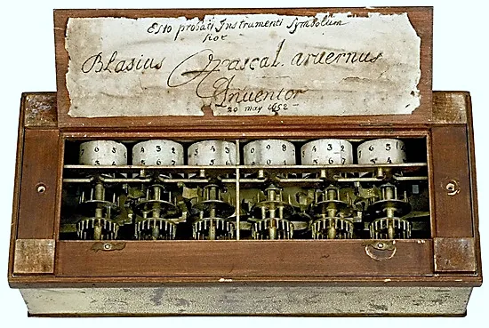
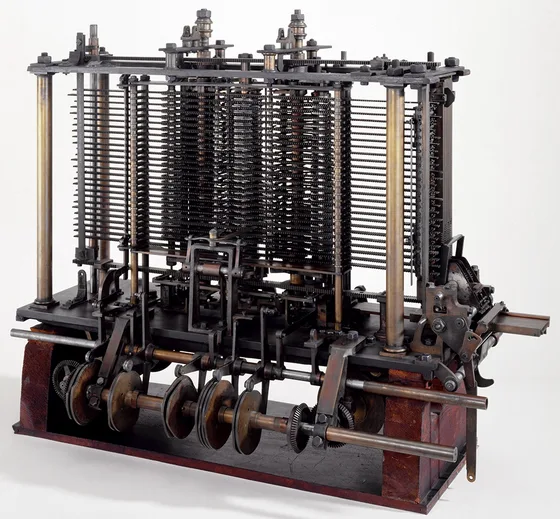
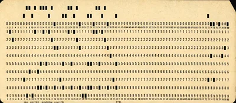

<!-- ds-guard:begin -->
<!--
  Copyright (c) Sercan Külcü. Tüm hakları saklıdır.
  Bu içerik yalnızca https://sercankulcu.github.io adresinde yayımlanır.
-->
<script>
(function () {
  var HOST = "sercankulcu.github.io";
  var izinli = function (h) { return h === HOST || h === "localhost" || h === "127.0.0.1" || h === "[::1]"; };
  var ok = izinli(location.hostname);
  try { if (window.top !== window.self && !izinli(window.top.location.hostname)) ok = false; } catch (e) { ok = false; }
  if (ok) return;
  document.documentElement.style.visibility = "hidden";
  document.addEventListener("DOMContentLoaded", function () {
    document.body.innerHTML = '<p style="max-width:560px;margin:60px auto;padding:0 16px;font:16px/1.6 system-ui,sans-serif;text-align:center">' +
      'Bu içerik yalnızca <a href="https://' + HOST + '">' + HOST + '</a> adresinde görüntülenebilir.<br>' +
      'This content is only available at <a href="https://' + HOST + '">' + HOST + '</a>.<br>&copy; Sercan Külcü</p>';
    document.documentElement.style.visibility = "visible";
  });
})();
</script>
<!-- ds-guard:end -->

<link rel="stylesheet" href="notlar.css">
<style>
/* sunumdaki SVG'lerin bölüme özgü sınıfları (Bolum_01_Hesaplama_Hesaplamali_Dusunme.html ile aynı; kapsam .ds-notes) */
.ds-notes .ds-svg .j012-hot { fill: var(--ds-hot); stroke: var(--ds-accent); stroke-width: 2; }
.ds-notes .ds-svg .j012-goodline { fill: none; stroke: var(--ds-good); stroke-width: 2; stroke-dasharray: 4 3; }
.ds-notes .ds-svg .jtr-mono { font-family: ui-monospace, Consolas, monospace; }
.ds-notes .ds-svg .jtr-hot { fill: var(--ds-hot); stroke: var(--ds-accent); stroke-width: 2; }
.ds-notes .ds-svg .jtr-ok { fill: color-mix(in srgb, var(--ds-good) 22%, var(--ds-bg)); stroke: var(--ds-good); stroke-width: 1.8; }
.ds-notes .ds-svg .jtr-bad { fill: color-mix(in srgb, var(--ds-bad) 15%, var(--ds-bg)); stroke: var(--ds-bad); stroke-width: 1.8; }
.ds-notes .ds-svg .jtr-off { fill: var(--ds-surface); stroke: var(--ds-border); stroke-width: 1.2; stroke-dasharray: 4 3; }
.ds-notes .ds-svg .jtr-surf { fill: var(--ds-surface); stroke: var(--ds-border); stroke-width: 1.2; }
.ds-notes .ds-svg .jtr-acc { fill: var(--ds-accent); font-weight: 700; }
.ds-notes .ds-svg .jtr-goodt { fill: var(--ds-good); font-weight: 700; }
.ds-notes .ds-svg .jtr-badt { fill: var(--ds-bad); font-weight: 700; }
.ds-notes .ds-svg .jtr-aln { stroke: var(--ds-accent); stroke-width: 2.4; fill: none; }
.ds-notes .ds-svg .jtr-ah { fill: var(--ds-accent); }
.ds-notes .ds-svg .jtr-dash { stroke-dasharray: 5 4; }
.ds-notes .ds-svg .jtr-sm { font-size: 12px; }
.ds-notes .ds-svg .jtr-xs { font-size: 11px; }
.ds-notes .ds-svg .jtr-lg { font-size: 18px; }
/* sunumdan alınan fotoğraflar ve program çıktıları */
.ds-notes .nt-fig img { display: block; max-width: min(100%, var(--w, 560px)); height: auto; margin: 0 auto; border-radius: 6px; }
.ds-notes pre.nt-out { border-left: 3px solid var(--ds-good); }
</style>

<article class="ds-notes" id="ds-notes" lang="tr">
<header class="nt-head">
  <p class="nt-kicker">Java ile Nesne Yönelimli Programlama · Ders Notu</p>
  <h1>Bölüm 1.2: Hesaplama ve Hesaplamalı Düşünme</h1>
  <p class="nt-lead">Bir hesap makinesi yalnız toplar ve çarpar. Bir dizüstü bilgisayar ise aynı gün müzik çalar, devre benzetimi yapar, Java derler. Aradaki fark donanımın gücünden çok, makineye verilen talimatların değiştirilebilmesinden gelir. Bu not, bilgisayarın ne yaptığı sorusunu temelden ele alır: hesaplama nedir, bir problem bilgisayarın çözebileceği biçime nasıl getirilir ve bu yolun sınırı nerededir? İlk kesimler programlama, hesaplama ve bilgisayar bilimi kavramlarını tanımlar. Ardından hesaplamalı düşünmenin dört becerisi, yani ayrıştırma, örüntü tanıma, soyutlama ve algoritma tasarımı tek bir örnek üzerinde işlenir. Tarih kesimi delikli kartlardan depolanan programlı bilgisayara uzanır. Turing makinesi hesaplamanın kesin tanımını verir ve her problemin çözülemeyeceğini gösterir. Son kesimler bildirimsel ve buyurusal bilgiyi karekök ve EBOB örnekleriyle ayırır; algoritmayı, problem belirlemeyi ve sıralı, koşullu, döngülü işlemleri Java kodlarıyla anlatır.</p>
  <ul class="nt-links" aria-label="İlgili bağlantılar">
    <li><a href="../slides/Bolum_01_Hesaplama_Hesaplamali_Dusunme.html">Sunum</a></li>
    <li><a href="../slides/Bolum_01_Hesaplama_Hesaplamali_Dusunme_Calisma_Sorulari.html">Çalışma soruları</a></li>
    <li><a href="../pdf/Bolum_01_Hesaplama_Hesaplamali_Dusunme.pdf">Sunum (PDF)</a></li>
    <li><a href="../sozluk.html">Terim sözlüğü</a></li>
  </ul>
</header>

<section class="nt-goals" aria-labelledby="ciktilar">
  <h2 id="ciktilar">Öğrenme çıktıları</h2>
  <dl>
    <dt>Temel kavramlar</dt>
    <dd>Programlama, hesaplama ve bilgisayar bilimini tanımlamak; bilgisayar biliminin teknolojiden ibaret olmadığını açıklamak.</dd>
    <dt>Hesaplamalı düşünme</dt>
    <dd>Ayrıştırma, örüntü tanıma, soyutlama ve algoritma tasarımı becerilerini bir probleme sırayla uygulamak.</dd>
    <dt>Tarihsel gelişim</dt>
    <dd>Sabit ve depolanan programlı bilgisayarı ayırt etmek; Babbage, Lovelace, ABC, Colossus, ENIAC, EDVAC ve von Neumann mimarisinin yerini açıklamak.</dd>
    <dt>Turing makinesi</dt>
    <dd>Bant, bant başlığı ve kural tablosuyla basit bir Turing makinesini adım adım çalıştırmak; hesaplanabilirlik ve durma problemi kavramlarını açıklamak.</dd>
    <dt>Bilgi türleri</dt>
    <dd>Bildirimsel (ne?) ve buyurusal (nasıl?) bilgiyi karekök ve EBOB örnekleriyle ayırt etmek; Babil yöntemini ve Öklid algoritmasını Java'da izlemek.</dd>
    <dt>Algoritma ve işlemler</dt>
    <dd>Algoritmanın özelliklerini saymak, bir problemin girdisini ve çıktısını belirlemek; sıralı, koşullu ve döngülü işlemleri tanımak, <code>repeat … until</code> ile <code>do … while</code> arasındaki ilişkiyi açıklamak.</dd>
  </dl>
</section>

<nav class="nt-toc" aria-labelledby="icindekiler">
  <h2 id="icindekiler">İçindekiler</h2>
  <ol>
    <li><a href="#s1-2-1">1.2.1 Programlama ve hesaplama</a>
      <ol>
        <li><a href="#s1-2-1-1">1.2.1.1 Programlama</a></li>
        <li><a href="#s1-2-1-2">1.2.1.2 Programlamanın rolü</a></li>
        <li><a href="#s1-2-1-3">1.2.1.3 Hesaplama</a></li>
        <li><a href="#s1-2-1-4">1.2.1.4 Hesaplamanın yapı taşları</a></li>
        <li><a href="#s1-2-1-5">1.2.1.5 Kod izleme: Hesaplama programı</a></li>
      </ol>
    </li>
    <li><a href="#s1-2-2">1.2.2 Bilgisayar bilimi</a>
      <ol>
        <li><a href="#s1-2-2-1">1.2.2.1 Teknolojiden fazlası</a></li>
        <li><a href="#s1-2-2-2">1.2.2.2 Üç dayanak: mantık, problem çözme, yaratıcılık</a></li>
        <li><a href="#s1-2-2-3">1.2.2.3 Teknoloji ve sosyal sorumluluk</a></li>
        <li><a href="#s1-2-2-4">1.2.2.4 Bilgisayar biliminin konuları</a></li>
      </ol>
    </li>
    <li><a href="#s1-2-3">1.2.3 Hesaplamalı düşünme</a>
      <ol>
        <li><a href="#s1-2-3-1">1.2.3.1 Tanım</a></li>
        <li><a href="#s1-2-3-2">1.2.3.2 Ayrıştırma</a></li>
        <li><a href="#s1-2-3-3">1.2.3.3 Örüntü tanıma</a></li>
        <li><a href="#s1-2-3-4">1.2.3.4 Soyutlama</a></li>
        <li><a href="#s1-2-3-5">1.2.3.5 Algoritma tasarımı</a></li>
        <li><a href="#s1-2-3-6">1.2.3.6 Dört beceri bir arada: not ortalaması</a></li>
      </ol>
    </li>
    <li><a href="#s1-2-4">1.2.4 Bilgisayarın tarihi</a>
      <ol>
        <li><a href="#s1-2-4-1">1.2.4.1 Bilgisayar nedir?</a></li>
        <li><a href="#s1-2-4-2">1.2.4.2 Elektronik ve dijital</a></li>
        <li><a href="#s1-2-4-3">1.2.4.3 Sabit programlı bilgisayar</a></li>
        <li><a href="#s1-2-4-4">1.2.4.4 Babbage ve Analitik Makine</a></li>
        <li><a href="#s1-2-4-5">1.2.4.5 Ada Lovelace ve ilk program</a></li>
        <li><a href="#s1-2-4-6">1.2.4.6 Zaman çizelgesi ve depolanan program</a></li>
        <li><a href="#s1-2-4-7">1.2.4.7 İlk elektronik bilgisayarlar: ABC ve Colossus</a></li>
        <li><a href="#s1-2-4-8">1.2.4.8 Vakum tüpü ve transistör</a></li>
        <li><a href="#s1-2-4-9">1.2.4.9 ENIAC ve EDVAC</a></li>
        <li><a href="#s1-2-4-10">1.2.4.10 Genel amaçlı bilgisayar</a></li>
        <li><a href="#s1-2-4-11">1.2.4.11 İlk programlar ve Fortran</a></li>
      </ol>
    </li>
    <li><a href="#s1-2-5">1.2.5 Turing makineleri</a>
      <ol>
        <li><a href="#s1-2-5-1">1.2.5.1 Evrensel Turing makinesi</a></li>
        <li><a href="#s1-2-5-2">1.2.5.2 Turing makinesinin parçaları</a></li>
        <li><a href="#s1-2-5-3">1.2.5.3 Örnek: bitleri ters çeviren makine</a></li>
        <li><a href="#s1-2-5-4">1.2.5.4 Hesaplanabilirlik ve durma problemi</a></li>
        <li><a href="#s1-2-5-5">1.2.5.5 Turing-tamlık ve Java</a></li>
      </ol>
    </li>
    <li><a href="#s1-2-6">1.2.6 Bilgisayarların sınırları</a>
      <ol>
        <li><a href="#s1-2-6-1">1.2.6.1 Kaynak sınırları</a></li>
        <li><a href="#s1-2-6-2">1.2.6.2 Sınırlar Java'da da görünür</a></li>
        <li><a href="#s1-2-6-3">1.2.6.3 Makineler ve teknoloji</a></li>
      </ol>
    </li>
    <li><a href="#s1-2-7">1.2.7 Bildirimsel ve buyurusal bilgi</a>
      <ol>
        <li><a href="#s1-2-7-1">1.2.7.1 İki bilgi türü</a></li>
        <li><a href="#s1-2-7-2">1.2.7.2 Bildirimsel bilgi</a></li>
        <li><a href="#s1-2-7-3">1.2.7.3 Buyurusal bilgi: Babil yöntemi</a></li>
        <li><a href="#s1-2-7-4">1.2.7.4 Babil yöntemi Java ile</a></li>
        <li><a href="#s1-2-7-5">1.2.7.5 EBOB: iki tanım</a></li>
        <li><a href="#s1-2-7-6">1.2.7.6 Öklid algoritması</a></li>
        <li><a href="#s1-2-7-7">1.2.7.7 Öklid algoritması Java ile</a></li>
      </ol>
    </li>
    <li><a href="#s1-2-8">1.2.8 Algoritma ve problem</a>
      <ol>
        <li><a href="#s1-2-8-1">1.2.8.1 Algoritma</a></li>
        <li><a href="#s1-2-8-2">1.2.8.2 Girdi, işlem, çıktı</a></li>
        <li><a href="#s1-2-8-3">1.2.8.3 Belirsiz bir isteği netleştirmek</a></li>
      </ol>
    </li>
    <li><a href="#s1-2-9">1.2.9 Algoritmik işlemler</a>
      <ol>
        <li><a href="#s1-2-9-1">1.2.9.1 Üç işlem türü</a></li>
        <li><a href="#s1-2-9-2">1.2.9.2 while: önce koşul</a></li>
        <li><a href="#s1-2-9-3">1.2.9.3 repeat … until ve do … while</a></li>
        <li><a href="#s1-2-9-4">1.2.9.4 Sonsuz döngü</a></li>
      </ol>
    </li>
    <li><a href="#s1-2-10">1.2.10 Sık yapılan hatalar</a></li>
    <li><a href="#s1-2-11">1.2.11 Özet</a></li>
    <li><a href="#s1-2-12">1.2.12 Kavram listesi</a></li>
    <li><a href="#s1-2-13">1.2.13 Kendini Dene</a></li>
    <li><a href="#s1-2-14">1.2.14 İleri okuma</a></li>
    <li><a href="#s1-2-15">1.2.15 Kaynaklar</a></li>
  </ol>
</nav>

<h2 class="nt-pb" id="s1-2-1"><span class="nt-num">1.2.1</span>Programlama ve hesaplama</h2>

<p>Bilgisayar çok hızlı çalışan ama hiçbir şeyi kendiliğinden bilmeyen bir yardımcıdır. Saniyede milyarlarca işlem yapar, yine de hangi işlemi hangi sırayla yapacağına kendisi karar veremez. Bu kararı ona yazılı bir talimat listesi verir. O listeye <strong>program</strong>, listeyi yazma işine <strong>programlama</strong> denir. Programın yaptırdığı iş ise çoğu zaman bir <strong>hesaplamadır</strong>: veri alınır, işlenir ve bir sonuç üretilir. Bu kesim iki kavramı ayrı ayrı tanımlar ve küçük bir Java programında ikisinin nasıl birleştiğini gösterir.</p>

<h3 id="s1-2-1-1"><span class="nt-num">1.2.1.1</span>Programlama</h3>

<div class="nt-box nt-box--tanim" id="tanim-programlama">
  <span class="nt-box__title">Tanım 1.2.1</span>
  <p><strong>Programlama</strong> (<span lang="en">programming</span>), bir bilgisayara yapacağı işi adım adım bildiren talimatları yazma etkinliğidir. Bu talimatların oluşturduğu metne <strong>program</strong> denir. Talimatlar bir <strong>programlama dili</strong> ile yazılır; Java, Python ve C bu dillere örnektir.</p>
</div>

<p>Programlama dili, insan ile makine arasında bir köprüdür. İnsan için okunaklı, makine için de kesin olmalıdır. Günlük konuşmada “biraz bekle” ya da “uygun bir sayı seç” demek yeterlidir; dinleyen kişi boşlukları kendi yorumuyla doldurur. Bilgisayar böyle bir yorum yapmaz. Ne kadar bekleyeceği, hangi sayıyı seçeceği açıkça yazılmamışsa ya hata verir ya da yanlış bir şey yapar. Bu yüzden programlama dillerinin kuralları sıkıdır: bir noktalı virgül eksikse Java programı derlenmez.</p>

<p>Programlanan bir bilgisayar karmaşık görevleri yerine getirebilir. Akıllı telefon, tablet, dizüstü bilgisayar, çamaşır makinesi ve otomobil, içlerinde çalışan programlar sayesinde iş görür. İnternet üzerinden alışveriş, haber, iletişim ve eğitim de programların ürünüdür. Bilgisayarlar evden iş yerine, eğlenceden eğitime her alana girmiştir.</p>

<p>Programlama öğrenmenin bir yararı da düşünme biçimine yansır. Bir işi bilgisayara yaptırabilmek için önce o işi tam olarak anlamak gerekir. “Ortalama al” gibi kısa bir isteğin arkasında kaç sayı olduğu, sayıların nereden geldiği ve sonucun nasıl yazılacağı gibi sorular yatar. Bu soruları sormayı ve yanıtlamayı öğrenen kişi, problem çözmede de daha düzenli düşünür.</p>

<h3 id="s1-2-1-2"><span class="nt-num">1.2.1.2</span>Programlamanın rolü</h3>

<p>Programlama, bilgisayarların istediğimiz görevleri yerine getirmesi için kullanılan bir araçtır. Programcılar bilgisayarları hayatın her alanında daha kullanışlı ve verimli hâle getirir. Üç alan bu rolü iyi örnekler:</p>

<ul>
  <li><strong>Otomasyon:</strong> Akıllı termostatlar sıcaklığı ölçüp ısıtıcıyı açar ya da kapatır. Aydınlatma ve güvenlik sistemleri belirli koşullarda kendiliğinden devreye girer. Fabrikalardaki robotlar aynı kaynağı ya da montajı binlerce kez aynı doğrulukla yapar.</li>
  <li><strong>Sağlık:</strong> Kalp pili kalbin ritmini sürekli ölçer ve gerektiğinde uyarı verir. MR cihazı ölçülen sinyallerden görüntü üretir; bu dönüşüm baştan sona bir hesaplamadır. Hastane bilgi sistemleri ve randevu sistemleri de programlarla çalışır.</li>
  <li><strong>Eğitim:</strong> Çevrim içi ders platformları, öğretim yazılımları, sınav ve not sistemleri programlanmış bilgisayarların ürünüdür.</li>
</ul>

<p>Elektrik-elektronik mühendisliği bu alanların hepsine dokunur. Bir mikrodenetleyiciye yüklenen gömülü yazılım, bir sensörden gelen sinyali süzen sayısal filtre ya da bir motorun hızını ayarlayan kontrol döngüsü programlamayla yazılır. Devre tasarımı ile yazılım arasındaki sınır, bu tür sistemlerde giderek incelir.</p>

<h3 id="s1-2-1-3"><span class="nt-num">1.2.1.3</span>Hesaplama</h3>

<div class="nt-box nt-box--tanim" id="tanim-hesaplama">
  <span class="nt-box__title">Tanım 1.2.2</span>
  <p><strong>Hesaplama</strong> (<span lang="en">computation</span>), bir bilgisayarın ya da hesaplama cihazının bir görevi yerine getirmek için verileri işleme sürecidir. Hesaplama girdi olarak veri alır, bu veriyi matematiksel işlemler ve mantıksal kararlarla işler ve bir sonuç üretir.</p>
</div>

<p>Hesaplama bilgisayarların temel işlevidir. Ekranda bir harfin çizilmesi bile hesaplamadır: harfin biçimi, boyutu ve konumu sayılara çevrilir, bu sayılardan hangi piksellerin hangi renge boyanacağı hesaplanır. Hesaplama üç tür iş içerir. <strong>Matematiksel işlemler</strong> toplama ve çarpma gibi işlemlerdir. <strong>Mantıksal kararlar</strong> bir koşulun doğru olup olmadığına bakar. <strong>Veri işleme</strong> ise veriyi sıralamak, aramak ve biçimlendirmek gibi genel işleri kapsar.</p>

<figure class="nt-fig" id="sekil-hesaplama" style="--w:330px">
  <div class="nt-fig__box"><svg class="ds-svg" viewBox="0 0 330 56" width="330" height="56" role="img" aria-label="Hesaplama: veri alınır, işlenir, sonuç üretilir"><rect class="box" x="4" y="8" width="82" height="40" rx="6"/><text class="txt jtr-sm" x="45" y="26" text-anchor="middle">veri</text><text class="lbl jtr-mono jtr-xs" x="45" y="41" text-anchor="middle">7, 3</text><path class="line" d="M86 28 L105 28"/><polygon class="ah" points="112,28 104,23.5 104,32.5"/><rect class="jtr-hot" x="112" y="4" width="104" height="48" rx="6"/><text class="txt jtr-sm" x="164" y="24" text-anchor="middle">işlem</text><text class="lbl jtr-mono jtr-xs" x="164" y="41" text-anchor="middle">+  ×  karar</text><path class="line" d="M216 28 L235 28"/><polygon class="ah" points="242,28 234,23.5 234,32.5"/><rect class="jtr-ok" x="242" y="8" width="82" height="40" rx="6"/><text class="txt jtr-sm" x="283" y="26" text-anchor="middle">sonuç</text><text class="lbl jtr-mono jtr-xs" x="283" y="41" text-anchor="middle">10, 21</text></svg></div>
  <figcaption><b>Şekil 1.2.1:</b> Hesaplamanın üç aşaması. Veri (7 ve 3) alınır, toplama, çarpma ve karar gibi işlemlerden geçer, sonuç (10 ve 21) üretilir.</figcaption>
</figure>

<p><a href="#sekil-hesaplama">Şekil 1.2.1'de</a> görülen düzen bütün hesaplamalarda aynıdır. Değişen, verinin türü ve işlemin karmaşıklığıdır. Birkaç örnek:</p>

<ul>
  <li><strong>Veri analizi:</strong> Bir sıcaklık sensöründen bir gün boyunca alınan ölçümlerden ortalama, en büyük değer ve eğilim hesaplanır; sonuç bir grafik olarak çizilir.</li>
  <li><strong>Benzetim (simülasyon):</strong> Bir devrenin ya da hava durumunun matematiksel modeli kurulur. Bilgisayar modeli küçük zaman adımlarıyla ilerletir ve sistemin nasıl davranacağını öngörür.</li>
  <li><strong>Oyun geliştirme:</strong> Her karede nesnelerin konumları fizik kurallarıyla güncellenir, çarpışmalar denetlenir, bilgisayarın yönettiği karakterler karar verir.</li>
</ul>

<p>Programlama ile hesaplama arasındaki ilişki şöyle özetlenebilir: hesaplama yapılan iştir, programlama o işin tarifini yazmaktır. İyi yazılmış bir program, aynı hesaplamayı daha az adımla, daha az bellekle ve daha az hatayla yaptırır. Bu yüzden programlama hesaplamayı daha etkili ve verimli hâle getirir.</p>

<h3 id="s1-2-1-4"><span class="nt-num">1.2.1.4</span>Hesaplamanın yapı taşları</h3>

<p>Hesaplamanın iki temel yapı taşı vardır. Birincisi <strong>matematiktir</strong>: toplama, çıkarma, çarpma ve bölme gibi işlemler. İkincisi <strong>mantıktır</strong>: kararlar, mantıksal ifadelerin değerlendirilmesiyle alınır. “Eğer hava güneşliyse dışarı çık” cümlesi bir mantık işlemidir. Önce “hava güneşli mi?” sorusunun yanıtı bulunur; yanıt doğru ya da yanlıştır. Ardından bu yanıta göre bir eylem seçilir.</p>

<p>Aşağıdaki Java programı iki yapı taşını birlikte kullanır. İki sayının toplamını ve çarpımını hesaplar, sonra bir koşula göre karar verir.</p>

<pre class="nt-code"><code><span class="kw">public</span> <span class="kw">class</span> Hesaplama {
    <span class="kw">public</span> <span class="kw">static</span> <span class="kw">void</span> main(String[] args) {
        <span class="kw">int</span> a = 7, b = 3;
        <span class="kw">int</span> toplam = a + b;     <span class="cm">// matematik</span>
        <span class="kw">int</span> carpim = a * b;     <span class="cm">// matematik</span>
        <span class="kw">boolean</span> gunesli = <span class="kw">true</span>; <span class="cm">// mantık</span>
        System.out.println("Toplam: " + toplam);
        System.out.println("Çarpım: " + carpim);
        <span class="kw">if</span> (gunesli) {          <span class="cm">// karar</span>
            System.out.println("Dışarı çık");
        }
    }
}</code></pre>

<p>Program çalıştırıldığında şu çıktıyı üretir:</p>

<pre class="nt-code nt-out"><code>Toplam: 10
Çarpım: 21
Dışarı çık</code></pre>

<p>Program satır satır şöyle çalışır:</p>
<ul>
  <li><code>public class Hesaplama</code> satırı programın sınıfını tanımlar. Java'da her kod bir sınıfın içinde yazılır ve dosyanın adı sınıfın adıyla aynı olmalıdır: <code>Hesaplama.java</code>.</li>
  <li><code>main</code> metodu programın giriş noktasıdır. Java sanal makinesi programı başlatınca ilk bu metodu çağırır.</li>
  <li><code>int a = 7, b = 3;</code> satırı iki tam sayı değişkeni tanımlar ve onlara ilk değerlerini verir. Bunlar hesaplamanın girdileridir.</li>
  <li><code>toplam</code> ve <code>carpim</code> satırları matematik yapı taşını kullanır. Sağ taraftaki ifade hesaplanır, sonuç soldaki değişkene yazılır.</li>
  <li><code>boolean gunesli = true;</code> satırı mantık yapı taşının verisini hazırlar. <code>boolean</code> tipindeki bir değişken yalnız iki değerden birini alabilir: <code>true</code> ya da <code>false</code>.</li>
  <li>İki <code>println</code> satırı sonuçları yazdırır. <code>"Toplam: " + toplam</code> ifadesinde <code>+</code> işareti sayıyı metne ekler; buna dizgi birleştirme denir.</li>
  <li><code>if (gunesli)</code> satırı kararı verir. Koşul <code>true</code> olduğu için süslü parantezlerin içindeki blok çalışır ve “Dışarı çık” yazılır. Koşul <code>false</code> olsaydı blok atlanır, programın çıktısı yalnız iki satır olurdu.</li>
</ul>

<h3 id="s1-2-1-5"><span class="nt-num">1.2.1.5</span>Kod izleme: Hesaplama programı</h3>

<p>Bir programın ne yaptığını anlamanın en güvenilir yolu onu elle izlemektir. <strong>Kod izleme</strong>, programı satır satır yürütür gibi okuyup her adımda değişkenlerin değerini ve ekrana yazılanları kaydetmektir. <a href="#tab-hesaplama-iz">Tablo 1.2.1</a> <code>Hesaplama</code> programının izlemesidir. Satır numaraları kodun ilk satırından sayılır: 1. satır sınıf başlığı, 3. satır <code>int a = 7, b = 3;</code> satırıdır.</p>

<div class="nt-tablewrap" id="tab-hesaplama-iz">
<table class="nt-table">
  <caption>Tablo 1.2.1: Hesaplama programının izlemesi. Boş hücre, değişkenin henüz tanımlanmadığını gösterir.</caption>
  <thead><tr><th scope="col">Satır</th><th scope="col"><code>a</code></th><th scope="col"><code>b</code></th><th scope="col"><code>toplam</code></th><th scope="col"><code>carpim</code></th><th scope="col"><code>gunesli</code></th><th scope="col">Çıktı (yeni satır)</th></tr></thead>
  <tbody>
    <tr><td>3</td><td>7</td><td>3</td><td></td><td></td><td></td><td></td></tr>
    <tr><td>4</td><td>7</td><td>3</td><td><strong>10</strong></td><td></td><td></td><td></td></tr>
    <tr><td>5</td><td>7</td><td>3</td><td>10</td><td><strong>21</strong></td><td></td><td></td></tr>
    <tr><td>6</td><td>7</td><td>3</td><td>10</td><td>21</td><td><strong>true</strong></td><td></td></tr>
    <tr><td>7</td><td>7</td><td>3</td><td>10</td><td>21</td><td>true</td><td>Toplam: 10</td></tr>
    <tr><td>8</td><td>7</td><td>3</td><td>10</td><td>21</td><td>true</td><td>Çarpım: 21</td></tr>
    <tr><td>9</td><td>7</td><td>3</td><td>10</td><td>21</td><td>true</td><td>(koşul doğru)</td></tr>
    <tr><td>10</td><td>7</td><td>3</td><td>10</td><td>21</td><td>true</td><td>Dışarı çık</td></tr>
  </tbody>
</table>
</div>

<figure class="nt-fig" id="sekil-hesaplama-iz" style="--w:300px">
  <div class="nt-fig__row"><svg class="ds-svg" viewBox="0 0 300 104" width="300" height="104" role="img" aria-label="değişkenler: a=7, b=3"><text class="lbl jtr-xs" x="32" y="16" text-anchor="middle">a</text><rect class="jtr-hot" x="4" y="22" width="56" height="30" rx="5"/><text class="txt jtr-mono jtr-sm" x="32" y="42" text-anchor="middle">7</text><text class="lbl jtr-xs" x="92" y="16" text-anchor="middle">b</text><rect class="jtr-hot" x="64" y="22" width="56" height="30" rx="5"/><text class="txt jtr-mono jtr-sm" x="92" y="42" text-anchor="middle">3</text><text class="lbl jtr-xs" x="152" y="16" text-anchor="middle">toplam</text><rect class="jtr-off" x="124" y="22" width="56" height="30" rx="5"/><text class="txt jtr-mono jtr-sm" x="152" y="42" text-anchor="middle"></text><text class="lbl jtr-xs" x="212" y="16" text-anchor="middle">carpim</text><rect class="jtr-off" x="184" y="22" width="56" height="30" rx="5"/><text class="txt jtr-mono jtr-sm" x="212" y="42" text-anchor="middle"></text><text class="lbl jtr-xs" x="272" y="16" text-anchor="middle">gunesli</text><rect class="jtr-off" x="244" y="22" width="56" height="30" rx="5"/><text class="txt jtr-mono jtr-sm" x="272" y="42" text-anchor="middle"></text><path class="jtr-aln" d="M4 60 L234 60"/><text class="lbl jtr-xs" x="119" y="74" text-anchor="middle">matematik: girdiler ve sonuçlar</text><path class="line" d="M244 60 L296 60"/><text class="lbl jtr-xs" x="270" y="74" text-anchor="middle">mantık</text></svg> <svg class="ds-svg" viewBox="0 0 300 104" width="300" height="104" role="img" aria-label="değişkenler: a=7, b=3, toplam=10, carpim=21"><text class="lbl jtr-xs" x="32" y="16" text-anchor="middle">a</text><rect class="box" x="4" y="22" width="56" height="30" rx="5"/><text class="txt jtr-mono jtr-sm" x="32" y="42" text-anchor="middle">7</text><text class="lbl jtr-xs" x="92" y="16" text-anchor="middle">b</text><rect class="box" x="64" y="22" width="56" height="30" rx="5"/><text class="txt jtr-mono jtr-sm" x="92" y="42" text-anchor="middle">3</text><text class="lbl jtr-xs" x="152" y="16" text-anchor="middle">toplam</text><rect class="box" x="124" y="22" width="56" height="30" rx="5"/><text class="txt jtr-mono jtr-sm" x="152" y="42" text-anchor="middle">10</text><text class="lbl jtr-xs" x="212" y="16" text-anchor="middle">carpim</text><rect class="jtr-hot" x="184" y="22" width="56" height="30" rx="5"/><text class="txt jtr-mono jtr-sm" x="212" y="42" text-anchor="middle">21</text><text class="lbl jtr-xs" x="272" y="16" text-anchor="middle">gunesli</text><rect class="jtr-off" x="244" y="22" width="56" height="30" rx="5"/><text class="txt jtr-mono jtr-sm" x="272" y="42" text-anchor="middle"></text><path class="jtr-aln" d="M4 60 L234 60"/><text class="lbl jtr-xs" x="119" y="74" text-anchor="middle">matematik: girdiler ve sonuçlar</text><path class="line" d="M244 60 L296 60"/><text class="lbl jtr-xs" x="270" y="74" text-anchor="middle">mantık</text><text class="txt jtr-mono jtr-acc jtr-sm" x="150" y="98" text-anchor="middle">a * b → 7 × 3 = 21</text></svg> <svg class="ds-svg" viewBox="0 0 300 126" width="300" height="126" role="img" aria-label="değişkenler: a=7, b=3, toplam=10, carpim=21, gunesli=true"><text class="lbl jtr-xs" x="32" y="16" text-anchor="middle">a</text><rect class="box" x="4" y="22" width="56" height="30" rx="5"/><text class="txt jtr-mono jtr-sm" x="32" y="42" text-anchor="middle">7</text><text class="lbl jtr-xs" x="92" y="16" text-anchor="middle">b</text><rect class="box" x="64" y="22" width="56" height="30" rx="5"/><text class="txt jtr-mono jtr-sm" x="92" y="42" text-anchor="middle">3</text><text class="lbl jtr-xs" x="152" y="16" text-anchor="middle">toplam</text><rect class="box" x="124" y="22" width="56" height="30" rx="5"/><text class="txt jtr-mono jtr-sm" x="152" y="42" text-anchor="middle">10</text><text class="lbl jtr-xs" x="212" y="16" text-anchor="middle">carpim</text><rect class="box" x="184" y="22" width="56" height="30" rx="5"/><text class="txt jtr-mono jtr-sm" x="212" y="42" text-anchor="middle">21</text><text class="lbl jtr-xs" x="272" y="16" text-anchor="middle">gunesli</text><rect class="box" x="244" y="22" width="56" height="30" rx="5"/><text class="txt jtr-mono jtr-sm" x="272" y="42" text-anchor="middle">true</text><path class="jtr-aln" d="M4 60 L234 60"/><text class="lbl jtr-xs" x="119" y="74" text-anchor="middle">matematik: girdiler ve sonuçlar</text><path class="line" d="M244 60 L296 60"/><text class="lbl jtr-xs" x="270" y="74" text-anchor="middle">mantık</text><polygon class="jtr-hot" points="90,84 150,104 90,124 30,104"/><text class="txt jtr-mono jtr-sm" x="90" y="109" text-anchor="middle">gunesli ?</text><path class="jtr-aln" d="M150 104 L179 104"/><polygon class="jtr-ah" points="186,104 178,99.5 178,108.5"/><text class="jtr-goodt jtr-sm" x="166" y="98" text-anchor="middle">E</text><rect class="jtr-ok" x="188" y="90" width="108" height="28" rx="5"/><text class="txt jtr-sm" x="242" y="109" text-anchor="middle">Dışarı çık</text></svg></div>
  <figcaption><b>Şekil 1.2.2:</b> Kod izlemesinden üç an. (a) 3. satır: girdiler <code>a</code> = 7 ve <code>b</code> = 3 saklanır; öteki kutular henüz boştur. (b) 5. satır: <code>a * b</code> = 21 hesaplanır. (c) 10. satır: <code>gunesli</code> doğru olduğu için karar kutusunun “Evet” kolu seçilir ve “Dışarı çık” yazılır.</figcaption>
</figure>

<p>İzlemede iki ayrıntı dikkat çeker. Birincisi, bir değişken değer aldıktan sonra yeni bir atama gelmedikçe o değeri korur; tabloda <code>a</code> ve <code>b</code> baştan sona değişmez. İkincisi, 9. satırda ekrana bir şey yazılmaz. Bu satırda yalnız koşul değerlendirilir ve hangi yolun izleneceği belirlenir. Kararın sonucu bir sonraki satırda görünür. Program böylece hesaplamanın üç aşamasını sırayla gösterir: veri alındı, işlendi, sonuç üretildi.</p>

<div class="nt-box nt-box--hata">
  <span class="nt-box__title">Sık yapılan hata</span>
  <p>Dizgi birleştirmede işlem sırasını unutmak. <code>System.out.println("Toplam: " + a + b);</code> satırı “Toplam: 10” değil “Toplam: 73” yazar. Java ifadeyi soldan sağa değerlendirir: önce <code>"Toplam: " + a</code> birleşir ve “Toplam: 7” dizgisi oluşur, ardından buna <code>b</code> eklenir. Sayıların önce toplanması için parantez gerekir: <code>"Toplam: " + (a + b)</code>.</p>
</div>

<h2 class="nt-pb" id="s1-2-2"><span class="nt-num">1.2.2</span>Bilgisayar bilimi</h2>

<p>“Bilgisayar bilimi” adı yanıltıcı olabilir. Ad, alanın bilgisayar denen makineyle ilgili olduğunu düşündürür. Oysa alanın asıl konusu makine değil, makinenin çözdüğü problemler ve bu problemleri çözme yollarıdır.</p>

<h3 id="s1-2-2-1"><span class="nt-num">1.2.2.1</span>Teknolojiden fazlası</h3>

<div class="nt-box nt-box--tanim" id="tanim-bb">
  <span class="nt-box__title">Tanım 1.2.3</span>
  <p><strong>Bilgisayar bilimi</strong> (<span lang="en">computer science</span>), bilginin nasıl işlendiğini, depolandığını ve iletildiğini inceleyen; problemleri tanımlama, analiz etme ve bu problemlere etkili çözümler üretme yollarını araştıran bilim dalıdır.</p>
</div>

<p>Bilgisayar bilimi yalnız bilgisayarlarla ilgili teknik bilgiden oluşmaz; aynı zamanda problem çözme becerileriyle ilgili bir disiplindir. Teknoloji bu disiplinde bir araçtır. Temel amaç sorunları çözmek ve bilgiyi daha iyi anlamaktır. Sık anılan bir benzetme bunu açıkça anlatır: astronomi teleskoplarla ne kadar ilgiliyse, bilgisayar bilimi de bilgisayarlarla o kadar ilgilidir. Teleskop gökyüzünü incelemenin aracıdır; bilgisayar da problem çözmenin.</p>

<p>Bu bakışın pratik bir sonucu vardır. Bir programlama dilinin ya da bir geliştirme ortamının ayrıntıları birkaç yılda değişir. Bir problemi parçalara ayırma, doğru veri yapısını seçme ve çözümün doğruluğunu sınama becerisi ise değişmez. Bu derste Java öğrenilir, ama Java'nın arkasındaki düşünme biçimi başka dillere de taşınır.</p>

<h3 id="s1-2-2-2"><span class="nt-num">1.2.2.2</span>Üç dayanak: mantık, problem çözme, yaratıcılık</h3>

<p>Bilgisayar bilimi üç beceriye dayanır:</p>

<ul>
  <li><strong>Mantık:</strong> Verileri değerlendirip doğru sonuçlar çıkarma yeteneğidir. Program yazma sürecinin temelini oluşturur. Bir <code>if</code> deyiminin koşulu, bir döngünün ne zaman duracağı, iki koşulun <code>&amp;&amp;</code> ile mi <code>||</code> ile mi bağlanacağı hep mantık sorularıdır.</li>
  <li><strong>Problem çözme:</strong> Karmaşık problemleri tanımlama ve çözme becerisidir. Her problem, mantıklı bir adım sırasıyla çözülür. Bu adım sırasını bulmak programlamanın en zor ve en öğretici kısmıdır.</li>
  <li><strong>Yaratıcılık:</strong> Yeni ve yenilikçi çözümlerin doğmasını sağlar. Aynı problemin birçok farklı çözümü olabilir. İki sayının EBOB'u bütün sayıları tek tek deneyerek de, Öklid algoritmasıyla da bulunur; ikisi aynı sonucu verir, ama büyük sayılarda biri diğerinden çok daha hızlıdır.</li>
</ul>

<p>Bu üç beceri ayrı ayrı öğretilmez; programlama yaptıkça birlikte gelişir. Bir programdaki hata ayıklanırken mantık, programın parçaları tasarlanırken problem çözme, takılınan bir noktada başka bir yol aranırken yaratıcılık kullanılır.</p>

<h3 id="s1-2-2-3"><span class="nt-num">1.2.2.3</span>Teknoloji ve sosyal sorumluluk</h3>

<p>Bilgisayar bilimi, teknolojinin insanlara nasıl yardımcı olabileceğini ve toplumsal sorunların çözümüne nasıl katkı sağlayabileceğini düşünmeye yöneltir. Dünyayı daha iyi anlamaya ve geliştirmeye yardımcı olur. Teknolojiyi insanlığın hizmetine sunma sorumluluğunu da vurgular. Bu yüzden alan, yalnız teknolojiyle ilgilenenler için değil, problem çözme ve düşünme becerilerini geliştirmek isteyen herkes için ilginçtir.</p>

<p>Uygulama alanları çok geniştir: tıp, ekonomi, astronomi, biyoloji, enerji, ulaşım ve afet yönetimi bunlardan yalnız birkaçıdır. Bir deprem sonrasında hasar tespiti, uydu görüntülerini işleyen programlarla hızlanır. Bir elektrik şebekesinde yük dengelemesi, tüketimi öngören modellerle yapılır.</p>

<p>Bu genişliğin bir bedeli de vardır: yazılan programlar gerçek insanları etkiler. Bir hastane yazılımındaki hata yanlış ilaç dozuna, kişisel verilerin korunmaması da ciddi mağduriyetlere yol açabilir. Programcının sorumluluğu, kodun derlenmesiyle bitmez; kodun doğru çalıştığından ve kullanıcılarına zarar vermediğinden emin olmayı da kapsar.</p>

<h3 id="s1-2-2-4"><span class="nt-num">1.2.2.4</span>Bilgisayar biliminin konuları</h3>

<p>Bilgisayar bilimi gerçekliği anlamayı, modellemeyi ve analiz etmeyi amaçlar. Problemleri çözmek için algoritmalar ve kod kullanılır. Alanın içinde üç geniş başlık öne çıkar:</p>

<ul>
  <li><strong>Soyutlama</strong> (<span lang="en">abstraction</span>): Karmaşık bir sistemin gereksiz ayrıntılarını gizleyip özünü bırakmak. Metro haritası iyi bir örnektir. Harita sokakları, binaları ve gerçek uzaklıkları göstermez; yalnız durakları ve hatları gösterir. Yolcunun bilmesi gereken de budur: hangi duraktan binileceği, nerede aktarma yapılacağı.</li>
  <li><strong>Problem çözme:</strong> Problemi parçalara ayırmak, her parçayı adım adım çözmek ve çözümleri birleştirmek.</li>
  <li><strong>Sanat ve tasarım:</strong> Bilgisayar bilimi mantık ve analitik düşünceyle sınırlı değildir. Dijital medya, elektronik müzik, oyunlar ve animasyon da bu alanın ürünleridir.</li>
</ul>

<p>Soyutlama ile problem çözme, hesaplamalı düşünmenin de iki ayağıdır. Örüntü tanıma ve algoritma tasarımı bu ikisini tamamlar ve dört beceri birlikte bir çalışma yöntemi oluşturur.</p>

<h2 class="nt-pb" id="s1-2-3"><span class="nt-num">1.2.3</span>Hesaplamalı düşünme</h2>

<p>Bir program yazmanın en zor kısmı çoğu zaman Java'nın kurallarını hatırlamak değildir. Asıl zorluk, kodun ilk satırı yazılmadan önce gelir. Problem ne istiyor ve hangi parçalardan oluşuyor? Hangi bilgi gerekli, hangisi gereksiz? Parçalar hangi sırayla çözülecek? Bu sorulara düzenli biçimde yanıt arama alışkanlığına <strong>hesaplamalı düşünme</strong> denir.</p>

<h3 id="s1-2-3-1"><span class="nt-num">1.2.3.1</span>Tanım</h3>

<div class="nt-box nt-box--tanim" id="tanim-hd">
  <span class="nt-box__title">Tanım 1.2.4</span>
  <p><strong>Hesaplamalı düşünme</strong> (<span lang="en">computational thinking</span>), bir problemi ve çözümünü, bir insanın ya da bilgisayarın adım adım yürütebileceği biçimde ifade etme yoludur. Dört beceriye dayanır: <strong>ayrıştırma</strong>, <strong>örüntü tanıma</strong>, <strong>soyutlama</strong> ve <strong>algoritma tasarımı</strong>.</p>
</div>

<p>Terim 2006'da Jeannette Wing'in kısa bir makalesiyle yaygınlaştı. Wing, bu düşünme biçiminin yalnız bilgisayar bilimcilerine değil herkese gerekli olduğunu savundu ve onu okuma, yazma ve aritmetik gibi temel bir beceri saydı. Dört becerili ayrım, bu fikri öğretmek için okullarda ve üniversitelerde yaygın olarak kullanılan bir çerçevedir.</p>

<p>Hesaplamalı düşünme “bilgisayar gibi düşünmek” demek değildir. Bilgisayar düşünmez; yalnız talimatları yürütür. Hesaplamalı düşünme, insanın bir problemi bilgisayara anlatılabilir hâle getirme becerisidir. Aynı beceri bilgisayar olmadan da işe yarar. Bir yemek tarifi yazmak, bir devreyi sınamak için ölçüm sırası belirlemek ya da bir sınava çalışma planı yapmak da aynı dört adımla düzenlenebilir.</p>

<p>Dört beceriyi tek bir problem üzerinde görmek, onları ayrı ayrı tanımlamaktan daha öğreticidir. Bu kesim boyunca örnek problem şudur: <em>bir sınıftaki öğrencilerin not ortalamasını bulmak</em>.</p>

<h3 id="s1-2-3-2"><span class="nt-num">1.2.3.2</span>Ayrıştırma</h3>

<div class="nt-box nt-box--tanim" id="tanim-ayristirma">
  <span class="nt-box__title">Tanım 1.2.5</span>
  <p><strong>Ayrıştırma</strong> (<span lang="en">decomposition</span>), büyük ve karmaşık bir problemi, her biri ayrı ayrı çözülebilecek küçük alt problemlere bölmektir. Terim sözlüğünde aynı kavram <em>problemi parçalama</em> adıyla geçer.</p>
</div>

<p>“Not ortalamasını bul” isteği tek bir adım gibi görünür, ama bilgisayar için dört ayrı işten oluşur:</p>

<ol>
  <li>Notları oku.</li>
  <li>Notları topla.</li>
  <li>Toplamı not sayısına böl.</li>
  <li>Sonucu yaz.</li>
</ol>

<p>Her alt problem tek başına kolaydır. Okuma için bir giriş komutu, toplama için bir döngü, bölme için tek bir işlem, yazma için <code>println</code> yeterlidir. Ayrıştırmanın gücü buradan gelir: zor bir problem, kolay problemlerin birleşimine dönüşür.</p>

<p>Ayrıştırma bir kez yapılıp bırakılmaz. Bir alt problem hâlâ büyükse o da bölünür. “Notları oku” adımı, notların klavyeden mi, bir dosyadan mı, bir veri tabanından mı geleceğine göre yeniden parçalanabilir. Java'da her alt problem çoğu zaman ayrı bir metoda karşılık gelir. Büyük programlar da böyle kurulur: sınıflar ve metotlar, ayrıştırmanın koddaki izleridir.</p>

<p>Ayrıştırmanın elektronikteki karşılığı blok diyagramdır. Bir ses yükselteci tasarlanırken önce ön yükselteç, ton denetimi ve güç katı gibi bloklar ayrılır; her blok ayrı tasarlanıp sınanır, sonra birleştirilir. Bir programdaki metotlar da aynı mantıkla ayrı ayrı yazılıp denenebilir.</p>

<h3 id="s1-2-3-3"><span class="nt-num">1.2.3.3</span>Örüntü tanıma</h3>

<div class="nt-box nt-box--tanim" id="tanim-oruntu">
  <span class="nt-box__title">Tanım 1.2.6</span>
  <p><strong>Örüntü tanıma</strong> (<span lang="en">pattern recognition</span>), alt problemler arasındaki ya da bir problemin bilinen başka problemlerle arasındaki benzerlikleri görmektir. Aynı biçimde tekrar eden bir iş bulunursa tek bir çözüm hepsine uygulanır.</p>
</div>

<p>Not ortalaması örneğinde örüntü açıktır. Birinci notu okuyup toplama eklemek ile ikinci notu okuyup toplama eklemek aynı iştir; yalnız not değişir. Otuz öğrencilik bir sınıf için bu adımı otuz kez ayrı ayrı yazmak gerekmez. Tekrar eden adım bir kez yazılır ve bir <strong>döngüye</strong> konur. Örüntü tanıma, programlamada çoğu zaman “burada bir döngü var” fikrine götürür.</p>

<p>Örüntü yalnız tek problemin içinde aranmaz; problemler arasında da aranır. Not ortalaması ile bir sensörün bir günlük sıcaklık ortalaması aynı problemdir: bir sayı listesinin toplamını alıp eleman sayısına bölmek. Biri için yazılan çözüm, küçük bir değişiklikle öbürüne de uyar. Babil yöntemi ve Öklid algoritmasında da tekrar eden bir adım vardır: biri tahmini iyileştirir, öbürü kalanı hesaplar. Her ikisi de bu adımı belirli bir koşul sağlanana kadar yineler.</p>

<p>Örüntü tanıma tecrübeyle güçlenir. Çok sayıda problem çözmüş bir programcı, yeni bir problemde “bu, en büyüğü bulma problemi” ya da “bu, iki listeyi birleştirme problemi” diyebilir. Problemi tanınan bir kalıba indirgemek, çözümü sıfırdan bulmaktan çok daha hızlıdır.</p>

<h3 id="s1-2-3-4"><span class="nt-num">1.2.3.4</span>Soyutlama</h3>

<div class="nt-box nt-box--tanim" id="tanim-soyutlama">
  <span class="nt-box__title">Tanım 1.2.7</span>
  <p><strong>Soyutlama</strong> (<span lang="en">abstraction</span>), bir problemin çözümü için gerekli olmayan ayrıntıları atıp yalnız önemli özellikleri bırakmaktır.</p>
</div>

<p>Bir öğrenciyle ilgili çok sayıda bilgi vardır: adı, numarası, doğum tarihi, memleketi, devamsızlığı, notları. Ortalama hesabı için bunların çoğu gereksizdir. Öğrencinin adı ya da numarası ortalamayı etkilemez. Gerekli olan yalnız iki bilgidir: notlar ve not sayısı. Soyutlama yapıldıktan sonra problem “otuz öğrencinin ortalaması” olmaktan çıkar, “bir sayı listesinin ortalaması” olur. Bu daha genel bir problemdir ve çözümü başka yerlerde de kullanılabilir.</p>

<p>Metro haritası örneği aynı fikri gösterir: harita gerçek şehrin küçültülmüş bir fotoğrafı değildir; yolcuya gereken bilgi dışındaki her şey atılmıştır. İyi bir soyutlama, atılan ayrıntının gerçekten gereksiz olduğundan emin olmayı gerektirir. Notların ağırlıkları farklıysa, örneğin vize %40 ve final %60 ise, “yalnız notlar yeterli” soyutlaması yanlış olur; ağırlıklar da modele girmelidir.</p>

<p>Soyutlama nesne yönelimli programlamanın da temelidir. Java'da bir <code>Ogrenci</code> sınıfı tasarlanırken gerçek bir öğrencinin bütün özellikleri değil, programın ihtiyaç duyduğu özellikler sınıfa alan olarak konur. Bir kayıt sisteminde ad ve numara gerekir, bir not sisteminde notlar gerekir. Aynı gerçek varlık, farklı programlarda farklı biçimde soyutlanır.</p>

<h3 id="s1-2-3-5"><span class="nt-num">1.2.3.5</span>Algoritma tasarımı</h3>

<div class="nt-box nt-box--tanim" id="tanim-algtasarim">
  <span class="nt-box__title">Tanım 1.2.8</span>
  <p><strong>Algoritma tasarımı</strong> (<span lang="en">algorithm design</span>), çözümü sonlu, açık ve sıralı adımlar olarak yazmaktır. Ortaya çıkan adım listesi bir insanın elle izleyebileceği ya da bir programlama diline çevrilebilecek kesinliktedir.</p>
</div>

<p>Önceki üç beceri problemi hazırlar; algoritma tasarımı çözümü yazar. Not ortalaması için algoritma, sunumdaki sözde kod biçimiyle şöyledir:</p>

<pre class="nt-code"><code><span class="kw">set</span> toplam <span class="kw">to</span> 0
<span class="kw">for</span> <span class="kw">each</span> not in notlar <span class="kw">do</span>
    <span class="kw">set</span> toplam <span class="kw">to</span> toplam + not
<span class="kw">set</span> ort <span class="kw">to</span> toplam / n
<span class="kw">print</span> ort</code></pre>

<p>Bu adımlar ayrıştırmanın dört alt problemini, örüntü tanımanın bulduğu döngüyü ve soyutlamanın bıraktığı iki bilgiyi (notlar ve <span class="m">n</span>) bir araya getirir. Her adım açıktır: ne yapılacağı konusunda yoruma yer yoktur. Adım sayısı sonludur: döngü listedeki her not için bir kez çalışır ve liste bitince durur.</p>

<p>Algoritma yazılırken bazı ayrıntılar da kararlaştırılır. Toplam neden 0'dan başlar? Çünkü hiç not eklenmemişken toplam sıfırdır ve her not bu değere eklenir. Liste boşsa ne olur? <span class="m">n</span> = 0 olur ve bölme tanımsız kalır. İyi tasarlanmış bir algoritma bu durumu da düşünür; örneğin “liste boşsa ‘not yok’ yaz” diye bir adım ekler.</p>

<h3 id="s1-2-3-6"><span class="nt-num">1.2.3.6</span>Dört beceri bir arada: not ortalaması</h3>

<p><a href="#tab-hd">Tablo 1.2.2</a> dört becerinin örnek problemde neye karşılık geldiğini özetler.</p>

<div class="nt-tablewrap" id="tab-hd">
<table class="nt-table">
  <caption>Tablo 1.2.2: Hesaplamalı düşünmenin dört becerisi ve not ortalaması problemindeki karşılıkları.</caption>
  <thead><tr><th scope="col">Beceri</th><th scope="col">Sorduğu soru</th><th scope="col">Not ortalamasındaki karşılığı</th></tr></thead>
  <tbody>
    <tr><td>Ayrıştırma</td><td>Problem hangi parçalardan oluşuyor?</td><td>Oku, topla, böl, yaz.</td></tr>
    <tr><td>Örüntü tanıma</td><td>Tekrar eden ya da tanıdık bir iş var mı?</td><td>Her notu toplama eklemek aynı adımdır: döngü.</td></tr>
    <tr><td>Soyutlama</td><td>Hangi bilgi gerekli, hangisi gereksiz?</td><td>Ad ve numara gereksiz; notlar ve not sayısı gerekli.</td></tr>
    <tr><td>Algoritma tasarımı</td><td>Çözüm hangi adımlarla, hangi sırayla yapılır?</td><td><code>toplam ← 0</code>; her not için <code>toplam ← toplam + not</code>; <code>ort ← toplam / n</code>.</td></tr>
  </tbody>
</table>
</div>

<p>Algoritma hazır olunca Java'ya çevirmek kolaydır. Aşağıdaki program, notları bir dizide tutar ve ortalamayı hesaplar. Notlar sunumun örnek problemlerindeki 40, 75 ve 90'dır.</p>

<pre class="nt-code"><code><span class="kw">public</span> <span class="kw">class</span> Ortalama {
    <span class="kw">public</span> <span class="kw">static</span> <span class="kw">void</span> main(String[] args) {
        <span class="kw">int</span>[] notlar = {40, 75, 90};   <span class="cm">// girdi: yalnız notlar</span>
        <span class="kw">int</span> toplam = 0;
        <span class="kw">for</span> (<span class="kw">int</span> not : notlar) {        <span class="cm">// her not için aynı adım</span>
            toplam = toplam + not;
        }
        <span class="kw">double</span> ort = (<span class="kw">double</span>) toplam / notlar.length;
        System.out.println("Ortalama: " + ort);
    }
}</code></pre>

<p>Program “Ortalama: 68.33333333333333” yazar. Kodun her parçası bir beceriye karşılık gelir. <code>notlar</code> dizisi soyutlamanın sonucudur: öğrenciler değil, yalnız notlar tutulur. <code>for</code> döngüsü örüntü tanımanın bulduğu tekrar eden adımdır. Toplama ve bölme satırları ayrıştırmanın alt problemleridir. Bütün kod da algoritmanın Java'daki karşılığıdır.</p>

<div class="nt-tablewrap" id="tab-ortalama-iz">
<table class="nt-table">
  <caption>Tablo 1.2.3: Ortalama programının izlemesi (notlar 40, 75, 90).</caption>
  <thead><tr><th scope="col">Adım</th><th scope="col"><code>not</code></th><th scope="col"><code>toplam</code></th><th scope="col">Açıklama</th></tr></thead>
  <tbody>
    <tr><td>Başlangıç</td><td>–</td><td>0</td><td>Hiç not eklenmedi.</td></tr>
    <tr><td>1. tur</td><td>40</td><td>40</td><td>0 + 40</td></tr>
    <tr><td>2. tur</td><td>75</td><td>115</td><td>40 + 75</td></tr>
    <tr><td>3. tur</td><td>90</td><td>205</td><td>115 + 90; liste bitti, döngüden çıkılır.</td></tr>
    <tr><td>Bölme</td><td>–</td><td>205</td><td><code>ort</code> = 205 / 3 = 68,333…</td></tr>
  </tbody>
</table>
</div>

<p>Bölme satırındaki <code>(double)</code> dönüşümü önemlidir. <code>toplam</code> ve <code>notlar.length</code> ikisi de <code>int</code> tipindedir. Java iki <code>int</code> değeri bölerken sonucu da <code>int</code> verir ve kesirli kısmı atar: 205 / 3 = 68. <code>(double) toplam</code> yazılınca bölünen ondalıklı sayıya çevrilir ve gerçek bölme yapılır. Bu ayrıntı soyutlamanın gözden kaçırabileceği türden bir şeydir: algoritma kâğıt üzerinde doğrudur, ama Java'nın sayı tipleri hesaba katılmazsa program yanlış sonuç verir.</p>

<div class="nt-box nt-box--ornek" id="ornek-hd-sensor">
  <span class="nt-box__title">Örnek 1.2.1</span>
  <p>Bir laboratuvarda bir direncin üzerindeki gerilim bir saat boyunca her saniye ölçülüyor. Ölçümlerden en büyük değerin ve 5 V'u aşan ölçüm sayısının bulunması isteniyor. Dört beceri sırayla uygulanır.</p>
  <p><strong>Ayrıştırma:</strong> ölçümleri oku; en büyüğü bul; 5 V'u aşanları say; iki sonucu yaz. <strong>Örüntü tanıma:</strong> en büyüğü bulmak ve saymak, her ölçüm için tekrar eden birer adımdır; ikisi aynı döngüde yapılabilir. Ayrıca “en büyüğü bulma” tanınan bir kalıptır. <strong>Soyutlama:</strong> ölçümün saati, laboratuvarın adı ve direncin rengi gereksizdir; gereken yalnız 3600 sayılık bir gerilim listesidir. <strong>Algoritma tasarımı:</strong> <code>enBuyuk ← ilk ölçüm</code>, <code>sayac ← 0</code>; her ölçüm için, ölçüm <code>enBuyuk</code>'tan büyükse <code>enBuyuk ← ölçüm</code>, ölçüm 5'ten büyükse <code>sayac ← sayac + 1</code>; sonunda iki değeri yaz.</p>
  <p><code>enBuyuk</code>'un 0 ile değil ilk ölçümle başlatılması bilinçli bir seçimdir. Ölçümlerin hepsi negatif olsaydı, 0 ile başlayan bir algoritma yanlışlıkla 0 bulurdu.</p>
</div>

<div class="nt-box nt-box--hata">
  <span class="nt-box__title">Sık yapılan hata</span>
  <p>Hesaplamalı düşünme adımlarını atlayıp doğrudan kod yazmaya başlamak. Problem ayrıştırılmadan yazılan kod genellikle tek bir uzun <code>main</code> metoduna dönüşür; hata çıktığında hangi parçanın sorumlu olduğu bulunamaz. Soyutlama yapılmadan yazılan kod da gereksiz veriyle uğraşır ya da gerekli bir bilgiyi (örneğin not ağırlıklarını) unutur.</p>
</div>

<h2 class="nt-pb" id="s1-2-4"><span class="nt-num">1.2.4</span>Bilgisayarın tarihi</h2>

<p>Bugünkü bilgisayar tek bir buluşun değil, birkaç yüzyıl süren bir gelişmenin ürünüdür. Bu gelişme iki fikrin etrafında döner. Birincisi hesabı makineye yaptırmaktır: dişli çarklardan vakum tüplerine, oradan transistörlere uzanan çizgi bu fikrin ürünüdür. İkincisi makinenin ne yapacağını değiştirebilmektir: sabit programlı makinelerden depolanan programlı makinelere geçiş bu fikrin ürünüdür. Tarihin ayrıntıları bu iki çizgiye yerleştirilince akılda daha kolay kalır.</p>

<h3 id="s1-2-4-1"><span class="nt-num">1.2.4.1</span>Bilgisayar nedir?</h3>

<div class="nt-box nt-box--tanim" id="tanim-bilgisayar">
  <span class="nt-box__title">Tanım 1.2.9</span>
  <p><strong>Bilgisayar</strong> (<span lang="en">computer</span>), bir dizi hesaplama ve talimatı yürüten cihazdır. Talimatlar bilgisayarın bir görevi yerine getirmesini sağlar. Bilgisayar verileri işlemek için matematiksel hesaplamalar ve mantıksal talimatlar kullanır.</p>
</div>

<p>Günümüz bilgisayarları elektronik devrelerle çalışır ve sayıları dijital olarak temsil eder. Dört ana bileşenden oluşurlar:</p>

<ul>
  <li><strong>İşlemci</strong> (CPU, <span lang="en">central processing unit</span>, merkezî işlem birimi): Talimatları yürütür, hesapları yapar.</li>
  <li><strong>Bellek</strong> (RAM, <span lang="en">random access memory</span>, rastgele erişimli bellek): Çalışan programı ve verisini tutar. Elektrik kesilince içeriği silinir.</li>
  <li><strong>Depolama:</strong> Disk ve SSD gibi birimler veriyi kalıcı olarak saklar. Bilgisayar kapansa da veri kaybolmaz.</li>
  <li><strong>Giriş/çıkış birimleri:</strong> Klavye, fare, ekran, yazıcı ve ağ bağlantısı bilgisayarın dış dünyayla iletişimini sağlar.</li>
</ul>

<figure class="nt-fig" id="sekil-bilgisayar" style="--w:450px">
  <div class="nt-fig__box"><svg class="ds-svg" viewBox="0 0 450 132" width="450" height="132" role="img" aria-label="Giriş verisi işlemciye gelir, işlemci bellek ve depolamayla çalışır, sonuç çıkışa gider"><rect class="box" x="4" y="30" width="96" height="34" rx="6"/><text class="txt jtr-sm" x="52" y="52" text-anchor="middle">Giriş</text><path class="line" d="M100 47 L143 47"/><polygon class="ah" points="150,47 142,42.5 142,51.5"/><rect class="jtr-hot" x="150" y="22" width="150" height="50" rx="6"/><text class="txt jtr-sm" x="225" y="44" text-anchor="middle">İşlemci (CPU)</text><text class="lbl jtr-xs" x="225" y="61" text-anchor="middle">talimatları yürütür</text><path class="line" d="M300 47 L343 47"/><polygon class="ah" points="350,47 342,42.5 342,51.5"/><rect class="box" x="350" y="30" width="96" height="34" rx="6"/><text class="txt jtr-sm" x="398" y="52" text-anchor="middle">Çıkış</text><path class="line" d="M200 72 L200 92"/><polygon class="ah" points="200,72 195.5,80 204.5,80"/><polygon class="ah" points="200,98 195.5,90 204.5,90"/><path class="line" d="M250 72 L250 92"/><polygon class="ah" points="250,72 245.5,80 254.5,80"/><polygon class="ah" points="250,98 245.5,90 254.5,90"/><rect class="box" x="120" y="98" width="100" height="30" rx="6"/><text class="txt jtr-sm" x="170" y="118" text-anchor="middle">Bellek</text><rect class="jtr-surf" x="232" y="98" width="100" height="30" rx="6"/><text class="txt jtr-sm" x="282" y="118" text-anchor="middle">Depolama</text></svg></div>
  <figcaption><b>Şekil 1.2.3:</b> Bilgisayarın bileşenleri. Giriş verisi işlemciye gelir; işlemci bellek ve depolamayla birlikte çalışır; sonuç çıkış birimine gider.</figcaption>
</figure>

<p>Bir Java programı çalışırken bu bileşenlerin hepsi devrededir. <code>.java</code> ve <code>.class</code> dosyaları diskte durur. Program başlatılınca belleğe yüklenir. İşlemci talimatları birer birer yürütür. <code>println</code> ise sonucu ekrana, yani bir çıkış birimine gönderir. Bellek ile depolama arasındaki fark programcı için de önemlidir: bir değişkende tutulan değer program bitince kaybolur, kalıcı olması gereken veri bir dosyaya yazılmalıdır.</p>

<h3 id="s1-2-4-2"><span class="nt-num">1.2.4.2</span>Elektronik ve dijital</h3>

<p>Bugünkü bilgisayarı tanımlayan iki sıfat vardır: elektronik ve dijital. İkisi farklı şeyler anlatır.</p>

<ul>
  <li><strong>Elektronik:</strong> Bilgisayar verileri elektrik akımıyla işler. Mekanik dişliler yerine transistörler anahtarlama yapar. Anahtarlamada hareketli parça olmadığı için işlemler çok hızlıdır.</li>
  <li><strong>Dijital (sayısal):</strong> Veriler 0 ve 1 ile temsil edilir. Her 0 ya da 1 bir <strong>bit</strong>tir; 8 bit bir <strong>bayt</strong> eder. Bir bayt 2<sup>8</sup> = 256 farklı değer alabilir.</li>
</ul>

<figure class="nt-fig nt-fig--wide" id="sekil-dijital" style="--w:640px">
  <div class="nt-fig__box"><svg class="ds-svg" viewBox="0 0 660 200" role="img" aria-label="Solda sürekli değişen analog sinüs sinyali, sağda yalnızca 0 V ve 5 V düzeylerinde değişen dijital kare dalga"><path class="axis" d="M30 168 V18"/><path class="axis" d="M30 95 H285"/><path class="curve" style="stroke:var(--ds-link)" d="M30.0 95.0 L32.0 91.9 L34.0 88.7 L36.0 85.6 L38.0 82.5 L40.0 79.5 L42.0 76.5 L44.0 73.5 L46.0 70.6 L48.0 67.8 L50.0 65.0 L52.0 62.3 L54.0 59.7 L56.0 57.2 L58.0 54.9 L60.0 52.6 L62.0 50.4 L64.0 48.4 L66.0 46.5 L68.0 44.7 L70.0 43.0 L72.0 41.5 L74.0 40.2 L76.0 39.0 L78.0 37.9 L80.0 37.0 L82.0 36.3 L84.0 35.7 L86.0 35.3 L88.0 35.1 L90.0 35.0 L92.0 35.1 L94.0 35.3 L96.0 35.7 L98.0 36.3 L100.0 37.0 L102.0 37.9 L104.0 39.0 L106.0 40.2 L108.0 41.5 L110.0 43.0 L112.0 44.7 L114.0 46.5 L116.0 48.4 L118.0 50.4 L120.0 52.6 L122.0 54.9 L124.0 57.2 L126.0 59.7 L128.0 62.3 L130.0 65.0 L132.0 67.8 L134.0 70.6 L136.0 73.5 L138.0 76.5 L140.0 79.5 L142.0 82.5 L144.0 85.6 L146.0 88.7 L148.0 91.9 L150.0 95.0 L152.0 98.1 L154.0 101.3 L156.0 104.4 L158.0 107.5 L160.0 110.5 L162.0 113.5 L164.0 116.5 L166.0 119.4 L168.0 122.2 L170.0 125.0 L172.0 127.7 L174.0 130.3 L176.0 132.8 L178.0 135.1 L180.0 137.4 L182.0 139.6 L184.0 141.6 L186.0 143.5 L188.0 145.3 L190.0 147.0 L192.0 148.5 L194.0 149.8 L196.0 151.0 L198.0 152.1 L200.0 153.0 L202.0 153.7 L204.0 154.3 L206.0 154.7 L208.0 154.9 L210.0 155.0 L212.0 154.9 L214.0 154.7 L216.0 154.3 L218.0 153.7 L220.0 153.0 L222.0 152.1 L224.0 151.0 L226.0 149.8 L228.0 148.5 L230.0 147.0 L232.0 145.3 L234.0 143.5 L236.0 141.6 L238.0 139.6 L240.0 137.4 L242.0 135.1 L244.0 132.8 L246.0 130.3 L248.0 127.7 L250.0 125.0 L252.0 122.2 L254.0 119.4 L256.0 116.5 L258.0 113.5 L260.0 110.5 L262.0 107.5 L264.0 104.4 L266.0 101.3 L268.0 98.1 L270.0 95.0"/><text class="lbl" x="26" y="39" text-anchor="end">+V</text><text class="lbl" x="26" y="159" text-anchor="end">−V</text><text class="lbl" x="290" y="99" text-anchor="start">zaman</text><text class="lbl" x="155" y="190" text-anchor="middle">Analog: sürekli, her değeri alabilir</text><path class="axis" d="M370 168 V18"/><path class="axis" d="M370 150 H625"/><path class="curve" style="stroke:var(--ds-accent)" d="M370 150 H400 V60 H450 V150 H490 V60 H540 V150 H600"/><text class="lbl" x="364" y="64" text-anchor="end">+5 V</text><text class="lbl" x="364" y="154" text-anchor="end">0 V</text><text class="txt" x="425" y="50" text-anchor="middle">1</text><text class="txt" x="515" y="50" text-anchor="middle">1</text><text class="txt" x="470" y="140" text-anchor="middle">0</text><text class="txt" x="570" y="140" text-anchor="middle">0</text><text class="lbl" x="622" y="167" text-anchor="end">zaman</text><text class="lbl" x="495" y="190" text-anchor="middle">Dijital: yalnızca iki düzey (0 ve 1)</text></svg></div>
  <figcaption><b>Şekil 1.2.4:</b> Analog ve dijital sinyal. Solda sürekli değişen ve her değeri alabilen analog bir sinüs sinyali, sağda yalnız 0 V ve 5 V düzeylerinde değişen dijital bir kare dalga görülür.</figcaption>
</figure>

<p>Dijital temsilin neden tercih edildiği <a href="#sekil-dijital">Şekil 1.2.4'te</a> görülür. Analog bir sinyalde her gerilim değeri farklı bir bilgi taşır. Bu yüzden sinyale karışan küçük bir gürültü bilgiyi değiştirir. Dijital sinyalde ise yalnız iki düzey vardır. 5 V'luk bir sistemde 3,9 V da 4,8 V da “1” sayılır. Gürültü sinyali biraz oynatsa da hangi düzeyde olduğu kolayca ayırt edilir. Dijital sistemlerin güvenilirliği buradan gelir. Elektronik dersinden tanıdık olan lojik kapılar, bu iki düzeyli sinyallerle çalışan devrelerdir.</p>

<h3 id="s1-2-4-3"><span class="nt-num">1.2.4.3</span>Sabit programlı bilgisayar</h3>

<div class="nt-box nt-box--tanim" id="tanim-sabit">
  <span class="nt-box__title">Tanım 1.2.10</span>
  <p><strong>Sabit programlı bilgisayar</strong> (<span lang="en">fixed program computer</span>), belirli bir problemi çözmek için tasarlanmış ve önceden tanımlanmış tek bir programı çalıştıran makinedir. Program, makinenin yapısına gömülüdür; başka bir iş yaptırmak için makinenin kendisini değiştirmek gerekir.</p>
</div>

<p>Sabit programlı makinelerin kökleri çok eskilere dayanır:</p>

<ul>
  <li>Abaküs ve Antikythera Mekanizması (MÖ 2. yüzyıl). Antikythera Mekanizması, gök cisimlerinin konumlarını dişli çarklarla hesaplayan antik bir Yunan aletidir.</li>
  <li>Pascaline (Blaise Pascal, 1642) ve Leibniz'in basamaklı hesap makinesi (1673).</li>
  <li>Babbage'ın Fark Makinesi (1822) ve Hollerith'in elektrikli çizelgeleme makinesi (1890). Hollerith'in makinesi ABD nüfus sayımının sonuçlarını delikli kartlardan saymak için yapıldı.</li>
  <li>Atanasoff–Berry Bilgisayarı (ABC) ve Turing Bombası. Bomba, İkinci Dünya Savaşı'nda Alman Enigma şifresini çözmek için kuruldu.</li>
</ul>

<figure class="nt-fig" id="sekil-pascaline" style="--w:440px">
  <div class="nt-fig__box"></div>
  <figcaption><b>Şekil 1.2.5:</b> Pascaline. Dişli çarklarla çalışan bu mekanik makine yalnız toplama ve çıkarma yapabilir.</figcaption>
</figure>

<p><a href="#sekil-pascaline">Şekil 1.2.5'teki</a> Pascaline sabit programlı makinenin tipik bir örneğidir. Çarkları toplama yapacak biçimde dizilmiştir; başka bir hesap, örneğin karekök, bu makineye yaptırılamaz. Bugün de sabit programlı cihazlar vardır: basit bir cep hesap makinesi ya da bir çamaşır makinesinin eski tip mekanik programlayıcısı aynı mantıkla çalışır. Sabit programlı makineler bilgisayar biliminin temellerini attı, teknolojik gelişmelere ilham verdi ve modern bilgisayarların öncüsü oldu.</p>

<h3 id="s1-2-4-4"><span class="nt-num">1.2.4.4</span>Babbage ve Analitik Makine</h3>

<p>Charles Babbage (1791–1871) İngiliz bir matematikçi ve mucitti. Fark Makinesi, çok terimli ifadelerin değer tablolarını hesaplamak için tasarlanmış sabit programlı bir makineydi. Babbage daha sonra çok daha iddialı bir tasarıma yöneldi. 1837'de <strong>Analitik Makine</strong>'yi (<span lang="en">Analytical Engine</span>) tasarladı. Bu, ilk genel amaçlı ve programlanabilir bilgisayar tasarımıdır.</p>

<p>Analitik Makine matematiksel hesaplama yapabilir ve sonuçları saklayabilirdi. Asıl yeniliği, farklı hesaplamalar için programlanabilmesiydi. Bugünkü bilgisayarın parçaları bu tasarımda vardı:</p>

<ul>
  <li><strong>store</strong> (depo): sayıları tutan bellek;</li>
  <li><strong>mill</strong> (değirmen): işlemleri yapan, bugünkü işlemcinin karşılığı olan birim;</li>
  <li>delikli kartlarla giriş ve yazıcıyla çıkış.</li>
</ul>

<p>Delikli kart fikri, dokuma tezgâhından alındı. Joseph Marie Jacquard 1804'te desenleri delikli kartlarla belirlenen bir dokuma tezgâhı geliştirmişti. Kart değiştirilince desen değişiyordu. Babbage aynı fikri hesaba uyguladı: kart değiştirilince hesap değişecekti. Makinenin ne yapacağını değiştirmek için makineyi değil, kartları değiştirmek yetiyordu.</p>

<figure class="nt-fig" id="sekil-analitik" style="--w:320px">
  <div class="nt-fig__box"></div>
  <figcaption><b>Şekil 1.2.6:</b> Analitik Makine'nin deneme modeli (makinenin bir parçası).</figcaption>
</figure>

<p>Makine Babbage'ın yaşamında tamamlanamadı. Dönemin metal işleme olanakları binlerce hassas parçayı üretmeye yetmiyordu, para da bulunamadı. Bugün yalnız <a href="#sekil-analitik">Şekil 1.2.6'daki</a> gibi deneme modelleri vardır. Yine de Analitik Makine modern bilgisayarların öncüsü kabul edilir; çünkü genel amaçlı bir makinenin hangi parçalardan oluşması gerektiğini ilk kez açıkça tanımladı.</p>

<h3 id="s1-2-4-5"><span class="nt-num">1.2.4.5</span>Ada Lovelace ve ilk program</h3>

<p>Ada Lovelace (1815–1852) İngiliz bir matematikçi ve yazardı. 1843'te İtalyan mühendis Luigi Menabrea'nın Analitik Makine üzerine yazdığı Fransızca bir makaleyi İngilizceye çevirdi ve çeviriye kendi notlarını ekledi. Notlar makalenin kendisinden uzundu.</p>

<p>Notların en ünlüsü “Not G”dir. Lovelace bu notta makinenin Bernoulli sayılarını hesaplaması için adım adım bir yöntem verdi. Yöntem, hangi değerin hangi bellek hücresine yazılacağını ve hangi işlemin hangi sırayla yapılacağını gösteren bir tablodur. Bu tablo ilk bilgisayar programı kabul edilir ve Lovelace bilgisayar tarihinin ilk programcısı sayılır. Lovelace matematiksel düşünceyi programlamayla bilimsel bir yaklaşımla birleştirdi.</p>

<p>Lovelace'ın öngörüsü programdan da ileri gider. Makinenin yalnız sayılarla değil, sembollerle de çalışabileceğini ilk fark edenlerdendir. Ona göre müzik notaları da sembollerle temsil edilirse makine müzik besteleyebilirdi. Bugünkü bilgisayarların metin, ses ve görüntü işlemesi bu fikrin gerçekleşmesidir. Lovelace'ın mirası bir programlama diline de adını verdi: 1980'de tanıtılan Ada dili onun adını taşır.</p>

<p>Bu öykünün bir dersi vardır: Lovelace'ın programı, makine henüz yokken yazıldı. Algoritma bir makineye bağlı değildir; kâğıt üzerinde tasarlanabilir ve elle izlenebilir. Bu not boyunca yapılan kod izlemeleri de aynı fikre dayanır.</p>

<h3 id="s1-2-4-6"><span class="nt-num">1.2.4.6</span>Zaman çizelgesi ve depolanan program</h3>

<p>Babbage ile ilk elektronik bilgisayarlar arasında yaklaşık bir yüzyıl vardır. <a href="#sekil-zaman">Şekil 1.2.7</a> bu dönemin önemli tarihlerini bir arada gösterir.</p>

<figure class="nt-fig nt-fig--wide" id="sekil-zaman" style="--w:720px">
  <div class="nt-fig__box"><svg class="ds-svg" viewBox="0 0 720 175" role="img" aria-label="Zaman çizelgesi: 1837 Analitik Makine tasarımı, 1843 Lovelace’ın programı, 1936 Turing makinesi, 1942 ABC, 1944 Colossus, 1946 ENIAC, 1949–51 EDVAC, 1957 Fortran"><path class="axis" d="M20 90 H700"/><circle class="box" cx="50" cy="90" r="7"/><path class="grid" d="M50 83 V66"/><text class="txt" x="50" y="58" text-anchor="middle">1837</text><text class="lbl" x="50" y="22" text-anchor="middle">Analitik Makine</text><text class="lbl" x="50" y="38" text-anchor="middle">tasarımı</text><circle class="box" cx="138" cy="90" r="7"/><path class="grid" d="M138 97 V114"/><text class="txt" x="138" y="132" text-anchor="middle">1843</text><text class="lbl" x="138" y="150" text-anchor="middle">Lovelace’ın</text><text class="lbl" x="138" y="166" text-anchor="middle">programı</text><circle class="box" cx="226" cy="90" r="7"/><path class="grid" d="M226 83 V66"/><text class="txt" x="226" y="58" text-anchor="middle">1936</text><text class="lbl" x="226" y="22" text-anchor="middle">Turing</text><text class="lbl" x="226" y="38" text-anchor="middle">makinesi</text><circle class="box" cx="314" cy="90" r="7"/><path class="grid" d="M314 97 V114"/><text class="txt" x="314" y="132" text-anchor="middle">1942</text><text class="lbl" x="314" y="150" text-anchor="middle">ABC</text><circle class="box" cx="402" cy="90" r="7"/><path class="grid" d="M402 83 V66"/><text class="txt" x="402" y="58" text-anchor="middle">1944</text><text class="lbl" x="402" y="22" text-anchor="middle">Colossus</text><text class="lbl" x="402" y="38" text-anchor="middle">Mark 1</text><circle class="box" cx="490" cy="90" r="7"/><path class="grid" d="M490 97 V114"/><text class="txt" x="490" y="132" text-anchor="middle">1946</text><text class="lbl" x="490" y="150" text-anchor="middle">ENIAC</text><circle class="box" cx="578" cy="90" r="7"/><path class="grid" d="M578 83 V66"/><text class="txt" x="578" y="58" text-anchor="middle">1949–51</text><text class="lbl" x="578" y="38" text-anchor="middle">EDVAC</text><circle class="box" cx="666" cy="90" r="7"/><path class="grid" d="M666 97 V114"/><text class="txt" x="666" y="132" text-anchor="middle">1957</text><text class="lbl" x="666" y="150" text-anchor="middle">Fortran</text></svg></div>
  <figcaption><b>Şekil 1.2.7:</b> Bilgisayarın kısa tarihi: 1837 Analitik Makine tasarımı, 1843 Lovelace'ın programı, 1936 Turing makinesi, 1942 ABC, 1944 Colossus Mark 1, 1946 ENIAC, 1949–51 EDVAC, 1957 Fortran. Çizelgedeki aralıklar eşit çizilmiştir; yıllar arasındaki gerçek uzaklığı göstermez.</figcaption>
</figure>

<p>Çizelge üç döneme ayrılır:</p>

<ul>
  <li><strong>Mekanik dönem:</strong> Dişliler ve kartlar. Pascaline, Fark Makinesi ve Analitik Makine bu döneme aittir.</li>
  <li><strong>Kuramsal temel:</strong> Alan Turing 1936'da “hesaplanabilir” kavramının ne demek olduğunu kesin olarak tanımladı ve evrensel makine fikrini ortaya koydu. Bu çalışma hiçbir makine yapmadı; bir makinenin neyi yapıp neyi yapamayacağını belirledi.</li>
  <li><strong>Elektronik dönem:</strong> Vakum tüplü ABC, Colossus ve ENIAC; ardından depolanan programlı EDVAC.</li>
</ul>

<p>Elektronik dönemin en önemli adımı <strong>depolanan program</strong> fikridir.</p>

<div class="nt-box nt-box--tanim" id="tanim-depolanan">
  <span class="nt-box__title">Tanım 1.2.11</span>
  <p><strong>Depolanan programlı bilgisayar</strong> (<span lang="en">stored-program computer</span>), programı da veri gibi bellekte saklayan bilgisayardır. Programı değiştirmek, belleğe yeni bir program yazmak demektir; makinenin yapısına dokunulmaz.</p>
</div>

<p>Fikrin 1945'teki önemi şuradadır: program ve veri aynı bellekte durduğu için program da bir veridir. Bir program, başka bir programı girdi olarak okuyabilir, değiştirebilir ya da üretebilir. Derleyiciler tam olarak bunu yapar: <code>javac</code>, girdi olarak bir Java kaynak dosyasını okur ve çıktı olarak başka bir program üretir. Java sanal makinesi de <code>.class</code> dosyasındaki programı veri gibi okuyup çalıştırır.</p>

<div class="nt-box nt-box--tanim" id="tanim-vonneumann">
  <span class="nt-box__title">Tanım 1.2.12</span>
  <p><strong>Von Neumann mimarisi</strong> (<span lang="en">von Neumann architecture</span>), komutların ve verinin aynı bellekte tutulduğu bilgisayar düzenidir. İşlemci komutları bellekten sırayla okur ve yürütür. İşlemci, bellek ve giriş/çıkış birimleri adres, veri ve kontrol yollarıyla (<span lang="en">bus</span>) haberleşir.</p>
</div>

<p>Bugün kullanılan dizüstü bilgisayarlar, telefonlar ve sunucular temelde bu mimariyle çalışır. İşlemci bir döngü içinde sıradaki komutu bellekten getirir, çözer ve yürütür; sonra bir sonraki komuta geçer. Bir koşullu atlama komutu bu sırayı değiştirebilir. Java'daki <code>if</code> ve <code>while</code> deyimleri, derlendikten sonra sonunda bu tür atlama komutlarına dönüşür.</p>

<h3 id="s1-2-4-7"><span class="nt-num">1.2.4.7</span>İlk elektronik bilgisayarlar: ABC ve Colossus</h3>

<p><strong>Atanasoff–Berry Bilgisayarı (ABC)</strong>, John Atanasoff ve Clifford Berry'nin 1937–1942 yılları arasında Iowa State Üniversitesi'nde geliştirdiği makinedir. İlk elektronik dijital bilgisayar kabul edilir. ABC'nin özellikleri şunlardır:</p>

<ul>
  <li>Mantık devrelerini vakum tüpleriyle kurdu.</li>
  <li>Sayıları ikili (0/1) sistemde işledi.</li>
  <li>Belleği, dönen tamburlar üzerindeki kondansatörlerden oluşuyordu. Bir kondansatörün yüklü ya da boş olması bir biti temsil ediyordu.</li>
  <li>Programlanamazdı. Yalnız doğrusal denklem sistemlerini çözüyordu; yani sabit programlı bir makineydi.</li>
</ul>

<p><strong>Colossus Mark 1</strong>, Tommy Flowers ve ekibinin 1944'te İngiltere'deki Bletchley Park'ta kurduğu makinedir. İlk programlanabilir elektronik dijital bilgisayar kabul edilir; anahtar ve fişlerle programlanıyordu. İkinci Dünya Savaşı'nda düşmanın şifreli mesajlarını çözmek için kullanıldı. Yaklaşık 1600 vakum tüpü içeriyordu ve mekanik cihazlardan çok daha hızlı ve esnekti. Colossus, bilgisayar teknolojisinin ilerlemesine büyük katkı sağladı; ancak savaştan sonra uzun yıllar gizli tutulduğu için etkisi geç anlaşıldı.</p>

<p>İki makine arasındaki fark, tarihin ana çizgisini özetler. ABC elektronik ve ikiliydi, ama tek bir işe bağlıydı. Colossus programlanabiliyordu, ama programı değiştirmek anahtarları ve fişleri elle değiştirmek demekti. Programın bellekte durması için birkaç yıl daha beklemek gerekti.</p>

<h3 id="s1-2-4-8"><span class="nt-num">1.2.4.8</span>Vakum tüpü ve transistör</h3>

<p>İlk elektronik bilgisayarların ortak parçası <strong>vakum tüpü</strong>dür. Vakum tüpü, havası boşaltılmış bir cam tüptür. İçinde üç ana eleman bulunur:</p>

<ul>
  <li><strong>Katot:</strong> Isıtılınca elektron yayar.</li>
  <li><strong>Anot</strong> (plaka): Katodun yaydığı elektronları toplar.</li>
  <li><strong>Izgara:</strong> Katot ile anot arasında durur. Izgaraya uygulanan küçük bir gerilim, elektron akışını açar ya da keser.</li>
</ul>

<figure class="nt-fig" id="sekil-tup" style="--w:300px">
  <div class="nt-fig__box"><svg class="ds-svg" viewBox="0 0 330 262" role="img" aria-label="Vakum tüpünün yapısı: cam gövde içinde ortada ısıtılan katot, çevresinde ızgara ve en dışta anot plakası"><defs><marker id="n12-j012-ah-vt-s19_00-1" viewBox="0 0 10 10" refX="9" refY="5" markerWidth="7" markerHeight="7" orient="auto-start-reverse"><path class="ah" d="M0 0 L10 5 L0 10 z"/></marker></defs><path class="box-empty" d="M30 210 V60 Q30 14 80 14 Q130 14 130 60 V210"/><rect class="box" x="48" y="50" width="12" height="150" rx="2"/><rect class="box" x="100" y="50" width="12" height="150" rx="2"/><path class="line" d="M66 60 L94 66 L66 72 L94 78 L66 84 L94 90 L66 96 L94 102 L66 108 L94 114 L66 120 L94 126 L66 132 L94 138 L66 144 L94 150 L66 156 L94 162 L66 168 L94 174 L66 180 L94 186 L66 192" style="stroke-width:1.4"/><rect class="j012-hot" x="76" y="40" width="8" height="165" rx="2"/><rect class="box" x="22" y="210" width="116" height="34" rx="6"/><rect class="box" x="46" y="244" width="8" height="14" rx="2"/><rect class="box" x="76" y="244" width="8" height="14" rx="2"/><rect class="box" x="106" y="244" width="8" height="14" rx="2"/><path class="line" d="M182 30 H34" marker-end="url(#n12-j012-ah-vt-s19_00-1)" style="stroke-width:1.3"/><text class="lbl" x="188" y="35" text-anchor="start">Cam gövde (vakum)</text><path class="line" d="M182 70 H110" marker-end="url(#n12-j012-ah-vt-s19_00-1)" style="stroke-width:1.3"/><text class="lbl" x="188" y="75" text-anchor="start">Anot (plaka)</text><path class="line" d="M182 110 H94" marker-end="url(#n12-j012-ah-vt-s19_00-1)" style="stroke-width:1.3"/><text class="lbl" x="188" y="115" text-anchor="start">Izgara</text><path class="line" d="M182 150 H84" marker-end="url(#n12-j012-ah-vt-s19_00-1)" style="stroke-width:1.3"/><text class="lbl" x="188" y="155" text-anchor="start">Katot (ısıtılır)</text></svg></div>
  <figcaption><b>Şekil 1.2.8:</b> Vakum tüpünün yapısı. Cam gövdenin ortasında ısıtılan katot, çevresinde ızgara ve en dışta anot plakası bulunur.</figcaption>
</figure>

<p>Izgara gerilimiyle akımın açılıp kapanabilmesi, tüpü bir elektronik anahtar yapar: akım geçiyorsa 1, geçmiyorsa 0. Bu anahtarlama hareketli parça içermediği için mekanik rölelerden binlerce kat hızlıdır. Bir röle milisaniyeler içinde açılıp kapanırken bir tüp mikrosaniyeler düzeyinde anahtarlama yapar.</p>

<p>Vakum tüpünün sakıncaları da büyüktü. Tüpler çok ısınır, çok enerji harcar ve sık arızalanır. Binlerce tüplü bir makinede her gün birkaç tüpün yanması olağandı. Çözüm 1947'de icat edilen <strong>transistör</strong> oldu. Transistör aynı anahtarlama işini çok daha küçük, serin ve güvenilir biçimde yapar. Elektronik derslerinde incelenen MOSFET'ler de bu işi görür. Bugünkü işlemcilerde milyarlarca transistör vardır.</p>

<h3 id="s1-2-4-9"><span class="nt-num">1.2.4.9</span>ENIAC ve EDVAC</h3>

<p><strong>ENIAC</strong> (1946), John Mauchly ve J. Presper Eckert'in Pennsylvania Üniversitesi'nde (ABD) kurduğu makinedir. Genel amaçlı ilk büyük ölçekli elektronik bilgisayar kabul edilir. Mekanik parçalar yerine yaklaşık 17 500 vakum tüpü kullanıyordu; bu yüzden önceki makinelerden çok daha hızlı ve güvenilirdi. Saniyede yaklaşık 5000 toplama yapabiliyordu. Topçu atış tabloları gibi büyük hesaplar için kullanıldı.</p>

<p>ENIAC'ın iki zayıf yanı vardı. Sayıları onlu sistemde tutuyordu; bu, devreleri karmaşıklaştırıyordu. Daha önemlisi, programı değiştirmek için kablolar elle yeniden takılıyordu. Yeni bir problem için makineyi hazırlamak günler sürebilirdi.</p>

<p><strong>EDVAC</strong> (1949–1951) bu iki sorunu çözdü. Tasarımı, John von Neumann'ın 1945'te yazdığı bir raporda tanımlandı; makine 1951'de tam olarak çalıştı. EDVAC'ın yenilikleri şunlardır:</p>

<ul>
  <li>ENIAC'tan farklı olarak ikili sayı sistemini kullandı.</li>
  <li>Programı ve veriyi aynı bellekte sakladı. Bu, depolanan program fikrinin uygulamasıdır.</li>
  <li>Komutlar sırayla çalışıyordu; koşula bağlı atlama yapılabiliyordu.</li>
</ul>

<p>Bu tasarım, bugünkü bilgisayarların temeli olan von Neumann mimarisidir. ENIAC ile EDVAC'ı ayıran şey hız değil, programın nerede durduğudur. ENIAC'ta program kablolarda, EDVAC'ta bellekteydi.</p>

<h3 id="s1-2-4-10"><span class="nt-num">1.2.4.10</span>Genel amaçlı bilgisayar</h3>

<div class="nt-box nt-box--tanim" id="tanim-genel">
  <span class="nt-box__title">Tanım 1.2.13</span>
  <p><strong>Genel amaçlı bilgisayar</strong> (<span lang="en">general purpose computer</span>), kullanıcının ihtiyacına göre programlanabilen ve geniş bir uygulama yelpazesi için tasarlanmış bilgisayardır. İşlemci, bellek ve giriş/çıkış birimlerinden oluşur; işlemci verileri talimatlara göre işler ve sonuç üretir.</p>
</div>

<p>Genel amaçlı bilgisayar iş, eğitim ve eğlence gibi birçok alanda kullanılır. Program değiştirilerek farklı görevlere uyarlanır: aynı dizüstü bilgisayar bir dakika önce müzik çalar, bir dakika sonra Java derler. Sabit programlı makineyle farkı budur. Genel amaçlı bilgisayarlar iş süreçlerini otomatikleştirir, bilimsel hesaplamaları hızlandırır ve iletişimi kolaylaştırır.</p>

<div class="nt-tablewrap" id="tab-sabit-depolanan">
<table class="nt-table">
  <caption>Tablo 1.2.4: Sabit programlı ve depolanan programlı bilgisayarların karşılaştırması.</caption>
  <thead><tr><th scope="col">Özellik</th><th scope="col">Sabit programlı</th><th scope="col">Depolanan programlı</th></tr></thead>
  <tbody>
    <tr><td>Programın yeri</td><td>Makinenin yapısında (dişli, kablo, devre)</td><td>Bellekte, veri gibi</td></tr>
    <tr><td>Program değiştirmek</td><td>Makineyi yeniden kurmak</td><td>Belleğe yeni program yüklemek</td></tr>
    <tr><td>Yapabildiği iş</td><td>Tek bir iş</td><td>Programlanabilen her iş</td></tr>
    <tr><td>Örnekler</td><td>Pascaline, Fark Makinesi, ABC</td><td>EDVAC, bugünkü bilgisayarlar</td></tr>
  </tbody>
</table>
</div>

<h3 id="s1-2-4-11"><span class="nt-num">1.2.4.11</span>İlk programlar ve Fortran</h3>

<p>İlk programlar çoğunlukla matematiksel hesaplamalar içindi. Kullanımlar bilimsel ve askerî uygulamalara odaklanıyordu: atış tabloları, nükleer fizik hesapları, hava durumu tahmini. Programlar ve veriler delikli kartlarla girilirdi. Bir kartın her sütunundaki delik düzeni bir karakteri kodlardı.</p>

<figure class="nt-fig" id="sekil-kart" style="--w:400px">
  <div class="nt-fig__box"></div>
  <figcaption><b>Şekil 1.2.9:</b> 80 sütunlu delikli kart. Bir kart yaklaşık bir satır programa karşılık gelir.</figcaption>
</figure>

<p><a href="#sekil-kart">Şekil 1.2.9'daki</a> gibi bir kart 80 karakter tutardı. Yüz satırlık bir program yüz kartlık bir desteydi. Deste düşüp kartlar karışırsa program bozulurdu. Bugün bazı kod düzenleyicilerinde görülen 80 karakterlik satır sınırı bu dönemden kalmadır.</p>

<p>İlk programlar makine diliyle ya da makine diline çok yakın biçimde yazılıyordu. Her işlemcinin komutları farklı olduğu için bir makinede yazılan program başka bir makinede çalışmazdı. İlk yaygın <strong>yüksek seviyeli programlama dili</strong> olan <strong>Fortran</strong> (<span lang="en">Formula Translation</span>) bu sorunu hafifletti. Fortran, John Backus önderliğinde IBM'de geliştirildi ve 1957'de kullanıma sunuldu. Bilimsel hesaplamalarda yaygın olarak kullanıldı ve bugün de bu alanda kullanılır.</p>

<p>Yüksek seviyeli dil, programcının <code>K = I + J</code> gibi matematiğe yakın ifadeler yazmasını sağlar. Bir <strong>derleyici</strong> bu ifadeyi makine komutlarına çevirir. Programcı artık bellek adresleriyle değil, değişken adlarıyla düşünür. Java da (1995) yüksek seviyeli bir dildir; <code>int toplam = a + b;</code> satırı bu geleneğin devamıdır.</p>

<h2 class="nt-pb" id="s1-2-5"><span class="nt-num">1.2.5</span>Turing makineleri</h2>

<p>“Hesaplama” sözcüğü günlük dilde bulanık bir anlam taşır. Bir problem için “bilgisayarla çözülebilir” demek ne anlama gelir? Hangi bilgisayarla, ne kadar bellekle, hangi dille? Alan Turing 1936'da bu soruyu bütün makinelerden bağımsız olarak yanıtlamak için son derece basit bir soyut makine tanımladı. Bu makine gerçek bir bilgisayar gibi hızlı ya da kullanışlı değildir. Değeri, hesaplamanın ne olduğunu kesin olarak tanımlamasından gelir.</p>

<h3 id="s1-2-5-1"><span class="nt-num">1.2.5.1</span>Evrensel Turing makinesi</h3>

<div class="nt-box nt-box--tanim" id="tanim-utm">
  <span class="nt-box__title">Tanım 1.2.14</span>
  <p><strong>Evrensel Turing makinesi</strong> (<span lang="en">universal Turing machine</span>), girdi olarak başka bir Turing makinesinin tanımını ve o makinenin girdisini alan, sonra o makineyi taklit eden (benzeten) soyut bir Turing makinesidir.</p>
</div>

<p>Alan Turing'in 1936'da tanımladığı bu model, soyut ve genel amaçlı bir bilgisayar modelidir ve bilgisayar biliminin en temel modellerinden biridir. Evrensel makine, kendisine verilen her Turing makinesinin yaptığını yapabilir. Bu yüzden hesaplanabilir her problemi çözebilir.</p>

<figure class="nt-fig" id="sekil-utm" style="--w:590px">
  <div class="nt-fig__box"><svg class="ds-svg" viewBox="0 0 590 216" role="img" aria-label="Evrensel Turing makinesi: başka bir Turing makinesinin tanımını girdi olarak alır ve sonsuz bant üzerinde o makineyi taklit eder"><defs><marker id="n12-j012-ah-utm-s23_00-1" viewBox="0 0 10 10" refX="9" refY="5" markerWidth="7" markerHeight="7" orient="auto-start-reverse"><path class="ah" d="M0 0 L10 5 L0 10 z"/></marker></defs><rect class="j012-hot" x="20" y="14" width="170" height="96" rx="10"/><text class="txt" x="105" y="56" text-anchor="middle">Evrensel Turing</text><text class="txt" x="105" y="76" text-anchor="middle">Makinesi</text><rect class="box-empty" x="400" y="6" width="180" height="118" rx="10"/><path class="line" d="M432.0 47.0 L432.0 83.0" marker-end="url(#n12-j012-ah-utm-s23_00-1)" style="stroke-width:1.4"/><path class="line" d="M440.7 43.6 L479.9 86.9" marker-end="url(#n12-j012-ah-utm-s23_00-1)" style="stroke-width:1.4"/><path class="line" d="M490.0 57.0 L490.0 83.0" marker-end="url(#n12-j012-ah-utm-s23_00-1)" style="stroke-width:1.4"/><path class="line" d="M539.3 43.6 L500.1 86.9" marker-end="url(#n12-j012-ah-utm-s23_00-1)" style="stroke-width:1.4"/><path class="line" d="M548.0 47.0 L548.0 89.0" marker-end="url(#n12-j012-ah-utm-s23_00-1)" style="stroke-width:1.4"/><circle class="box" cx="432" cy="34" r="13"/><text class="txt" x="432" y="39" text-anchor="middle">1</text><circle class="box" cx="490" cy="44" r="13"/><text class="txt" x="490" y="49" text-anchor="middle">2</text><circle class="box" cx="548" cy="34" r="13"/><text class="txt" x="548" y="39" text-anchor="middle">3</text><circle class="box" cx="432" cy="98" r="13"/><text class="txt" x="432" y="103" text-anchor="middle">6</text><circle class="box" cx="490" cy="98" r="13"/><text class="txt" x="490" y="103" text-anchor="middle">4</text><circle class="box" cx="548" cy="104" r="13"/><text class="txt" x="548" y="109" text-anchor="middle">5</text><path class="line" d="M398 64 H194" marker-end="url(#n12-j012-ah-utm-s23_00-1)"/><text class="lbl" x="295" y="48" text-anchor="middle">Turing makinesinin</text><text class="lbl" x="295" y="84" text-anchor="middle">tanımı (program)</text><rect class="box" x="20" y="170" width="52" height="40" rx="0"/><text class="txt" x="46" y="196" text-anchor="middle">0</text><rect class="box" x="72" y="170" width="52" height="40" rx="0"/><text class="txt" x="98" y="196" text-anchor="middle">1</text><rect class="box" x="124" y="170" width="52" height="40" rx="0"/><text class="txt" x="150" y="196" text-anchor="middle">1</text><rect class="box" x="176" y="170" width="52" height="40" rx="0"/><text class="txt" x="202" y="196" text-anchor="middle">1</text><rect class="box" x="228" y="170" width="52" height="40" rx="0"/><text class="txt" x="254" y="196" text-anchor="middle">0</text><rect class="box" x="280" y="170" width="52" height="40" rx="0"/><text class="txt" x="306" y="196" text-anchor="middle">0</text><rect class="box" x="332" y="170" width="52" height="40" rx="0"/><text class="txt" x="358" y="196" text-anchor="middle">1</text><rect class="box" x="384" y="170" width="52" height="40" rx="0"/><text class="txt" x="410" y="196" text-anchor="middle">1</text><rect class="box" x="436" y="170" width="52" height="40" rx="0"/><text class="txt" x="462" y="196" text-anchor="middle">0</text><path class="line" d="M488 190 H540" marker-end="url(#n12-j012-ah-utm-s23_00-1)"/><text class="txt" x="560" y="195" text-anchor="middle">…</text><path class="line" d="M105 110 V140 H254 V166" marker-end="url(#n12-j012-ah-utm-s23_00-1)"/><text class="lbl" x="20" y="160" text-anchor="start">Sonsuz bant</text><text class="lbl" x="262" y="150" text-anchor="start">bant başlığı</text></svg></div>
  <figcaption><b>Şekil 1.2.10:</b> Evrensel Turing makinesi. Başka bir Turing makinesinin tanımını (programını) girdi olarak alır ve sonsuz bant üzerinde o makineyi taklit eder.</figcaption>
</figure>

<p>Evrensel makine fikri, depolanan program fikrinin kuramsal karşılığıdır. <a href="#sekil-utm">Şekil 1.2.10'da</a> taklit edilecek makinenin tanımı, bant üzerindeki öteki veriler gibi okunur. Bugünkü bilgisayarlar da aynı biçimde çalışır: tek bir donanım, bellekteki programa göre metin düzenleyici, oyun ya da derleyici olur. Modern bilgisayarların evrensel olarak programlanabilmesinin kuramsal temeli budur. Depolanan programlı bilgisayar ve evrensel Turing makinesi, bilgisayar teknolojisinin iki önemli dönüm noktasıdır: biri makinenin nasıl yapılacağını, öbürü ne yapabileceğini belirledi.</p>

<h3 id="s1-2-5-2"><span class="nt-num">1.2.5.2</span>Turing makinesinin parçaları</h3>

<div class="nt-box nt-box--tanim" id="tanim-tm">
  <span class="nt-box__title">Tanım 1.2.15</span>
  <p><strong>Turing makinesi</strong> (<span lang="en">Turing machine</span>) üç parçadan oluşan soyut bir hesaplama modelidir:</p>
  <ul>
    <li><strong>Bant</strong> (<span lang="en">tape</span>): Hücrelere bölünmüş, sonsuz uzunlukta bir şerit. Girdi, çıktı ve ara sonuçlar bantta saklanır. Her hücrede bir sembol (0, 1, boş □ …) bulunur.</li>
    <li><strong>Bant başlığı</strong> (<span lang="en">tape head</span>): Her an tek bir hücreyi gösterir. O hücredeki sembolü okur, yerine yeni bir sembol yazar ve bir hücre sola ya da sağa gider.</li>
    <li><strong>Durum ve kurallar:</strong> Makinenin o anki durumu (q0, q1, …) ile okunan sembol birlikte, ne yazılacağını, başlığın nereye gideceğini ve sonraki durumu belirler.</li>
  </ul>
</div>

<figure class="nt-fig" id="sekil-tm-parca" style="--w:460px">
  <div class="nt-fig__box"><svg class="ds-svg" viewBox="0 0 460 152" role="img" aria-label="Bant: 1 0 1 □, başlık 1. hücrede, durum q0"><rect class="box" x="70" y="60" width="56" height="46" rx="0"/><text class="txt" x="98" y="90" text-anchor="middle">1</text><rect class="box" x="126" y="60" width="56" height="46" rx="0"/><text class="txt" x="154" y="90" text-anchor="middle">0</text><rect class="box" x="182" y="60" width="56" height="46" rx="0"/><text class="txt" x="210" y="90" text-anchor="middle">1</text><rect class="box" x="238" y="60" width="56" height="46" rx="0"/><text class="txt" x="266" y="90" text-anchor="middle">□</text><rect class="box-empty" x="294" y="60" width="40" height="46" rx="0"/><text class="lbl" x="314" y="90" text-anchor="middle">…</text><path class="ah" d="M154 56 L145 40 L163 40 z"/><rect class="box" x="120" y="6" width="68" height="30" rx="8"/><text class="txt" x="154" y="26" text-anchor="middle">q0</text><text class="lbl" x="98" y="124" text-anchor="middle">0</text><text class="lbl" x="154" y="124" text-anchor="middle">1</text><text class="lbl" x="210" y="124" text-anchor="middle">2</text><text class="lbl" x="266" y="124" text-anchor="middle">3</text><text class="lbl" x="230" y="146" text-anchor="middle">başlık 1 numaralı hücredeki 0’ı okuyor</text></svg></div>
  <figcaption><b>Şekil 1.2.11:</b> Bir Turing makinesinin anlık görüntüsü. Bantta 1 0 1 □ yazılıdır; başlık 1 numaralı hücredeki 0'ı okuyor; makine q0 durumundadır.</figcaption>
</figure>

<p>Kural biçimi şöyledir:</p>

<p class="nt-math nt-math--c">(durum, okunan) → (yazılacak, yön, yeni durum)</p>

<p>Örneğin (q0, 0) → (1, sağ, q0) kuralının anlamı şudur: makine q0 durumundayken başlığın altında 0 varsa o hücreye 1 yazılır, başlık bir sağa gider ve makine q0 durumunda kalır. <a href="#sekil-tm-parca">Şekil 1.2.11'deki</a> anlık görüntüde bu kural uygulanırsa 1 numaralı hücre 1 olur ve başlık 2 numaralı hücreye geçer.</p>

<p>Makinenin her adımı bu kadar basittir: bir sembol oku, bir sembol yaz, bir hücre git, durumu değiştir. Toplama, çarpma, karşılaştırma gibi bütün işlemler bu basit adımların uzun dizilerinden kurulur. Bant sonsuz olduğu için bellek sınırı yoktur. Gerçek bilgisayarlardan farkı da budur: gerçek bir bilgisayarın belleği sonludur.</p>

<p>Turing makinesinin bileşenleri bir Java programının bileşenlerine benzetilebilir. Bant, verinin tutulduğu bellektir; başlık, o an üzerinde çalışılan değişkeni gösterir; kural tablosu programdır; durum da programın o an hangi satırda olduğudur. Benzetme kusursuz değildir, ama bir Turing makinesinin de bir program yürüttüğünü görmeye yardım eder.</p>

<h3 id="s1-2-5-3"><span class="nt-num">1.2.5.3</span>Örnek: bitleri ters çeviren makine</h3>

<p>En basit Turing makinelerinden biri, banttaki her 0'ı 1, her 1'i 0 yapan makinedir. Makinenin yalnız bir çalışma durumu (q0) ve üç kuralı vardır. Kurallar <a href="#tab-tm-kural">Tablo 1.2.5'te</a> verilmiştir.</p>

<div class="nt-tablewrap" id="tab-tm-kural">
<table class="nt-table">
  <caption>Tablo 1.2.5: Bitleri ters çeviren Turing makinesinin kural tablosu.</caption>
  <thead><tr><th scope="col">#</th><th scope="col">Durum, okunan</th><th scope="col">Yaz, git, durum</th></tr></thead>
  <tbody>
    <tr><td>1</td><td>q0, 0</td><td>1, sağ, q0</td></tr>
    <tr><td>2</td><td>q0, 1</td><td>0, sağ, q0</td></tr>
    <tr><td>3</td><td>q0, □</td><td>dur</td></tr>
  </tbody>
</table>
</div>

<p>Kurallara göre 0 okunursa 1, 1 okunursa 0 yazılır ve her iki durumda başlık bir sağa gider. Boş hücreye gelince makine durur. Bantta 0110 yazılıyken makineyi çalıştıralım. Başlangıçta durum q0'dır ve başlık 0 numaralı hücrededir. <a href="#tab-tm-iz">Tablo 1.2.6</a> her adımı gösterir.</p>

<div class="nt-tablewrap" id="tab-tm-iz">
<table class="nt-table">
  <caption>Tablo 1.2.6: Bitleri ters çeviren makinenin 0110 bandı üzerindeki çalışması. Başlığın okuduğu hücre kalın gösterilmiştir.</caption>
  <thead><tr><th scope="col">Adım</th><th scope="col">Bant (önce)</th><th scope="col">Başlık</th><th scope="col">Okunan</th><th scope="col">Kural</th><th scope="col">Bant (sonra)</th></tr></thead>
  <tbody>
    <tr><td>1</td><td><strong>0</strong>110□</td><td>0</td><td>0</td><td>1: 1 yaz, sağ</td><td>1110□</td></tr>
    <tr><td>2</td><td>1<strong>1</strong>10□</td><td>1</td><td>1</td><td>2: 0 yaz, sağ</td><td>1010□</td></tr>
    <tr><td>3</td><td>10<strong>1</strong>0□</td><td>2</td><td>1</td><td>2: 0 yaz, sağ</td><td>1000□</td></tr>
    <tr><td>4</td><td>100<strong>0</strong>□</td><td>3</td><td>0</td><td>1: 1 yaz, sağ</td><td>1001□</td></tr>
    <tr><td>5</td><td>1001<strong>□</strong></td><td>4</td><td>□</td><td>3: dur</td><td>1001□</td></tr>
  </tbody>
</table>
</div>

<figure class="nt-fig" id="sekil-tm-adim" style="--w:300px">
  <div class="nt-fig__row"><svg class="ds-svg" viewBox="0 0 460 152" role="img" aria-label="Bant: 0 1 1 0 □, başlık 0. hücrede, durum q0"><rect class="box" x="70" y="60" width="56" height="46" rx="0"/><text class="txt" x="98" y="90" text-anchor="middle">0</text><rect class="box" x="126" y="60" width="56" height="46" rx="0"/><text class="txt" x="154" y="90" text-anchor="middle">1</text><rect class="box" x="182" y="60" width="56" height="46" rx="0"/><text class="txt" x="210" y="90" text-anchor="middle">1</text><rect class="box" x="238" y="60" width="56" height="46" rx="0"/><text class="txt" x="266" y="90" text-anchor="middle">0</text><rect class="box" x="294" y="60" width="56" height="46" rx="0"/><text class="txt" x="322" y="90" text-anchor="middle">□</text><rect class="box-empty" x="350" y="60" width="40" height="46" rx="0"/><text class="lbl" x="370" y="90" text-anchor="middle">…</text><path class="ah" d="M98 56 L89 40 L107 40 z"/><rect class="box" x="64" y="6" width="68" height="30" rx="8"/><text class="txt" x="98" y="26" text-anchor="middle">q0</text><text class="lbl" x="98" y="124" text-anchor="middle">0</text><text class="lbl" x="154" y="124" text-anchor="middle">1</text><text class="lbl" x="210" y="124" text-anchor="middle">2</text><text class="lbl" x="266" y="124" text-anchor="middle">3</text><text class="lbl" x="322" y="124" text-anchor="middle">4</text></svg> <svg class="ds-svg" viewBox="0 0 460 152" role="img" aria-label="Bant: 1 1 1 0 □, başlık 1. hücrede, durum q0"><rect class="j012-hot" x="70" y="60" width="56" height="46" rx="0"/><text class="txt" x="98" y="90" text-anchor="middle">1</text><rect class="box" x="126" y="60" width="56" height="46" rx="0"/><text class="txt" x="154" y="90" text-anchor="middle">1</text><rect class="box" x="182" y="60" width="56" height="46" rx="0"/><text class="txt" x="210" y="90" text-anchor="middle">1</text><rect class="box" x="238" y="60" width="56" height="46" rx="0"/><text class="txt" x="266" y="90" text-anchor="middle">0</text><rect class="box" x="294" y="60" width="56" height="46" rx="0"/><text class="txt" x="322" y="90" text-anchor="middle">□</text><rect class="box-empty" x="350" y="60" width="40" height="46" rx="0"/><text class="lbl" x="370" y="90" text-anchor="middle">…</text><path class="ah" d="M154 56 L145 40 L163 40 z"/><rect class="box" x="120" y="6" width="68" height="30" rx="8"/><text class="txt" x="154" y="26" text-anchor="middle">q0</text><text class="lbl" x="98" y="124" text-anchor="middle">0</text><text class="lbl" x="154" y="124" text-anchor="middle">1</text><text class="lbl" x="210" y="124" text-anchor="middle">2</text><text class="lbl" x="266" y="124" text-anchor="middle">3</text><text class="lbl" x="322" y="124" text-anchor="middle">4</text></svg> <svg class="ds-svg" viewBox="0 0 460 152" role="img" aria-label="Bant: 1 0 0 1 □, başlık 4. hücrede, durum dur"><rect class="box" x="70" y="60" width="56" height="46" rx="0"/><text class="txt" x="98" y="90" text-anchor="middle">1</text><rect class="box" x="126" y="60" width="56" height="46" rx="0"/><text class="txt" x="154" y="90" text-anchor="middle">0</text><rect class="box" x="182" y="60" width="56" height="46" rx="0"/><text class="txt" x="210" y="90" text-anchor="middle">0</text><rect class="box" x="238" y="60" width="56" height="46" rx="0"/><text class="txt" x="266" y="90" text-anchor="middle">1</text><rect class="box" x="294" y="60" width="56" height="46" rx="0"/><text class="txt" x="322" y="90" text-anchor="middle">□</text><rect class="box-empty" x="350" y="60" width="40" height="46" rx="0"/><text class="lbl" x="370" y="90" text-anchor="middle">…</text><path class="ah" d="M322 56 L313 40 L331 40 z"/><rect class="box" x="288" y="6" width="68" height="30" rx="8"/><text class="txt" x="322" y="26" text-anchor="middle">dur</text><text class="lbl" x="98" y="124" text-anchor="middle">0</text><text class="lbl" x="154" y="124" text-anchor="middle">1</text><text class="lbl" x="210" y="124" text-anchor="middle">2</text><text class="lbl" x="266" y="124" text-anchor="middle">3</text><text class="lbl" x="322" y="124" text-anchor="middle">4</text></svg></div>
  <figcaption><b>Şekil 1.2.12:</b> Bitleri ters çeviren makineden üç an. (a) Başlangıç: bantta 0110, başlık 0. hücrede, durum q0. (b) 1. adımdan sonra: 0. hücreye 1 yazıldı, başlık 1. hücreye geçti. (c) Son: □ okundu, makine durdu; bantta 1001 kaldı.</figcaption>
</figure>

<p>Makine dört yazma adımı ve bir durma adımı, toplam beş adım çalışır. Bantta 1001 kalır. Adım sayısı girdinin uzunluğuna bağlıdır: <span class="m">n</span> bitlik bir girdi için makine <span class="m">n</span> yazma ve bir durma adımı, yani <span class="m">n + 1</span> adım çalışır.</p>

<p>Bu küçük kural tablosu makinenin <strong>programıdır</strong>. Evrensel makine böyle bir tabloyu bantta okuyup çalıştırabilir. Aynı fikir Java'da bir döngüyle de yazılabilir: bir dizinin her öğesi için öğe 0 ise 1, 1 ise 0 yap ve bir sonraki öğeye geç. Turing makinesindeki “sağa git” adımı, döngüdeki indis artırımına karşılık gelir; boş hücrede durmak da dizinin sonuna gelince döngüden çıkmaya karşılık gelir.</p>

<div class="nt-box nt-box--ornek" id="ornek-tm-1010">
  <span class="nt-box__title">Örnek 1.2.2</span>
  <p>Aynı makine 1010 bandında çalıştırılsın. Adımlar: 0. hücrede 1 okunur, 0 yazılır (0010); 1. hücrede 0 okunur, 1 yazılır (0110); 2. hücrede 1 okunur, 0 yazılır (0100); 3. hücrede 0 okunur, 1 yazılır (0101); 4. hücrede □ okunur ve makine durur. Toplam 4 yazma adımı ve 1 durma adımı, yani 5 adım vardır. Bantta 0101 kalır.</p>
</div>

<div class="nt-box nt-box--hata">
  <span class="nt-box__title">Sık yapılan hata</span>
  <p>Durma kuralını unutmak. Tablo yalnız 1. ve 2. kuralı içerseydi, makine boş hücreye geldiğinde hangi kuralı uygulayacağını bilemezdi. Bu tanımsız durumda makine takılır; doğru bir sonuç üretmeden kalır. Bir Java döngüsünde bitiş koşulunu unutmak da benzer bir hatadır: döngü dizinin sonunu aşar ve <code>ArrayIndexOutOfBoundsException</code> fırlatılır.</p>
</div>

<h3 id="s1-2-5-4"><span class="nt-num">1.2.5.4</span>Hesaplanabilirlik ve durma problemi</h3>

<p>Turing makinesi hesaplamanın ne olduğunu ve sınırlarını kesin olarak tanımlar. Bu tanımın kabul görmesini sağlayan iddia, Church–Turing tezidir.</p>

<div class="nt-box nt-box--teorem" id="teorem-ct">
  <span class="nt-box__title">Teorem 1.2.1 (Church–Turing tezi)</span>
  <p>Adım adım bir yöntemle hesaplanabilen her şey bir Turing makinesiyle de hesaplanabilir.</p>
</div>

<p>Teorem kutusunda verilse de Church–Turing tezi kanıtlanmış bir matematik teoremi değildir. “Adım adım bir yöntem” sezgisel bir kavramdır ve kesin bir matematiksel tanımı yoktur. Tez, bu sezgisel kavramın Turing makinesiyle tam olarak yakalandığını ileri sürer. Bugüne kadar önerilen bütün hesaplama modelleri, Turing makinesinden daha güçlü çıkmamıştır; tezin genel kabul görmesinin nedeni budur.</p>

<div class="nt-box nt-box--tanim" id="tanim-hesaplanabilir">
  <span class="nt-box__title">Tanım 1.2.16</span>
  <p>Bir problem, her girdi için doğru yanıtı sonlu adımda veren bir algoritma (eşdeğer olarak bir Turing makinesi) varsa <strong>hesaplanabilir</strong> (<span lang="en">computable</span>) adını alır. <strong>Hesaplanabilirlik</strong> (<span lang="en">computability</span>), bir problemin herhangi bir algoritmayla çözülüp çözülemeyeceği sorusudur.</p>
</div>

<p>Turing'in 1936 makalesinin asıl şaşırtıcı sonucu, her problemin hesaplanabilir olmadığıdır. Bunun en ünlü örneği <strong>durma problemi</strong>dir (<span lang="en">halting problem</span>): verilen bir program, verilen bir girdiyle çalıştırılınca bir gün durur mu, yoksa sonsuza dek mi çalışır? Turing bu soruyu her program için doğru yanıtlayan bir algoritmanın olamayacağını kanıtladı.</p>

<figure class="nt-fig" id="sekil-hesaplanabilir" style="--w:460px">
  <div class="nt-fig__box"><svg class="ds-svg" viewBox="0 0 460 112" width="460" height="112" role="img" aria-label="Tüm problemler içinde hesaplanabilir olanlar bir alt kümedir; durma problemi bu kümenin dışındadır"><rect class="jtr-surf" x="4" y="4" width="452" height="104" rx="10"/><text class="lbl jtr-sm" x="14" y="22" text-anchor="start">tüm problemler</text><ellipse class="jtr-ok" cx="170" cy="62" rx="150" ry="38"/><text class="txt jtr-sm" x="170" y="58" text-anchor="middle">hesaplanabilir</text><text class="lbl jtr-xs" x="170" y="76" text-anchor="middle">bir Turing makinesi (ya da Java programı) çözer</text><rect class="jtr-bad" x="338" y="44" width="108" height="40" rx="8"/><text class="txt jtr-xs" x="392" y="62" text-anchor="middle">durma problemi</text><text class="lbl jtr-xs" x="392" y="77" text-anchor="middle">algoritma yok</text></svg></div>
  <figcaption><b>Şekil 1.2.13:</b> Tüm problemler içinde hesaplanabilir olanlar bir alt kümedir. Bu kümedeki problemleri bir Turing makinesi ya da bir Java programı çözer. Durma problemi kümenin dışındadır; onu çözen bir algoritma yoktur.</figcaption>
</figure>

<p>Kanıtın fikri, bir karşı örnek kurmaya dayanır ve birkaç cümleyle anlatılabilir. Varsayalım ki <code>durur(p, g)</code> adlı bir metot yazılabilsin. Bu metot, <code>p</code> programı <code>g</code> girdisiyle çalışınca durursa <code>true</code>, durmazsa <code>false</code> döndürsün ve kendisi her zaman dursun. Bu metodu kullanarak yeni bir program, <code>ters(p)</code>, yazılır. <code>ters</code>, <code>durur(p, p)</code> sorusunu sorar: yanıt <code>true</code> ise sonsuz bir döngüye girer, <code>false</code> ise hemen durur. Şimdi <code>ters</code> programı kendi kaynak koduyla çalıştırılsın. <code>ters(ters)</code> durursa, <code>durur(ters, ters)</code> <code>true</code> döner ve <code>ters</code> sonsuz döngüye girer; yani durmaz. Durmazsa, <code>durur</code> <code>false</code> döner ve <code>ters</code> hemen durur; yani durur. İki durum da çelişkiye varır. Çelişkinin tek kaynağı, <code>durur</code> metodunun yazılabileceği varsayımıdır; demek ki böyle bir metot yazılamaz.</p>

<p>Bu sonucun pratik bir anlamı vardır. Java derleyicisi bazı açık sonsuz döngüleri fark eder, ama her sonsuz döngüyü bulan bir derleyici yazılamaz. Bir programın her girdide durduğunu otomatik olarak gösteren genel bir araç da yoktur. Sınır, hızdan ya da bellekten gelmez; mantıksal bir sınırdır. Daha hızlı bir bilgisayar bu sınırı aşamaz. Bu sonuçlar 20. yüzyılın en önemli bilimsel sonuçlarından biri kabul edilir.</p>

<h3 id="s1-2-5-5"><span class="nt-num">1.2.5.5</span>Turing-tamlık ve Java</h3>

<div class="nt-box nt-box--tanim" id="tanim-turingtam">
  <span class="nt-box__title">Tanım 1.2.17</span>
  <p>Bir Turing makinesinin yapabildiği her hesabı yapabilen bir programlama diline ya da sisteme <strong>Turing-tam</strong> (<span lang="en">Turing complete</span>) denir.</p>
</div>

<p>Java, Python ve C gibi diller Turing-tamdır. Bir Turing makinesinin yapabildiği her hesabı yapabilirler. Bunun için bir dilde koşullu dallanma ve sınırsız tekrar (döngü ya da özyineleme) ile istenen kadar veri tutma olanağının bulunması yeterlidir. Diller hız ve kolaylık bakımından birbirinden farklıdır, güç bakımından değil. Java'da yazılabilen her hesap Python'da da yazılabilir; yalnız biri daha kısa, öbürü daha hızlı olabilir.</p>

<p>Bu eşdeğerliğin bir sonucu da dil seçiminin bir “güç” sorunu olmamasıdır. Bir projeye Java'nın seçilmesinin nedenleri tip denetimi, taşınabilirlik ve kütüphanelerin zenginliği gibi mühendislik gerekçeleridir. Durma problemi de Turing-tam bütün diller için geçerlidir: Java'da da her programın durup durmadığına karar veren bir program yazılamaz.</p>

<h2 class="nt-pb" id="s1-2-6"><span class="nt-num">1.2.6</span>Bilgisayarların sınırları</h2>

<p>Durma problemi, hesaplamanın mantıksal sınırıdır: hiçbir bilgisayar onu aşamaz. Bunun yanında daha gündelik sınırlar da vardır. Hesaplanabilir bir problem bile, gereken zaman ya da bellek eldekinden fazlaysa pratikte çözülemez. Bu kesim fiziksel kaynakların sınırlarını ve bu sınırların bir Java programında nasıl göründüğünü ele alır.</p>

<h3 id="s1-2-6-1"><span class="nt-num">1.2.6.1</span>Kaynak sınırları</h3>

<p>Bilgisayarlar karmaşık hesaplamaları çok hızlı yapar; bu güç teknolojik gelişmelere dayanır. Yine de her kaynak sınırlıdır:</p>

<ul>
  <li><strong>İşlemci hızı:</strong> Hesapların ne kadar hızlı yapılacağını belirler. Bugünkü işlemciler saniyede milyarlarca işlem yapar, ama bu sayı da sonludur. Adım sayısı girdiyle çok hızlı büyüyen bir algoritma, en hızlı işlemcide bile yıllarca sürebilir.</li>
  <li><strong>Bellek:</strong> Veri saklama kapasitesidir. Daha fazla bellek daha karmaşık görevler demektir, ama bellek de sınırlıdır. Turing makinesinin bandı sonsuzdur; gerçek bir bilgisayarın belleği değildir.</li>
  <li><strong>Veri işleme kapasitesi:</strong> Büyük veri kümelerini işlemek zaman ve kaynak ister. Milyonlarca kaydı okumak bile diskin hızıyla sınırlıdır.</li>
  <li><strong>Enerji:</strong> Bilgisayarlar sınırlı bir kaynak olan enerjiyi tüketir. Daha güçlü bilgisayar daha fazla enerji demektir. Büyük veri merkezleri küçük bir kentin tükettiği kadar elektrik harcayabilir.</li>
</ul>

<p>Programcılar bu sınırları kaynakları etkin kullanarak aşmaya çalışır: aynı işi daha az adımda ve daha az bellekle yapan algoritmalar seçerler. EBOB'u bulmak için bütün sayıları tek tek denemek ile Öklid algoritmasını kullanmak arasındaki fark, bu seçimin iyi bir örneğidir.</p>

<h3 id="s1-2-6-2"><span class="nt-num">1.2.6.2</span>Sınırlar Java'da da görünür</h3>

<p>Bilgisayarın belleği sonlu olduğu için her sayı tipi de sonlu sayıda bitle saklanır. Bu sınır bazen beklenmedik sonuçlara yol açar. Aşağıdaki program üç tipik durumu gösterir.</p>

<pre class="nt-code"><code><span class="kw">public</span> <span class="kw">class</span> Sinirlar {
    <span class="kw">public</span> <span class="kw">static</span> <span class="kw">void</span> main(String[] args) {
        <span class="kw">int</span> enBuyuk = Integer.MAX_VALUE;
        System.out.println(enBuyuk);
        System.out.println(enBuyuk + 1);  <span class="cm">// taşma</span>
        System.out.println(0.1 + 0.2);    <span class="cm">// duyarlık</span>
        System.out.println(5 / 2);        <span class="cm">// tamsayı bölmesi</span>
    }
}</code></pre>

<p>Program şu çıktıyı üretir:</p>

<pre class="nt-code nt-out"><code>2147483647
-2147483648
0.30000000000000004
2</code></pre>

<p>Dört satırı ayrı ayrı açıklamak gerekir.</p>

<p><strong>Birinci ve ikinci satır: taşma.</strong> Java'da <code>int</code> tipi 32 bitlik bellek kullanır. Bitlerden biri işaret için ayrıldığı için en büyük değer 2<sup>31</sup> − 1 = 2 147 483 647'dir; bu değer <code>Integer.MAX_VALUE</code> sabitinde tutulur. Bu sayıya 1 eklenince sonuç 32 bite sığmaz. Java bu durumda hata vermez; sonuç sessizce en küçük değere, −2 147 483 648'e döner. Bu olaya <strong>taşma</strong> (<span lang="en">overflow</span>) denir.</p>

<div class="nt-box nt-box--tanim" id="tanim-tasma">
  <span class="nt-box__title">Tanım 1.2.18</span>
  <p><strong>Taşma</strong> (<span lang="en">overflow</span>), bir işlemin sonucunun, sonucu tutan tipin değer aralığına sığmamasıdır. Java'da tam sayı tiplerinde taşma sessizdir: sonuç, aralığın öbür ucuna sarar ve hata fırlatılmaz.</p>
</div>

<p>Sararak dönmenin nedeni, negatif sayıların ikiye tümleyen (<span lang="en">two's complement</span>) biçiminde saklanmasıdır. 2 147 483 647 ikili tabanda <code>0111…1</code> (bir 0 ve otuz bir 1) olarak yazılır. Buna 1 eklenince elde zinciri bütün 1'leri 0 yapar ve en soldaki bit 1 olur: <code>1000…0</code>. İkiye tümleyende en soldaki bit işaret bitidir; bu bit örüntüsü −2<sup>31</sup> = −2 147 483 648'i gösterir. Arabaların eski mekanik kilometre sayaçları da benzer davranır: 99 999'dan sonra 00 000'a döner.</p>

<p>Taşma, gerçek programlarda sinsi hatalara yol açar. <code>100000 * 100000</code> ifadesinin matematiksel değeri 10<sup>10</sup>'dur, ama Java bu çarpımı <code>int</code> olarak yapar ve 1 410 065 408 sonucunu verir. İşlenenlerden biri <code>long</code> yapılırsa (<code>100000L * 100000</code>) sonuç doğru çıkar: 10 000 000 000. <code>long</code> 64 bittir ve en büyük değeri yaklaşık 9,2 · 10<sup>18</sup>'dir. Taşmanın sessizce geçmesi istenmiyorsa <code>Math.addExact</code> ve <code>Math.multiplyExact</code> gibi metotlar kullanılır; bu metotlar taşma olduğunda <code>ArithmeticException</code> fırlatır ve “integer overflow” iletisini verir.</p>

<p><strong>Üçüncü satır: duyarlık.</strong> <code>double</code> tipi ondalıklı sayıları ikili tabanda yaklaşık 15–16 anlamlı basamak duyarlıkla saklar. 0,1 sayısı ikili tabanda tam yazılamaz; tıpkı 1/3'ün onlu tabanda 0,333… diye sonsuza dek sürmesi gibi, 0,1 de ikili tabanda sonsuz bir kesirdir. Bilgisayar bu kesri bir yerde keser ve en yakın değeri saklar. 0,1 ile 0,2'nin yaklaşık değerleri toplanınca küçük hatalar birikir ve sonuç 0.30000000000000004 çıkar. Bu yüzden <code>0.1 + 0.2 == 0.3</code> ifadesi <code>false</code> verir. Ondalıklı sayılar <code>==</code> ile değil, aralarındaki farkın çok küçük olup olmadığına bakılarak karşılaştırılmalıdır: <code>Math.abs(a - b) &lt; 1e-9</code>. Babil yöntemindeki döngü koşulu da bu fikirle yazılmıştır.</p>

<p><strong>Dördüncü satır: tam sayı bölmesi.</strong> İki <code>int</code> değerin bölümü yine <code>int</code>'tir; kesirli kısım atılır. <code>5 / 2</code> ifadesi 2,5 değil 2 verir. Atma işlemi sıfıra doğru yapılır: <code>-7 / 2</code> ifadesi −3,5 değil −3 verir. Ondalıklı sonuç için işlenenlerden en az biri <code>double</code> olmalıdır: <code>5 / 2.0</code> ya da <code>5.0 / 2</code> ifadesi 2.5 verir.</p>

<p>Sıfıra bölme de iki tipte farklı davranır. <code>5 / 0</code> tam sayı bölmesidir ve <code>ArithmeticException: / by zero</code> fırlatır. <code>1.0 / 0</code> ise hata vermez; sonuç <code>Infinity</code> olur. <code>0.0 / 0</code> ifadesinin sonucu da “sayı değil” anlamına gelen <code>NaN</code>'dır.</p>

<div class="nt-tablewrap" id="tab-sinirlar">
<table class="nt-table">
  <caption>Tablo 1.2.7: Java'da sayı tiplerinin sınırlarına örnekler (JDK 21 ile çalıştırılarak doğrulanmıştır).</caption>
  <thead><tr><th scope="col">İfade</th><th scope="col">Sonuç</th><th scope="col">Neden</th></tr></thead>
  <tbody>
    <tr><td><code>Integer.MAX_VALUE + 1</code></td><td><code>-2147483648</code></td><td>Taşma: en küçük değere sarar.</td></tr>
    <tr><td><code>100000 * 100000</code></td><td><code>1410065408</code></td><td>Taşma: 10<sup>10</sup>, 32 bite sığmaz.</td></tr>
    <tr><td><code>100000L * 100000</code></td><td><code>10000000000</code></td><td><code>long</code> 64 bittir.</td></tr>
    <tr><td><code>0.1 + 0.2</code></td><td><code>0.30000000000000004</code></td><td>0,1 ikili tabanda tam yazılamaz.</td></tr>
    <tr><td><code>5 / 2</code></td><td><code>2</code></td><td>Tam sayı bölmesi.</td></tr>
    <tr><td><code>-7 / 2</code></td><td><code>-3</code></td><td>Sıfıra doğru kesilir.</td></tr>
    <tr><td><code>5 / 2.0</code></td><td><code>2.5</code></td><td>Bir işlenen <code>double</code>.</td></tr>
    <tr><td><code>5 / 0</code></td><td><code>ArithmeticException</code></td><td>Tam sayıda sıfıra bölme.</td></tr>
    <tr><td><code>1.0 / 0</code></td><td><code>Infinity</code></td><td><code>double</code>'da sıfıra bölme hata değildir.</td></tr>
  </tbody>
</table>
</div>

<div class="nt-box nt-box--hata">
  <span class="nt-box__title">Sık yapılan hata</span>
  <p>Sonucu <code>double</code> bir değişkene yazmanın bölmeyi ondalıklı yaptığını sanmak. <code>double ort = 205 / 3;</code> satırında önce <code>205 / 3</code> tam sayı olarak hesaplanır ve 68 bulunur; ardından bu 68, 68.0'a çevrilip değişkene yazılır. Kaybolan kesir geri gelmez. Doğrusu <code>205 / 3.0</code> ya da <code>(double) 205 / 3</code> yazmaktır.</p>
</div>

<h3 id="s1-2-6-3"><span class="nt-num">1.2.6.3</span>Makineler ve teknoloji</h3>

<p>Teknoloji insanların yaşamını etkileyen bir güçtür; makineler bu gelişmenin önemli bir parçasıdır. Makineler işleri hızlı ve verimli yapar. Bu güç sanayi devriminden bugüne sürekli arttı. Yine de inşa edilebilecek makinelerin sınırları vardır:</p>

<ul>
  <li><strong>Fiziksel sınırlar:</strong> Boyut, ağırlık ve dayanıklılık fizik yasalarına bağlıdır. Bir transistör birkaç atomdan küçük yapılamaz. Sinyal ışıktan hızlı gidemez; 3 GHz'lik bir işlemcide bir saat çevrimi sırasında ışık yalnız yaklaşık 10 cm yol alır. Yonganın boyutu bu yüzden hızı da sınırlar.</li>
  <li><strong>Enerji sınırları:</strong> Makineler enerjiye ihtiyaç duyar ve enerji kaynakları sınırlıdır. Daha güçlü makine daha fazla enerji ve daha fazla soğutma ister. Harcanan elektrik enerjisinin büyük bölümü ısıya dönüşür; bu ısı uzaklaştırılamazsa yonga zarar görür.</li>
  <li><strong>Teknolojik sınırlar:</strong> Yeni malzemeler, yeni tasarım fikirleri ve yeni algoritmalar sınırları zorlayabilir. Vakum tüpünden transistöre geçiş böyle bir sınırın aşılmasıydı.</li>
</ul>

<p>Sınırları anlamak, daha iyi ve verimli makineler tasarlamayı sağlar. Yazılımda bunun karşılığı, problemi daha az kaynakla çözen algoritmalardır. Donanım belirli bir hızın ötesine geçemiyorsa, aynı işi daha az adımda yapan bir algoritma çoğu zaman daha hızlı bir makineden daha büyük kazanç sağlar.</p>

<h2 class="nt-pb" id="s1-2-7"><span class="nt-num">1.2.7</span>Bildirimsel ve buyurusal bilgi</h2>

<p>Bir şeyi bilmenin iki yolu vardır. Bir karekökün ne olduğunu bilmek ile bir sayının karekökünü bulabilmek aynı şey değildir. Birincisi tanımı bilmek, ikincisi yöntemi bilmektir. Bilgisayara bir iş yaptırmak için ikinci tür bilgi gerekir. Bu kesim iki bilgi türünü ayırır ve her ikisini iki klasik problem üzerinde gösterir: karekök ve en büyük ortak bölen.</p>

<h3 id="s1-2-7-1"><span class="nt-num">1.2.7.1</span>İki bilgi türü</h3>

<p>Bilgi, insanların ya da makinelerin dünyayı anlamasına ve sorunları çözmesine yardım eden bilinçli kavrayıştır. İki biçimde ifade edilebilir: bildirimsel ve buyurusal. <a href="#tab-bilgi">Tablo 1.2.8</a> iki türü karşılaştırır.</p>

<div class="nt-tablewrap" id="tab-bilgi">
<table class="nt-table">
  <caption>Tablo 1.2.8: Bildirimsel ve buyurusal bilginin karşılaştırması.</caption>
  <thead><tr><th scope="col"></th><th scope="col">Bildirimsel bilgi</th><th scope="col">Buyurusal bilgi</th></tr></thead>
  <tbody>
    <tr><th scope="row">Soru</th><td>Bir şey <strong>nedir</strong>?</td><td>Bir şey <strong>nasıl yapılır</strong>?</td></tr>
    <tr><th scope="row">Biçim</th><td>Tanım, aksiyom, gerçek</td><td>Sıralı talimatlar, tarif</td></tr>
    <tr><th scope="row">Sınanması</th><td>Doğru ya da yanlış olarak doğrulanır</td><td>Adımlar izlenir, sonuç elde edilir</td></tr>
    <tr><th scope="row">Karekök</th><td><span class="m">y · y = x</span> ise <span class="m">y</span>, <span class="m">x</span>'in kareköküdür</td><td>Babil yöntemi: tahmin et, iyileştir, tekrarla</td></tr>
    <tr><th scope="row">Günlük örnek</th><td>“Kek, un, şeker ve yumurtadan yapılan bir tatlıdır.”</td><td>Kek tarifi: “Yumurtaları çırp, unu ekle, 180 °C'de 35 dk pişir.”</td></tr>
  </tbody>
</table>
</div>

<p>Bilgisayara buyurusal bilgi gerekir: programlar “nasıl yapılır” bilgisini yazar. Kek tanımını bilen bir aşçı yamağı kek yapamaz; tarife ihtiyacı vardır. Bilgisayar da tanımdan yola çıkarak bir şey üretemez, ona adımlar verilmelidir. Bildirimsel bilgi ise boşa gitmez: sonucun doğru olup olmadığını sınamaya yarar. Tarifle yapılan şeyin gerçekten kek olup olmadığına tanıma bakılarak karar verilir.</p>

<h3 id="s1-2-7-2"><span class="nt-num">1.2.7.2</span>Bildirimsel bilgi</h3>

<div class="nt-box nt-box--tanim" id="tanim-bildirimsel">
  <span class="nt-box__title">Tanım 1.2.19</span>
  <p><strong>Bildirimsel bilgi</strong> (<span lang="en">declarative knowledge</span>), açıkça ifade edilen ve doğru ya da yanlış olarak doğrulanabilen bilgidir. Aksiyomlar ya da tanımlar yoluyla bir şeyin ne olduğunu belirtir. Gerçeklerin, yani dünya hakkında doğru ve doğrulanabilir ifadelerin dile getirilmesini de içerir.</p>
</div>

<p>“Su deniz seviyesinde 100 °C'de kaynar” bir gerçektir; bildirimsel bir bilgidir. Karekökün tanımı da bildirimseldir:</p>

<p class="nt-math nt-math--c"><span class="m">y</span>, <span class="m">x</span>'in kareköküdür ⇔ <span class="m">y · y = x</span> ve <span class="m">y ≥ 0</span>.</p>

<p>Bu tanımla bir tahmin sınanabilir. 4 · 4 = 16 ve 4 ≥ 0 olduğundan 4, 16'nın kareköküdür. 5 · 5 = 25 ≠ 16 olduğundan 5 değildir. Tanımdaki <span class="m">y ≥ 0</span> koşulu da gereklidir: (−4) · (−4) = 16 olsa da −4, 16'nın karekökü sayılmaz.</p>

<p>Ama tanım, karekökün nasıl hesaplanacağını söylemez. √2'yi bu tanımdan doğrudan bulmak mümkün değildir. Tanıma göre √2, kendisiyle çarpılınca 2 eden sayıdır; bu sayının ne olduğunu bulmak için bir yöntem gerekir. Tanımın yapabildiği tek şey, önerilen bir adayı sınamaktır: 1,4 · 1,4 = 1,96 olduğu için 1,4 √2 değildir, ama ona yakındır.</p>

<h3 id="s1-2-7-3"><span class="nt-num">1.2.7.3</span>Buyurusal bilgi: Babil yöntemi</h3>

<div class="nt-box nt-box--tanim" id="tanim-buyurusal">
  <span class="nt-box__title">Tanım 1.2.20</span>
  <p><strong>Buyurusal bilgi</strong> (<span lang="en">imperative knowledge</span>), bir şeyin nasıl yapılacağına dair talimatlardan oluşan bilgidir. Sıralı adımlar biçiminde verilir; adımlar izlenince sonuç elde edilir.</p>
</div>

<p>Karekök için buyurusal bilgiye bir örnek <strong>Babil yöntemi</strong>dir. Yöntem, bir sayının karekökünü adım adım bulur:</p>

<ol class="nt-steps">
  <li><span class="m">x</span> değerini al.</li>
  <li>Bir başlangıç tahmini <span class="m">y<sub>0</sub></span> seç (ör. <span class="m">y<sub>0</sub> = 1</span>).</li>
  <li><span class="m">y<sub>n</sub><sup>2</sup> ≈ x</span> ise dur; cevap <span class="m">y<sub>n</sub></span>'dir.</li>
  <li>Değilse yeni tahmini hesapla: <span class="m">y<sub>n+1</sub> = (y<sub>n</sub> + x / y<sub>n</sub>) / 2</span>.</li>
  <li>Adım 3'e dön.</li>
</ol>

<p>Yöntemin neden çalıştığı basit bir gözlemle açıklanır. <span class="m">y</span> gerçek kökten büyükse <span class="m">x / y</span> ondan küçüktür; <span class="m">y</span> küçükse <span class="m">x / y</span> büyüktür. Çünkü <span class="m">y · (x / y) = x</span>'tir ve iki çarpanın ikisi birden kökten büyük ya da küçük olamaz. Gerçek kök her zaman <span class="m">y</span> ile <span class="m">x / y</span> arasındadır. İkisinin ortalaması bu aralığın ortasıdır ve köke iki uçtan da daha yakındır. Her tekrarda tahmin köke yaklaşır.</p>

<p>Yakınsama çok hızlıdır. İlk tahmin köke yeterince yakınsa, her adımda doğru basamak sayısı yaklaşık iki katına çıkar. Bunun nedeni, yeni tahminin hatasının eski hatanın karesiyle orantılı olmasıdır: hata 0,01 ise bir sonraki adımda yaklaşık 0,0001 düzeyine iner. <a href="#tab-babil">Tablo 1.2.9</a> <span class="m">x</span> = 16 ve <span class="m">y<sub>0</sub></span> = 1 için ilk beş tekrarı gösterir.</p>

<div class="nt-tablewrap" id="tab-babil">
<table class="nt-table">
  <caption>Tablo 1.2.9: Babil yöntemiyle √16'nın hesaplanması (<span class="m">y<sub>0</sub></span> = 1). Değerler altı basamağa yuvarlanmıştır.</caption>
  <thead><tr><th scope="col"><span class="m">n</span></th><th scope="col"><span class="m">y<sub>n</sub></span></th><th scope="col"><span class="m">y<sub>n</sub><sup>2</sup></span></th></tr></thead>
  <tbody>
    <tr><td>0</td><td>1,000000</td><td>1,000000</td></tr>
    <tr><td>1</td><td>8,500000</td><td>72,250000</td></tr>
    <tr><td>2</td><td>5,191176</td><td>26,948313</td></tr>
    <tr><td>3</td><td>4,136665</td><td>17,111995</td></tr>
    <tr><td>4</td><td>4,002258</td><td>16,018065</td></tr>
    <tr><td>5</td><td>4,000001</td><td>16,000005</td></tr>
  </tbody>
</table>
</div>

<p>Tablonun ilk satırları yöntemin bir özelliğini gösterir. Başlangıç tahmini 1, gerçek kökün (4) çok altındadır; bu yüzden <span class="m">x / y</span> = 16 çok büyüktür ve ilk ortalama 8,5 olur. Tahmin bir anda kökün üstüne sıçrar. Bundan sonra bütün tahminler kökün üstünde kalır ve her adımda ona yaklaşır. Yakınsama ilk adımlarda yavaştır, köke yaklaştıkça hızlanır: 3. adımda hata yaklaşık 0,14, 4. adımda 0,002, 5. adımda 0,0000006'dır. Beş tekrarda 4'e çok yakın bir değer bulunur.</p>

<div class="nt-box nt-box--ornek" id="ornek-babil-2">
  <span class="nt-box__title">Örnek 1.2.3</span>
  <p>√2, <span class="m">y<sub>0</sub></span> = 1 alınarak hesaplansın.</p>
  <p><span class="m">y<sub>1</sub> = (1 + 2/1) / 2 = 1,5</span>; <span class="m">y<sub>1</sub><sup>2</sup> = 2,25</span>.<br>
  <span class="m">y<sub>2</sub> = (1,5 + 2/1,5) / 2 = (1,5 + 1,333333) / 2 ≈ 1,416667</span>; <span class="m">y<sub>2</sub><sup>2</sup> ≈ 2,006944</span>.<br>
  <span class="m">y<sub>3</sub> = (1,416667 + 2/1,416667) / 2 ≈ 1,414216</span>; <span class="m">y<sub>3</sub><sup>2</sup> ≈ 2,000006</span>.</p>
  <p>Gerçek değer √2 ≈ 1,414214'tür. Üç tekrarda beş ondalık basamak doğru bulunmuştur. Tanımın √2 için yapamadığını yöntem birkaç işlemle yapar.</p>
</div>

<h3 id="s1-2-7-4"><span class="nt-num">1.2.7.4</span>Babil yöntemi Java ile</h3>

<p>Babil yönteminin adımları doğrudan Java'ya çevrilebilir. “<span class="m">y<sup>2</sup> ≈ x</span> ise dur” adımı, <span class="m">|y · y − x|</span> farkı küçük bir eşikten (burada 0,001) büyük olduğu sürece devam eden bir <code>while</code> döngüsüne dönüşür.</p>

<pre class="nt-code"><code><span class="kw">double</span> x = 16;   <span class="cm">// karekökü aranan sayı</span>
<span class="kw">double</span> y = 1;    <span class="cm">// başlangıç tahmini y0</span>
<span class="kw">while</span> (Math.abs(y * y - x) &gt; 0.001) {
    y = (y + x / y) / 2;   <span class="cm">// yeni tahmin</span>
    System.out.println(y);
}
System.out.println("Karekök ≈ " + y);</code></pre>

<p>Kodun satırları algoritmanın adımlarına şöyle karşılık gelir:</p>
<ul>
  <li><code>double x = 16;</code> adım 1'dir. <code>x</code> ondalıklı tiptedir; Java 16 tam sayısını otomatik olarak 16.0'a çevirir.</li>
  <li><code>double y = 1;</code> adım 2'dir: başlangıç tahmini.</li>
  <li><code>while (Math.abs(y * y - x) &gt; 0.001)</code> adım 3'ün tersidir. “Yaklaşık eşitse dur” yerine “yaklaşık eşit değilse devam et” yazılır. <code>Math.abs</code> mutlak değeri verir; fark negatif de olabileceği için gereklidir.</li>
  <li><code>y = (y + x / y) / 2;</code> adım 4'tür. Eski <code>y</code> değeri sağ tarafta kullanılır, yenisi aynı değişkene yazılır.</li>
  <li>Döngünün sonuna gelince denetim yeniden <code>while</code> satırına döner; bu da adım 5'tir.</li>
</ul>

<div class="nt-tablewrap" id="tab-babil-iz">
<table class="nt-table">
  <caption>Tablo 1.2.10: Babil yöntemi programının izlemesi (<code>x</code> = 16.0). Yazdırılan değerler Java'nın verdiği tam değerlerdir.</caption>
  <thead><tr><th scope="col">Tur</th><th scope="col">Koşuldaki <span class="m">|y·y − x|</span></th><th scope="col">Koşul</th><th scope="col">Yeni <code>y</code> (yazdırılan)</th></tr></thead>
  <tbody>
    <tr><td>1</td><td>15</td><td>doğru</td><td><code>8.5</code></td></tr>
    <tr><td>2</td><td>56,25</td><td>doğru</td><td><code>5.1911764705882355</code></td></tr>
    <tr><td>3</td><td>10,9483</td><td>doğru</td><td><code>4.136664722546242</code></td></tr>
    <tr><td>4</td><td>1,112</td><td>doğru</td><td><code>4.002257524798522</code></td></tr>
    <tr><td>5</td><td>0,0180653</td><td>doğru</td><td><code>4.000000636692939</code></td></tr>
    <tr><td>–</td><td>≈ 5,1 · 10<sup>−6</sup></td><td>yanlış</td><td>Döngü biter; <code>Karekök ≈ 4.000000636692939</code> yazılır.</td></tr>
  </tbody>
</table>
</div>

<figure class="nt-fig" id="sekil-babil" style="--w:330px">
  <div class="nt-fig__row"><svg class="ds-svg" viewBox="0 0 330 104" role="img" aria-label="Sayı doğrusu üzerinde tahminler: 1, 8.5"><path class="axis" d="M16 62 H316"/><path class="axis" d="M16.0 58 V66"/><text class="lbl" x="16.0" y="82" text-anchor="middle">0</text><path class="axis" d="M49.3 58 V66"/><text class="lbl" x="49.3" y="82" text-anchor="middle">1</text><path class="axis" d="M82.7 58 V66"/><text class="lbl" x="82.7" y="82" text-anchor="middle">2</text><path class="axis" d="M116.0 58 V66"/><text class="lbl" x="116.0" y="82" text-anchor="middle">3</text><path class="axis" d="M149.3 58 V66"/><text class="lbl" x="149.3" y="82" text-anchor="middle">4</text><path class="axis" d="M182.7 58 V66"/><text class="lbl" x="182.7" y="82" text-anchor="middle">5</text><path class="axis" d="M216.0 58 V66"/><text class="lbl" x="216.0" y="82" text-anchor="middle">6</text><path class="axis" d="M249.3 58 V66"/><text class="lbl" x="249.3" y="82" text-anchor="middle">7</text><path class="axis" d="M282.7 58 V66"/><text class="lbl" x="282.7" y="82" text-anchor="middle">8</text><path class="axis" d="M316.0 58 V66"/><text class="lbl" x="316.0" y="82" text-anchor="middle">9</text><path class="j012-goodline" d="M149.3 14 V62"/><text class="lbl" x="149.3" y="100" text-anchor="middle" style="fill:var(--ds-good);font-weight:700">√16 = 4</text><circle class="box" cx="49.3" cy="62" r="5"/><circle class="j012-hot" cx="299.3" cy="62" r="7"/><text class="txt" x="289.3" y="42" text-anchor="end">y ≈ 8,5000</text></svg> <svg class="ds-svg" viewBox="0 0 330 104" role="img" aria-label="Sayı doğrusu üzerinde tahminler: 1, 8.5, 5.191, 4.137, 4.002, 4"><path class="axis" d="M16 62 H316"/><path class="axis" d="M16.0 58 V66"/><text class="lbl" x="16.0" y="82" text-anchor="middle">0</text><path class="axis" d="M49.3 58 V66"/><text class="lbl" x="49.3" y="82" text-anchor="middle">1</text><path class="axis" d="M82.7 58 V66"/><text class="lbl" x="82.7" y="82" text-anchor="middle">2</text><path class="axis" d="M116.0 58 V66"/><text class="lbl" x="116.0" y="82" text-anchor="middle">3</text><path class="axis" d="M149.3 58 V66"/><text class="lbl" x="149.3" y="82" text-anchor="middle">4</text><path class="axis" d="M182.7 58 V66"/><text class="lbl" x="182.7" y="82" text-anchor="middle">5</text><path class="axis" d="M216.0 58 V66"/><text class="lbl" x="216.0" y="82" text-anchor="middle">6</text><path class="axis" d="M249.3 58 V66"/><text class="lbl" x="249.3" y="82" text-anchor="middle">7</text><path class="axis" d="M282.7 58 V66"/><text class="lbl" x="282.7" y="82" text-anchor="middle">8</text><path class="axis" d="M316.0 58 V66"/><text class="lbl" x="316.0" y="82" text-anchor="middle">9</text><path class="j012-goodline" d="M149.3 14 V62"/><text class="lbl" x="149.3" y="100" text-anchor="middle" style="fill:var(--ds-good);font-weight:700">√16 = 4</text><circle class="box" cx="49.3" cy="62" r="5"/><circle class="box" cx="299.3" cy="62" r="5"/><circle class="box" cx="189.0" cy="62" r="5"/><circle class="box" cx="153.9" cy="62" r="5"/><circle class="box" cx="149.4" cy="62" r="5"/><circle class="j012-hot" cx="149.3" cy="62" r="7"/><text class="txt" x="159.3" y="42" text-anchor="start">y ≈ 4,0000</text></svg></div>
  <figcaption><b>Şekil 1.2.14:</b> Babil yönteminin tahminleri sayı doğrusu üzerinde. (a) İlk tahmin 1'den sonra yeni tahmin 8,5'e sıçrar. (b) Son durum: tahminler 1, 8,5, 5,191, 4,137, 4,002 ve 4,000 sırasıyla √16 = 4'e yaklaşır.</figcaption>
</figure>

<p>Program tam 4 değil, 4'e çok yakın bir yaklaşık değer yazar. Bunun iki nedeni vardır. Birincisi, döngü fark 0,001'in altına inince durur; kesin eşitlik beklenmez. İkincisi, <code>double</code> zaten sonlu duyarlıklıdır. Eşik daha küçük seçilirse (ör. <code>1e-12</code>) sonuç daha da yakın olur ve döngü yalnız bir iki tur daha döner.</p>

<div class="nt-box nt-box--hata">
  <span class="nt-box__title">Sık yapılan hata</span>
  <p>Döngü koşulunu <code>while (y * y != x)</code> biçiminde yazmak. <code>double</code> değerleri çoğu zaman tam eşitliğe ulaşmaz; √2 gibi bir kök ikili tabanda tam yazılamadığı için <code>y * y</code> hiçbir zaman tam olarak 2.0 olmayabilir. Bu durumda koşul hiç yanlış olmaz ve döngü sonsuza dek döner. Ondalıklı karşılaştırmada her zaman bir eşik kullanılır.</p>
</div>

<h3 id="s1-2-7-5"><span class="nt-num">1.2.7.5</span>EBOB: iki tanım</h3>

<div class="nt-box nt-box--tanim" id="tanim-ebob">
  <span class="nt-box__title">Tanım 1.2.21</span>
  <p>İki tam sayının <strong>en büyük ortak böleni</strong> (EBOB; <span lang="en">greatest common divisor, GCD</span>), ikisini de tam bölen en büyük pozitif tam sayıdır.</p>
</div>

<p>Örneğin 12'nin bölenleri 1, 2, 3, 4, 6, 12; 18'in bölenleri 1, 2, 3, 6, 9, 18'dir. Ortak bölenler 1, 2, 3 ve 6'dır; en büyüğü 6 olduğu için EBOB(12, 18) = 6'dır.</p>

<figure class="nt-fig" id="sekil-ebob" style="--w:340px">
  <div class="nt-fig__box"><svg class="ds-svg" viewBox="0 0 340 118" width="340" height="118" role="img" aria-label="12 ve 18 in bölenleri; kesişim 1, 2, 3, 6; en büyüğü 6"><ellipse class="jtr-surf" cx="120" cy="62" rx="100" ry="56"/><ellipse class="jtr-surf" cx="220" cy="62" rx="100" ry="56" style="fill-opacity:.6"/><text class="lbl jtr-xs" x="56" y="14" text-anchor="middle">12’nin bölenleri</text><text class="lbl jtr-xs" x="284" y="14" text-anchor="middle">18’in bölenleri</text><text class="txt jtr-mono" x="70" y="56" text-anchor="middle">4</text><text class="txt jtr-mono" x="70" y="84" text-anchor="middle">12</text><text class="txt jtr-mono" x="270" y="56" text-anchor="middle">9</text><text class="txt jtr-mono" x="270" y="84" text-anchor="middle">18</text><text class="txt jtr-mono" x="150" y="50" text-anchor="middle">1</text><text class="txt jtr-mono" x="190" y="50" text-anchor="middle">2</text><text class="txt jtr-mono" x="150" y="82" text-anchor="middle">3</text><circle class="jtr-hot" cx="190" cy="78" r="15"/><text class="txt jtr-mono" x="190" y="84" text-anchor="middle">6</text><text class="txt jtr-sm jtr-acc" x="170" y="112" text-anchor="middle">ortak bölenler: 1, 2, 3, 6 → EBOB = 6</text></svg></div>
  <figcaption><b>Şekil 1.2.15:</b> 12'nin ve 18'in bölenleri. Kesişim kümesi 1, 2, 3, 6'dır; en büyüğü olan 6, EBOB'dur.</figcaption>
</figure>

<p>EBOB'un da iki tanımı vardır. <strong>Bildirimsel tanım</strong> EBOB'un ne olduğunu söyler. <span class="m">d</span>, <span class="m">a</span> ile <span class="m">b</span>'nin ortak bölenidir; yani bir <span class="m">x</span>, <span class="m">y</span> tam sayısı için <span class="m">a = d · x</span> ve <span class="m">b = d · y</span>'dir. Ayrıca bu koşulu sağlayan sayıların en büyüğüdür. Bu tanım bir adayı sınamaya yarar: 6, 12'yi de 18'i de böler ve daha büyük ortak bölen yoktur. Ama tanım EBOB'u bulma yolunu vermez. <a href="#sekil-ebob">Şekil 1.2.15'teki</a> gibi bütün bölenleri listelemek küçük sayılarda işe yarar, büyük sayılarda çok yavaştır.</p>

<p><strong>Buyurusal tanım</strong> ise EBOB'u nasıl bulacağımızı söyler: Öklid algoritması. Bölme ve kalan almayı, kalan 0 olana kadar tekrarlar. Yaklaşık MÖ 300'de Öklid'in <em>Elemanlar</em> kitabında yer alan bu yöntem, bilinen en eski algoritmalardan biridir.</p>

<h3 id="s1-2-7-6"><span class="nt-num">1.2.7.6</span>Öklid algoritması</h3>

<p>Algoritmanın adımları şöyledir:</p>

<ol class="nt-steps">
  <li>İki pozitif tam sayı <span class="m">a</span> ve <span class="m">b</span>'yi al (<span class="m">a ≥ b</span>).</li>
  <li><span class="m">a</span>'yı <span class="m">b</span>'ye böl, kalana <span class="m">r</span> de: <span class="m">r = a mod b</span>.</li>
  <li><span class="m">r = 0</span> ise dur: EBOB = <span class="m">b</span>.</li>
  <li>Değilse <span class="m">a</span>'ya <span class="m">b</span>'yi, <span class="m">b</span>'ye <span class="m">r</span>'yi ata.</li>
  <li>Adım 2'ye dön.</li>
</ol>

<p>Algoritmanın doğruluğu tek bir gözleme dayanır.</p>

<div class="nt-box nt-box--teorem" id="teorem-oklid">
  <span class="nt-box__title">Teorem 1.2.2 (Öklid)</span>
  <p><span class="m">a</span> ve <span class="m">b</span> pozitif tam sayılar ve <span class="m">r = a mod b</span> ise EBOB(<span class="m">a</span>, <span class="m">b</span>) = EBOB(<span class="m">b</span>, <span class="m">r</span>)'dir.</p>
</div>

<div class="nt-proof">
  <p>Bölme işlemine göre bir <span class="m">k</span> tam sayısı için <span class="m">a = k · b + r</span>, yani <span class="m">r = a − k · b</span>'dir. <span class="m">a</span>'yı ve <span class="m">b</span>'yi bölen her <span class="m">d</span> sayısı, <span class="m">a − k · b</span> farkını, yani <span class="m">r</span>'yi de böler. Tersine, <span class="m">b</span>'yi ve <span class="m">r</span>'yi bölen her <span class="m">d</span>, <span class="m">k · b + r</span> toplamını, yani <span class="m">a</span>'yı da böler. Demek ki (<span class="m">a</span>, <span class="m">b</span>) çiftinin ortak bölenleri ile (<span class="m">b</span>, <span class="m">r</span>) çiftinin ortak bölenleri aynı kümedir. Aynı kümenin en büyük elemanı da aynıdır. <span class="nt-qed">∎</span></p>
</div>

<p>Teorem, algoritmanın her adımda neyi koruduğunu söyler: sayılar küçülür ama EBOB değişmez. Kalan her zaman bölenden küçük olduğu için (<span class="m">r &lt; b</span>) sayılar her adımda kesin olarak küçülür ve bir gün kalan 0 olur. Kalan 0 olduğunda <span class="m">b</span>, <span class="m">a</span>'yı tam böler; bu durumda EBOB(<span class="m">a</span>, <span class="m">b</span>) = <span class="m">b</span>'dir. Teorem sayesinde bu sonuç baştaki sayıların da EBOB'udur.</p>

<div class="nt-tablewrap" id="tab-oklid">
<table class="nt-table">
  <caption>Tablo 1.2.11: Öklid algoritmasıyla EBOB(48, 18).</caption>
  <thead><tr><th scope="col"><span class="m">a</span></th><th scope="col"><span class="m">b</span></th><th scope="col"><span class="m">r = a mod b</span></th><th scope="col">Bölme</th></tr></thead>
  <tbody>
    <tr><td>48</td><td>18</td><td>12</td><td>48 = 2 · 18 + 12</td></tr>
    <tr><td>18</td><td>12</td><td>6</td><td>18 = 1 · 12 + 6</td></tr>
    <tr><td>12</td><td><strong>6</strong></td><td>0</td><td>12 = 2 · 6 + 0</td></tr>
  </tbody>
</table>
</div>

<p>Üç bölmeden sonra kalan 0 olur ve EBOB(48, 18) = 6 bulunur. Bölenleri listeleme yöntemiyle aynı sonuç, 48'in on, 18'in altı böleni yazılarak bulunurdu. Fark büyük sayılarda belirginleşir. Öklid algoritmasında ilk sayı en geç iki adımda bir yarıya iner. <span class="m">b ≤ a/2</span> ise kalan <span class="m">b</span>'den, dolayısıyla <span class="m">a/2</span>'den küçüktür. <span class="m">b &gt; a/2</span> ise kalan <span class="m">a − b</span>'dir ve bu da <span class="m">a/2</span>'den küçüktür. Bu yüzden milyarlık sayılarda bile adım sayısı birkaç düzineyi geçmez.</p>

<div class="nt-box nt-box--ornek" id="ornek-oklid-1071">
  <span class="nt-box__title">Örnek 1.2.4</span>
  <p>EBOB(1071, 462) bulunsun.</p>
  <p>1071 = 2 · 462 + 147, yani <span class="m">r</span> = 147. (<span class="m">a</span>, <span class="m">b</span>) = (462, 147) olur.<br>
  462 = 3 · 147 + 21, yani <span class="m">r</span> = 21. (<span class="m">a</span>, <span class="m">b</span>) = (147, 21) olur.<br>
  147 = 7 · 21 + 0, yani <span class="m">r</span> = 0.</p>
  <p>Algoritma durur ve EBOB = 21 bulunur. Üç bölme yapılmıştır. Sağlaması: 1071 = 21 · 51 ve 462 = 21 · 22'dir; 51 ile 22'nin 1'den büyük ortak böleni yoktur.</p>
</div>

<h3 id="s1-2-7-7"><span class="nt-num">1.2.7.7</span>Öklid algoritması Java ile</h3>

<pre class="nt-code"><code><span class="kw">int</span> a = 48, b = 18;   <span class="cm">// a &gt;= b</span>
<span class="kw">int</span> r = a % b;        <span class="cm">// kalan</span>
<span class="kw">while</span> (r != 0) {
    a = b;
    b = r;
    r = a % b;
}
System.out.println("EBOB = " + b);</code></pre>

<p>Java'daki <code>%</code> işleci kalanı verir; algoritmadaki “mod” işlemine karşılık gelir. Kod, algoritmanın adımlarını şöyle izler:</p>
<ul>
  <li>İlk iki satır adım 1 ve 2'dir: sayılar alınır ve ilk kalan hesaplanır.</li>
  <li><code>while (r != 0)</code> adım 3'ün tersidir: kalan 0 değilse devam edilir.</li>
  <li>Döngü gövdesindeki ilk iki satır adım 4'tür. Sıra önemlidir: önce <code>a = b</code>, sonra <code>b = r</code> yazılır. Ters sırada yazılsaydı <code>b</code>'nin eski değeri kaybolurdu.</li>
  <li><code>r = a % b;</code> satırı adım 2'nin tekrarıdır; denetim yeniden <code>while</code> satırına döner.</li>
  <li>Döngü bittiğinde son bölen <code>b</code>'dedir ve sonuç olarak yazdırılır.</li>
</ul>

<div class="nt-tablewrap" id="tab-oklid-iz">
<table class="nt-table">
  <caption>Tablo 1.2.12: Öklid programının izlemesi (<code>a</code> = 48, <code>b</code> = 18). Değişen hücre kalın gösterilmiştir.</caption>
  <thead><tr><th scope="col">Adım</th><th scope="col">Deyim</th><th scope="col"><code>a</code></th><th scope="col"><code>b</code></th><th scope="col"><code>r</code></th></tr></thead>
  <tbody>
    <tr><td>1</td><td><code>int a = 48, b = 18;</code></td><td><strong>48</strong></td><td><strong>18</strong></td><td>–</td></tr>
    <tr><td>2</td><td><code>r = a % b;</code></td><td>48</td><td>18</td><td><strong>12</strong></td></tr>
    <tr><td>3</td><td><code>r != 0</code> → doğru</td><td>48</td><td>18</td><td>12</td></tr>
    <tr><td>4</td><td><code>a = b;</code></td><td><strong>18</strong></td><td>18</td><td>12</td></tr>
    <tr><td>5</td><td><code>b = r;</code></td><td>18</td><td><strong>12</strong></td><td>12</td></tr>
    <tr><td>6</td><td><code>r = a % b;</code></td><td>18</td><td>12</td><td><strong>6</strong></td></tr>
    <tr><td>7</td><td><code>r != 0</code> → doğru</td><td>18</td><td>12</td><td>6</td></tr>
    <tr><td>8</td><td><code>a = b;</code></td><td><strong>12</strong></td><td>12</td><td>6</td></tr>
    <tr><td>9</td><td><code>b = r;</code></td><td>12</td><td><strong>6</strong></td><td>6</td></tr>
    <tr><td>10</td><td><code>r = a % b;</code></td><td>12</td><td>6</td><td><strong>0</strong></td></tr>
    <tr><td>11</td><td><code>r != 0</code> → yanlış</td><td>12</td><td>6</td><td>0</td></tr>
    <tr><td>12</td><td><code>println</code></td><td>12</td><td>6</td><td>0</td></tr>
  </tbody>
</table>
</div>

<p>Program “EBOB = 6” yazar. İzlemede 4. ve 8. adımlarda <code>a</code> ile <code>b</code>'nin bir an aynı değeri taşıdığı görülür (18 ve 18, 12 ve 12). Bu bir hata değildir; atamalar sırayla yapıldığı için ara bir durumdur ve bir sonraki satırda <code>b</code> güncellenir.</p>

<figure class="nt-fig" id="sekil-oklid" style="--w:300px">
  <div class="nt-fig__row"><svg class="ds-svg" viewBox="0 0 330 120" role="img" aria-label="a = 48, b = 18, r = 12"><defs><marker id="n12-j012-ah-eb2-s36_01-1" viewBox="0 0 10 10" refX="9" refY="5" markerWidth="7" markerHeight="7" orient="auto-start-reverse"><path class="ah" d="M0 0 L10 5 L0 10 z"/></marker></defs><text class="txt" x="60" y="22" text-anchor="middle">a</text><rect class="box" x="20" y="30" width="80" height="44" rx="8"/><text class="txt" x="60" y="58" text-anchor="middle">48</text><text class="txt" x="165" y="22" text-anchor="middle">b</text><rect class="box" x="125" y="30" width="80" height="44" rx="8"/><text class="txt" x="165" y="58" text-anchor="middle">18</text><text class="txt" x="270" y="22" text-anchor="middle">r</text><rect class="j012-hot" x="230" y="30" width="80" height="44" rx="8"/><text class="txt" x="270" y="58" text-anchor="middle">12</text><text class="lbl" x="165" y="112" text-anchor="middle">r ← a % b = 48 % 18</text></svg> <svg class="ds-svg" viewBox="0 0 330 120" role="img" aria-label="a = 18, b = 12, r = 12"><defs><marker id="n12-j012-ah-eb5-s36_04-1" viewBox="0 0 10 10" refX="9" refY="5" markerWidth="7" markerHeight="7" orient="auto-start-reverse"><path class="ah" d="M0 0 L10 5 L0 10 z"/></marker></defs><text class="txt" x="60" y="22" text-anchor="middle">a</text><rect class="box" x="20" y="30" width="80" height="44" rx="8"/><text class="txt" x="60" y="58" text-anchor="middle">18</text><text class="txt" x="165" y="22" text-anchor="middle">b</text><rect class="j012-hot" x="125" y="30" width="80" height="44" rx="8"/><text class="txt" x="165" y="58" text-anchor="middle">12</text><text class="txt" x="270" y="22" text-anchor="middle">r</text><rect class="box" x="230" y="30" width="80" height="44" rx="8"/><text class="txt" x="270" y="58" text-anchor="middle">12</text><path class="line" d="M270 76 Q217 106 167 78" marker-end="url(#n12-j012-ah-eb5-s36_04-1)"/><text class="lbl" x="217" y="112" text-anchor="middle">b ← r</text></svg> <svg class="ds-svg" viewBox="0 0 330 120" role="img" aria-label="a = 12, b = 6, r = 0"><defs><marker id="n12-j012-ah-eb12-s36_11-1" viewBox="0 0 10 10" refX="9" refY="5" markerWidth="7" markerHeight="7" orient="auto-start-reverse"><path class="ah" d="M0 0 L10 5 L0 10 z"/></marker></defs><text class="txt" x="60" y="22" text-anchor="middle">a</text><rect class="box" x="20" y="30" width="80" height="44" rx="8"/><text class="txt" x="60" y="58" text-anchor="middle">12</text><text class="txt" x="165" y="22" text-anchor="middle">b</text><rect class="j012-hot" x="125" y="30" width="80" height="44" rx="8"/><text class="txt" x="165" y="58" text-anchor="middle">6</text><text class="txt" x="270" y="22" text-anchor="middle">r</text><rect class="box" x="230" y="30" width="80" height="44" rx="8"/><text class="txt" x="270" y="58" text-anchor="middle">0</text></svg></div>
  <figcaption><b>Şekil 1.2.16:</b> Öklid programının izlemesinden üç an. (a) İlk kalan: 48 % 18 = 12. (b) Kaydırmadan sonra <code>a</code> = 18, <code>b</code> = 12. (c) Son: <code>r</code> = 0, döngü biter; son bölen <code>b</code> = 6 sonuçtur.</figcaption>
</figure>

<p>Kod <span class="m">a ≥ b</span> koşulunu varsayar, ama bu koşul sağlanmasa da doğru çalışır. <code>a = 18, b = 48</code> ile başlanırsa ilk kalan 18 % 48 = 18 olur. İlk tur yalnız iki sayının yerini değiştirir (<code>a</code> = 48, <code>b</code> = 18) ve algoritma bir bölme fazlasıyla aynı sonucu bulur: dört bölme, EBOB = 6.</p>

<div class="nt-box nt-box--hata">
  <span class="nt-box__title">Sık yapılan hata</span>
  <p>Sonuç olarak <code>a</code>'yı yazdırmak. Döngü bittiğinde <code>a</code> = 12'dir ve 12, EBOB değildir. EBOB, kalanı 0 yapan bölendir; yani döngü sonunda <code>b</code>'de durur. Bir başka hata da <code>b</code>'nin 0 olabileceğini unutmaktır: <code>b = 0</code> ile başlanırsa ilk satırdaki <code>a % b</code> işlemi <code>ArithmeticException: / by zero</code> fırlatır.</p>
</div>

<h2 class="nt-pb" id="s1-2-8"><span class="nt-num">1.2.8</span>Algoritma ve problem</h2>

<p>Babil yöntemi ve Öklid algoritması, buyurusal bilginin iki örneğidir. İkisinin ortak özelliği, bir problemi kesin adımlarla çözmeleridir. Bu tür adım dizilerine algoritma denir. Algoritma kavramı bilgisayar biliminin merkezindedir; programlama da büyük ölçüde algoritmaları bir dille ifade etmektir.</p>

<h3 id="s1-2-8-1"><span class="nt-num">1.2.8.1</span>Algoritma</h3>

<div class="nt-box nt-box--tanim" id="tanim-algoritma">
  <span class="nt-box__title">Tanım 1.2.22</span>
  <p><strong>Algoritma</strong> (<span lang="en">algorithm</span>), bir problemi adım adım çözme yöntemidir; izlenmesi gereken adımları belirleyen bir tariftir. Bir algoritma:</p>
  <ul>
    <li>adımları açıkça belirler,</li>
    <li>adımları mantıklı bir sıraya koyar,</li>
    <li>sonlu sayıda adımda biter,</li>
    <li>problemi çözme amacı güder.</li>
  </ul>
</div>

<p>Algoritma bir görevin nasıl yapılacağını belirler ve karmaşık problemleri basitleştirmeye yarar. Bilgisayar programlarının temelidir: <strong>programlama</strong>, algoritmaları bir programlama diliyle ifade etme sürecidir. Bilgisayar bilimi de büyük ölçüde algoritmaların tasarımı ve analizinden oluşur. İyi bir programcı, problem için uygun algoritmayı seçip uygulayabilen kişidir.</p>

<p>Tanımdaki dört özellik birer birer önemlidir.</p>

<ul>
  <li><strong>Açıklık:</strong> Her adım tek bir biçimde anlaşılmalıdır. “Sayıyı biraz büyüt” açık bir adım değildir; “sayıya 1 ekle” açıktır. Bilgisayar yorum yapmadığı için açık olmayan bir adımı yürütemez.</li>
  <li><strong>Sıra:</strong> Adımların sırası sonucu değiştirir. Öklid algoritmasında <code>a = b</code> ile <code>b = r</code> atamalarının sırası değişirse algoritma yanlış sonuç verir. Kek tarifinde de pişirmeden önce un eklenir.</li>
  <li><strong>Sonluluk:</strong> Algoritma her girdi için bir gün durmalıdır. “1 ekle ve yazdır; bunu hiç durmadan tekrarla” talimatı açık ve sıralıdır, ama bitmediği için algoritma değildir. Babil yönteminin durduğunu fark eşiği, Öklid algoritmasının durduğunu da kalanın her adımda küçülmesi güvence altına alır.</li>
  <li><strong>Amaç:</strong> Algoritma belirli bir problemi çözmek için yazılır ve doğru sonucu vermelidir.</li>
</ul>

<p>İyi tasarlanmış bir algoritma hem <strong>doğru</strong> hem <strong>verimli</strong> olmalıdır. Doğruluk, her geçerli girdi için doğru sonucu vermesidir. Verimlilik ise bu sonucu makul bir zamanda ve makul bir bellekle bulmasıdır. EBOB için bölenleri listeleme yöntemi doğrudur ama verimsizdir; Öklid algoritması hem doğru hem verimlidir.</p>

<p>“Algoritma” sözcüğünün kökeni 9. yüzyılda Bağdat'ta yaşamış matematikçi el-Hârizmî'dir. Onun hint-arap rakamlarıyla hesap yapmayı anlatan kitabının Latince çevirisinde adı “Algoritmi” diye yazıldı. Sözcük zamanla, kuralları belli bir hesap yöntemi anlamını kazandı.</p>

<p>Algoritmalar çoğu zaman bir programlama dilinde değil, <strong>sözde kodla</strong> (<span lang="en">pseudocode</span>) yazılır. Sözde kod, algoritmayı belirli bir dile bağlı kalmadan, yarı doğal dille anlatma biçimidir. Noktalı virgül, tip bildirimi gibi ayrıntılarla uğraşmaz; adımların mantığına odaklanır. Bu notta kullanılan <code>while … do</code>, <code>set … to</code>, <code>repeat … until</code> gibi kalıplar sözde kodun yaygın biçimleridir.</p>

<h3 id="s1-2-8-2"><span class="nt-num">1.2.8.2</span>Girdi, işlem, çıktı</h3>

<p>Bir algoritma yazılmadan önce problemin kendisi açıkça tanımlanmalıdır. Programın ya da algoritmanın ne yapması gerektiği belirlenir; gerekli adımlar ve çıktı ortaya konur. Problem belirlemenin iki bileşeni vardır:</p>

<ul>
  <li><strong>Girdi</strong> (<span lang="en">input</span>): Problemin çözülmesi için gereken bilgi ya da veri.</li>
  <li><strong>Çıktı</strong> (<span lang="en">output</span>): Problemin sonucu ya da istenen bilgi.</li>
</ul>

<figure class="nt-fig" id="sekil-gic" style="--w:560px">
  <div class="nt-fig__box"><svg class="ds-svg" viewBox="0 0 560 145" role="img" aria-label="Girdi, işlem ve çıktı kutuları soldan sağa oklarla bağlı; çıktıdan girdiye geri bildirim oku"><defs><marker id="n12-j012-ah-ipo-s38_00-1" viewBox="0 0 10 10" refX="9" refY="5" markerWidth="7" markerHeight="7" orient="auto-start-reverse"><path class="ah" d="M0 0 L10 5 L0 10 z"/></marker></defs><rect class="box" x="20" y="20" width="130" height="60" rx="10"/><text class="txt" x="85" y="48" text-anchor="middle">Girdi</text><text class="lbl" x="85" y="68" text-anchor="middle">input</text><rect class="box" x="215" y="20" width="130" height="60" rx="10"/><text class="txt" x="280" y="48" text-anchor="middle">İşlem</text><text class="lbl" x="280" y="68" text-anchor="middle">process</text><rect class="box" x="410" y="20" width="130" height="60" rx="10"/><text class="txt" x="475" y="48" text-anchor="middle">Çıktı</text><text class="lbl" x="475" y="68" text-anchor="middle">output</text><path class="line" d="M150 50 H211" marker-end="url(#n12-j012-ah-ipo-s38_00-1)"/><path class="line" d="M345 50 H406" marker-end="url(#n12-j012-ah-ipo-s38_00-1)"/><path class="line" d="M475 80 V118 H85 V84" marker-end="url(#n12-j012-ah-ipo-s38_00-1)"/><text class="lbl" x="280" y="136" text-anchor="middle">geri bildirim (feedback)</text></svg></div>
  <figcaption><b>Şekil 1.2.17:</b> Girdi, işlem ve çıktı kutuları soldan sağa oklarla bağlıdır. Çıktıdan girdiye giden ok geri bildirimi gösterir.</figcaption>
</figure>

<p><a href="#sekil-gic">Şekil 1.2.17'deki</a> düzen, hesaplamanın üç aşamasının problem tanımına uygulanmış biçimidir. Girdi ve çıktı belirlenince işlem, ikisini bağlayan algoritma olur. Öklid algoritması için girdi iki pozitif tam sayı, çıktı onların EBOB'udur. Babil yöntemi için girdi bir pozitif sayı ve bir başlangıç tahmini, çıktı karekökün yaklaşık değeridir.</p>

<p>Şekildeki geri dönüş oku <strong>geri bildirimi</strong> (<span lang="en">feedback</span>) gösterir: çıktıya bakarak girdiyi ya da işlemi düzeltmek. Termostat iyi bir örnektir. Sıcaklığı ölçer (girdi), istenen değerle karşılaştırır (işlem), ısıtıcıyı açar ya da kapatır (çıktı). Isıtıcının açılması odanın sıcaklığını, yani bir sonraki girdiyi değiştirir. Elektrik-elektronik mühendisliğindeki kapalı çevrim kontrol sistemleri de bu düzenle çalışır. Babil yöntemi de bir tür geri bildirimdir: her tahminin karesi <span class="m">x</span> ile karşılaştırılır ve sonuç bir sonraki tahmini belirler.</p>

<h3 id="s1-2-8-3"><span class="nt-num">1.2.8.3</span>Belirsiz bir isteği netleştirmek</h3>

<p>Problemi tanımlarken altı soru yardımcı olur: <em>Ne? Kim? Nerede? Ne zaman? Nasıl? Neden?</em> Bu sorular özellikle günlük dille verilmiş belirsiz istekleri netleştirmeye yarar.</p>

<p>“Not ortalaması hesapla” isteği belirsizdir. Program yazılmadan önce en az üç sorunun yanıtı bilinmelidir:</p>

<ul>
  <li>Kaç not var? Sayı sabit mi (üç not), yoksa kullanıcı mı girecek?</li>
  <li>Notların ağırlıkları eşit mi? Vize %40, final %60 ise basit ortalama yanlış sonuç verir.</li>
  <li>Sonuç tam sayı mı, ondalıklı mı olacak? Yuvarlama yapılacak mı?</li>
</ul>

<p>Bu sorular yanıtlanmadan yazılan program yanlış problemi çözebilir. Program hatasız derlenir, hatasız çalışır, ama istenen şeyi yapmaz. Bu tür hataları bulmak, derleme hatalarını bulmaktan çok daha zordur; çünkü derleyici hiçbir uyarı vermez.</p>

<div class="nt-box nt-box--ornek" id="ornek-ortalama">
  <span class="nt-box__title">Örnek 1.2.5</span>
  <p>Üç notun ortalamasını bulan programın girdisi, çıktısı ve sözde kodu yazılsın. Notlar 40, 75 ve 90 olsun.</p>
  <p><strong>Girdi:</strong> üç tam sayı (<code>n1</code>, <code>n2</code>, <code>n3</code>). <strong>Çıktı:</strong> bir ondalıklı sayı, ortalama. <strong>Sözde kod:</strong> üç notu oku → toplamı 3.0'a böl → sonucu yaz.</p>
  <p>Toplam 40 + 75 + 90 = 205'tir. Java'da <code>205 / 3.0</code> ifadesi <code>68.33333333333333</code> verir. Bölen 3 yazılsaydı tam sayı bölmesi yapılır ve sonuç 68 olurdu. Çıktının “ondalıklı” olarak belirlenmesi, bu ayrıntıyı baştan doğru kurmayı sağlar.</p>
</div>

<div class="nt-box nt-box--ornek" id="ornek-agirlikli">
  <span class="nt-box__title">Örnek 1.2.6</span>
  <p>Ders notu “vize × 0,4 + final × 0,6” ile hesaplansın. Girdi iki tam sayıdır (vize ve final), çıktı bir ondalıklı sayıdır. Vize 50 ve final 80 için ortalama 50 · 0,4 + 80 · 0,6 = 20 + 48 = 68'dir. Java'da <code>50 * 0.4 + 80 * 0.6</code> ifadesi <code>68.0</code> verir. Aynı iki not için basit ortalama 65 olurdu; ağırlıkların sorulmaması 3 puanlık bir hataya yol açardı.</p>
</div>

<h2 class="nt-pb" id="s1-2-9"><span class="nt-num">1.2.9</span>Algoritmik işlemler</h2>

<p>Babil yöntemi, Öklid algoritması ve not ortalaması farklı problemleri çözer, ama hepsi aynı üç tür işlemden kurulur. Bu üç tür her programlama dilinde bulunur ve algoritmaların temel yapısını oluşturur.</p>

<h3 id="s1-2-9-1"><span class="nt-num">1.2.9.1</span>Üç işlem türü</h3>

<ul>
  <li><strong>Sıralı işlem</strong> (<span lang="en">sequential</span>): Her işlem bir öncekinden sonra, sırayla çalışır. Örneğin veriyi oku, işle, sonucu üret.</li>
  <li><strong>Koşullu işlem</strong> (<span lang="en">conditional</span>): Koşul sağlanıyorsa bir işlem, sağlanmıyorsa başka bir işlem yapılır. Örneğin sayı pozitif mi?</li>
  <li><strong>Döngülü işlem</strong> (<span lang="en">iterative</span>): Bir işlem, koşul sağlandığı sürece tekrarlanır. Örneğin bir listedeki bütün sayıları toplamak.</li>
</ul>

<figure class="nt-fig" id="sekil-akis" style="--w:150px">
  <div class="nt-fig__row"><svg class="ds-svg" viewBox="0 0 180 180" role="img" aria-label="Sıralı akış: Oku, Hesapla, Yazdır kutuları alt alta"><defs><marker id="n12-j012-ah-f1-s39_00-1" viewBox="0 0 10 10" refX="9" refY="5" markerWidth="7" markerHeight="7" orient="auto-start-reverse"><path class="ah" d="M0 0 L10 5 L0 10 z"/></marker></defs><rect class="box" x="40" y="10" width="100" height="38" rx="8"/><text class="txt" x="90" y="34" text-anchor="middle">Oku</text><path class="line" d="M90 48 V68" marker-end="url(#n12-j012-ah-f1-s39_00-1)"/><rect class="box" x="40" y="72" width="100" height="38" rx="8"/><text class="txt" x="90" y="96" text-anchor="middle">Hesapla</text><path class="line" d="M90 110 V130" marker-end="url(#n12-j012-ah-f1-s39_00-1)"/><rect class="box" x="40" y="134" width="100" height="38" rx="8"/><text class="txt" x="90" y="158" text-anchor="middle">Yazdır</text></svg> <svg class="ds-svg" viewBox="0 0 180 180" role="img" aria-label="Koşullu akış: koşul doğruysa A işi, yanlışsa B işi yapılır, sonra yollar birleşir"><defs><marker id="n12-j012-ah-f2-s39_01-1" viewBox="0 0 10 10" refX="9" refY="5" markerWidth="7" markerHeight="7" orient="auto-start-reverse"><path class="ah" d="M0 0 L10 5 L0 10 z"/></marker></defs><path class="box" d="M90 6 L150 36 L90 66 L30 36 z"/><text class="txt" x="90" y="41" text-anchor="middle">koşul?</text><path class="line" d="M30 36 H18 V92" marker-end="url(#n12-j012-ah-f2-s39_01-1)"/><path class="line" d="M150 36 H162 V92" marker-end="url(#n12-j012-ah-f2-s39_01-1)"/><text class="lbl" x="8" y="28" text-anchor="start">doğru</text><text class="lbl" x="172" y="28" text-anchor="end">yanlış</text><rect class="box" x="0" y="96" width="70" height="34" rx="8"/><text class="txt" x="35" y="118" text-anchor="middle">A işi</text><rect class="box" x="110" y="96" width="70" height="34" rx="8"/><text class="txt" x="145" y="118" text-anchor="middle">B işi</text><path class="line" d="M35 130 V150 H86"/><path class="line" d="M145 130 V150 H94"/><path class="line" d="M90 150 V172" marker-end="url(#n12-j012-ah-f2-s39_01-1)"/></svg> <svg class="ds-svg" viewBox="0 0 180 180" role="img" aria-label="Döngülü akış: koşul doğru oldukça gövde çalışır ve koşula geri dönülür; koşul yanlış olunca döngüden çıkılır"><defs><marker id="n12-j012-ah-f3-s39_02-1" viewBox="0 0 10 10" refX="9" refY="5" markerWidth="7" markerHeight="7" orient="auto-start-reverse"><path class="ah" d="M0 0 L10 5 L0 10 z"/></marker></defs><path class="line" d="M90 0 V12" marker-end="url(#n12-j012-ah-f3-s39_02-1)"/><path class="box" d="M90 16 L150 46 L90 76 L30 46 z"/><text class="txt" x="90" y="51" text-anchor="middle">koşul?</text><path class="line" d="M90 76 V100" marker-end="url(#n12-j012-ah-f3-s39_02-1)"/><text class="lbl" x="96" y="92" text-anchor="start">doğru</text><rect class="box" x="45" y="104" width="90" height="34" rx="8"/><text class="txt" x="90" y="126" text-anchor="middle">gövde</text><path class="line" d="M45 121 H12 V46 H26" marker-end="url(#n12-j012-ah-f3-s39_02-1)"/><path class="line" d="M150 46 H176" marker-end="url(#n12-j012-ah-f3-s39_02-1)"/><text class="lbl" x="160" y="38" text-anchor="middle">yanlış</text></svg></div>
  <figcaption><b>Şekil 1.2.18:</b> Üç işlem türünün akış şemaları. (a) Sıralı: Oku, Hesapla, Yazdır kutuları alt alta. (b) Koşullu: koşul doğruysa A işi, yanlışsa B işi yapılır; sonra yollar birleşir. (c) Döngülü: koşul doğru oldukça gövde çalışır ve koşula geri dönülür; koşul yanlış olunca döngüden çıkılır.</figcaption>
</figure>

<p><a href="#sekil-akis">Şekil 1.2.18'deki</a> üç yapı birbirinin içine yerleştirilerek bütün algoritmalar kurulabilir. Öklid algoritmasının gövdesi sıralı üç atamadır; bu gövde bir döngünün içindedir; döngünün devam edip etmeyeceğine bir koşul karar verir. Java'da sıralı işlem deyimleri alt alta yazmakla, koşullu işlem <code>if</code>/<code>else</code> ile, döngülü işlem <code>while</code>, <code>do-while</code> ve <code>for</code> ile yazılır.</p>

<p>Bu üç türün “karmaşıklığı denetlemeye yarar” olması da önemlidir. Bir programın akışı yalnız bu üç yapıyla kurulursa her parçanın tek bir girişi ve tek bir çıkışı olur. Program yukarıdan aşağıya okunabilir ve izlenebilir. Bu fikir, yapısal programlama adıyla 1960'lı ve 1970'li yıllarda yerleşti ve Java dahil bugünkü dillerin hepsini etkiledi.</p>

<h3 id="s1-2-9-2"><span class="nt-num">1.2.9.2</span>while: önce koşul</h3>

<p>Döngülü işlem, devam koşulu yanlış olana kadar belirli eylemleri tekrar eder. Listeleri gezmek ve verileri işlemek için kullanışlıdır. Döngünün iki parçası vardır: <strong>devam koşulu</strong> ve <strong>gövde</strong>. Koşulun gövdeden önce mi sonra mı sınandığı, iki farklı döngü türü ortaya çıkarır.</p>

<p>İlk türde koşul önce sınanır. Sözde kodda bu yapı <code>while … do</code> ile yazılır. Aşağıdaki örnek, <span class="m">i &gt; 0</span> olduğu sürece <span class="m">s</span>'yi 1 artırır ve <span class="m">i</span>'yi 1 azaltır.</p>

<pre class="nt-code"><code><span class="kw">while</span> i &gt; 0 <span class="kw">do</span>
    <span class="kw">set</span> s <span class="kw">to</span> s + 1
    <span class="kw">set</span> i <span class="kw">to</span> i - 1</code></pre>

<p>Java karşılığı neredeyse birebirdir:</p>

<pre class="nt-code"><code><span class="kw">int</span> s = 0, i = 3;
<span class="kw">while</span> (i &gt; 0) {
    s = s + 1;
    i = i - 1;
}</code></pre>

<div class="nt-tablewrap" id="tab-while-iz">
<table class="nt-table">
  <caption>Tablo 1.2.13: <code>while</code> döngüsünün izlemesi (<code>s</code> = 0, <code>i</code> = 3).</caption>
  <thead><tr><th scope="col">Tur</th><th scope="col">Koşul <code>i &gt; 0</code></th><th scope="col"><code>s</code> (tur sonu)</th><th scope="col"><code>i</code> (tur sonu)</th></tr></thead>
  <tbody>
    <tr><td>Başlangıç</td><td>–</td><td>0</td><td>3</td></tr>
    <tr><td>1</td><td>3 &gt; 0 doğru</td><td>1</td><td>2</td></tr>
    <tr><td>2</td><td>2 &gt; 0 doğru</td><td>2</td><td>1</td></tr>
    <tr><td>3</td><td>1 &gt; 0 doğru</td><td>3</td><td>0</td></tr>
    <tr><td>–</td><td>0 &gt; 0 yanlış</td><td>3</td><td>0</td></tr>
  </tbody>
</table>
</div>

<p>Döngü üç tur döner ve sonunda <code>s</code> = 3, <code>i</code> = 0 olur. Koşul dört kez sınanır: üçünde doğru, sonuncusunda yanlış çıkar. Genel olarak <code>i</code>, <span class="m">n</span> ile başlarsa döngü <span class="m">n</span> tur döner ve <code>s</code> sonunda <span class="m">n</span> olur. Koşul önce sınandığı için <code>i</code> baştan 0 ise gövde hiç çalışmaz.</p>

<h3 id="s1-2-9-3"><span class="nt-num">1.2.9.3</span>repeat … until ve do … while</h3>

<p>İkinci türde gövde önce çalışır, koşul sonra sınanır. Sözde kodda bu yapı <code>repeat … until</code> ile yazılır. Aşağıdaki örnek, <span class="m">k</span> değeri <span class="m">n</span>'den büyük olana kadar <span class="m">k</span>'yi yazdırır ve 1 artırır.</p>

<pre class="nt-code"><code><span class="kw">repeat</span>
    <span class="kw">print</span> k
    <span class="kw">set</span> k <span class="kw">to</span> k + 1
<span class="kw">until</span> k &gt; n</code></pre>

<p>Java'da <code>repeat … until</code> yoktur. Karşılığı <code>do … while</code>'dır, ama koşul <strong>tersine çevrilir</strong>. <code>until</code>, koşul doğru olunca durur; <code>while</code> ise koşul doğru oldukça devam eder. “<span class="m">k &gt; n</span> olana kadar” ifadesi, “<span class="m">k ≤ n</span> olduğu sürece” ifadesiyle aynı anlama gelir.</p>

<pre class="nt-code"><code><span class="kw">int</span> k = 1, n = 3;
<span class="kw">do</span> {
    System.out.println(k);
    k = k + 1;
} <span class="kw">while</span> (k &lt;= n);</code></pre>

<p><span class="m">k</span> = 1, <span class="m">n</span> = 3 için program 1, 2 ve 3'ü alt alta yazar. Gövde üç kez çalışır; üçüncü turun sonunda <span class="m">k</span> = 4 olur, <code>4 &lt;= 3</code> yanlış çıkar ve döngü biter.</p>

<div class="nt-tablewrap" id="tab-dongu-karsilastirma">
<table class="nt-table">
  <caption>Tablo 1.2.14: Önce koşul ve önce gövde sınayan döngülerin karşılaştırması.</caption>
  <thead><tr><th scope="col"></th><th scope="col">Önce koşul</th><th scope="col">Önce gövde</th></tr></thead>
  <tbody>
    <tr><th scope="row">Sözde kod</th><td><code>while koşul do …</code></td><td><code>repeat … until koşul</code></td></tr>
    <tr><th scope="row">Java</th><td><code>while (koşul) { … }</code></td><td><code>do { … } while (koşul);</code></td></tr>
    <tr><th scope="row">Koşulun anlamı</th><td>Doğru oldukça devam et</td><td>Sözde kodda: doğru olunca dur. Java'da: doğru oldukça devam et.</td></tr>
    <tr><th scope="row">Gövde en az</th><td>0 kez çalışır</td><td>1 kez çalışır</td></tr>
  </tbody>
</table>
</div>

<p>İki yapının farkı, koşulun baştan yanlış olduğu durumda görülür. <code>k = 5, n = 3</code> ile başlanırsa <code>do … while</code> döngüsü 5'i bir kez yazar, sonra koşulu sınar ve durur. Aynı koşulla yazılmış bir <code>while (k &lt;= n)</code> döngüsü ise gövdeyi hiç çalıştırmaz ve hiçbir şey yazmaz. Gövdenin en az bir kez çalışması gereken durumlarda <code>do … while</code> doğal bir seçimdir. Kullanıcıdan geçerli bir değer girene kadar giriş istemek bunun tipik örneğidir: değer en az bir kez okunmalıdır.</p>

<div class="nt-box nt-box--hata">
  <span class="nt-box__title">Sık yapılan hata</span>
  <p>Sözde koddaki <code>until</code> koşulunu Java'ya olduğu gibi taşımak. <code>until k &gt; n</code> yerine <code>while (k &gt; n);</code> yazılırsa anlam tersine döner. <span class="m">k</span> = 1, <span class="m">n</span> = 3 için gövde bir kez çalışır ve 1 yazılır. Ardından <code>2 &gt; 3</code> yanlış çıkar ve döngü hemen biter. Beklenen çıktı 1, 2, 3 iken yalnız 1 yazılır. <code>until</code> koşulu Java'ya taşınırken her zaman değillenir.</p>
</div>

<h3 id="s1-2-9-4"><span class="nt-num">1.2.9.4</span>Sonsuz döngü</h3>

<div class="nt-box nt-box--tanim" id="tanim-sonsuz">
  <span class="nt-box__title">Tanım 1.2.23</span>
  <p><strong>Sonsuz döngü</strong> (<span lang="en">infinite loop</span>), devam koşulu hiçbir zaman yanlış olmadığı için bitmeyen döngüdür.</p>
</div>

<p>Bir döngünün bitmesi için gövdenin koşulu etkileyen değişkeni değiştirmesi ve bu değişikliğin koşulu sonunda yanlış yapması gerekir. <code>while</code> örneğinde <code>i = i - 1;</code> satırı unutulursa <code>i</code> hep 3 kalır, <code>3 &gt; 0</code> hep doğru olur ve döngü hiç bitmez. Benzer biçimde <code>i = i + 1;</code> yazılırsa <code>i</code> büyür ve koşul yine hep doğru kalır. Bu ikinci durumda <code>i</code> sonunda <code>int</code>'in sınırına ulaşıp taşar ve negatif olur; döngü belki biter ama çok uzun bir süre sonra ve yanlış bir sonuçla.</p>

<p>Derleyici sonsuz döngüleri genel olarak yakalayamaz. Durma probleminin bir sonucu da budur: bir döngünün her girdide biteceğini otomatik olarak gösteren genel bir yöntem yoktur. Takılan bir program, geliştirme ortamındaki (IDE) durdur düğmesiyle ya da konsolda Ctrl+C ile durdurulur.</p>

<p>Bir döngüyü yazarken üç soru sormak sonsuz döngüleri büyük ölçüde önler. Koşuldaki değişken döngüden önce doğru bir değer alıyor mu? Gövde bu değişkeni değiştiriyor mu? Değişiklik koşulu sonunda yanlış yapacak yönde mi? Üç sorunun yanıtı da “evet” ise döngü biter.</p>

<h2 class="nt-pb" id="s1-2-10"><span class="nt-num">1.2.10</span>Sık yapılan hatalar</h2>

<p>Sözde koddan Java'ya geçerken bazı hatalar çok sık yapılır. Bir kısmını derleyici yakalar ve bir hata iletisi verir; bir kısmı ise derlenir ama yanlış çalışır. Aşağıdaki iletiler JDK 21'in <code>javac</code> derleyicisiyle elde edilmiştir.</p>

<div class="nt-box nt-box--hata">
  <span class="nt-box__title">Sık yapılan hata</span>
  <p><strong>Noktalı virgülü unutmak.</strong> <code>int a = 5</code> satırı derleyiciden <code>error: ';' expected</code> iletisini alır. Sözde kodda satır sonları serbesttir, Java'da her deyim <code>;</code> ile biter. Derleyici, noktalı virgülün beklendiği yeri satırın sonunda bir imle gösterir.</p>
</div>

<div class="nt-box nt-box--hata">
  <span class="nt-box__title">Sık yapılan hata</span>
  <p><strong><code>=</code> ile <code>==</code>'yi karıştırmak.</strong> <code>if (x = 5)</code> satırı <code>error: incompatible types: int cannot be converted to boolean</code> iletisini verir. <code>=</code> atama işlecidir ve <code>x = 5</code> ifadesinin değeri 5'tir, yani bir <code>int</code>'tir. <code>if</code> ise <code>boolean</code> bir koşul bekler. Karşılaştırma için <code>==</code> kullanılır.</p>
</div>

<div class="nt-box nt-box--hata">
  <span class="nt-box__title">Sık yapılan hata</span>
  <p><strong>İlk değer vermemek.</strong> <code>int toplam; System.out.println(toplam);</code> satırları <code>error: variable toplam might not have been initialized</code> iletisini verir. Java, yerel değişkenlerin kullanılmadan önce bir değer almasını zorunlu tutar. Toplam biriktiren bir değişken <code>int toplam = 0;</code> ile başlatılmalıdır.</p>
</div>

<div class="nt-box nt-box--hata">
  <span class="nt-box__title">Sık yapılan hata</span>
  <p><strong>Tam sayı bölmesi.</strong> <code>5 / 2</code> ifadesi 2, <code>9 / 5</code> ifadesi 1 verir. Ondalıklı sonuç için <code>5 / 2.0</code> ya da <code>5.0 / 2</code> yazılır. Santigrattan Fahrenhayta çevirmede <code>int f = 9 / 5 * c + 32;</code> satırı <code>c</code> = 25 için 77 yerine 57 verir, çünkü <code>9 / 5</code> 1'dir. Çarpmayı öne almak (<code>c * 9 / 5 + 32</code>) bu örnekte 77 verir, ama 37 °C için 98,6 yerine 98 bulur; doğru çözüm <code>c * 9.0 / 5 + 32</code>'dir.</p>
</div>

<div class="nt-box nt-box--hata">
  <span class="nt-box__title">Sık yapılan hata</span>
  <p><strong>Ondalık ayırıcı.</strong> Türkçe ayarlı bir bilgisayarda <code>Scanner</code> sınıfının <code>nextDouble()</code> metodu ondalık ayırıcı olarak virgül bekler: “1,75” girilirse 1.75 okunur. “1.75” yazılırsa <code>InputMismatchException</code> fırlatılır. Java kaynak kodunda ise ondalık ayırıcı her zaman noktadır (<code>1.75</code>); bu iki kural karıştırılmamalıdır.</p>
</div>

<div class="nt-box nt-box--hata">
  <span class="nt-box__title">Sık yapılan hata</span>
  <p><strong>Döngü mantık hataları.</strong> En büyüğü bulurken <code>enBuyuk</code> değişkenini 0 ile başlatmak, bütün öğeleri negatif olan bir listede yanlış sonuç verir: {−4, −2, −7} listesinde sonuç −2 yerine 0 çıkar. Doğrusu, listenin ilk öğesiyle başlamaktır. Koşul değişkenini güncellemeyi unutmak da sonsuz döngüye yol açar. Derleyici bu iki hatayı da yakalamaz; program derlenir ve çalışır, ama yanlış sonuç verir ya da hiç bitmez.</p>
</div>

<h2 class="nt-pb" id="s1-2-11"><span class="nt-num">1.2.11</span>Özet</h2>

<ul>
  <li><strong>Programlama</strong> bilgisayara yapacağı işi adım adım bildiren talimatları yazmaktır. <strong>Hesaplama</strong> veriyi matematik ve mantıkla işleyip bir sonuç üretme sürecidir. Hesaplama yapılan iştir, programlama o işin tarifidir.</li>
  <li><strong>Bilgisayar bilimi</strong> mantık, problem çözme ve yaratıcılığa dayanır; teknoloji bu bilimde yalnız bir araçtır. Yazılan programlar gerçek insanları etkiler ve bu da bir sorumluluk getirir.</li>
  <li><strong>Hesaplamalı düşünme</strong> dört beceriden oluşur. Ayrıştırma problemi alt problemlere böler, örüntü tanıma tekrar eden işi görür. Soyutlama gereksiz ayrıntıyı atar, algoritma tasarımı çözümü sonlu ve açık adımlarla yazar.</li>
  <li><strong>Sabit programlı</strong> makinede program donanıma gömülüdür. <strong>Depolanan programlı</strong> makinede program da veri gibi bellekte durur ve değiştirilebilir. EDVAC ve von Neumann mimarisi bugünkü bilgisayarların temelidir.</li>
  <li>Tarihin ana çizgisi: Babbage'ın Analitik Makinesi (1837) ve Lovelace'ın programı (1843); Turing'in kuramsal modeli (1936); vakum tüplü ABC, Colossus ve ENIAC; depolanan programlı EDVAC; transistör (1947) ve Fortran (1957).</li>
  <li><strong>Turing makinesi</strong> bant, bant başlığı ve kural tablosundan oluşur. Evrensel Turing makinesi başka bir makinenin tanımını okuyup onu taklit eder. Church–Turing tezine göre adım adım hesaplanabilen her şey bir Turing makinesiyle hesaplanabilir.</li>
  <li>Her problem hesaplanabilir değildir: <strong>durma problemi</strong>ni her program için çözen bir algoritma yoktur. Java gibi Turing-tam diller güç bakımından eşittir; hız ve kolaylık bakımından farklıdır.</li>
  <li>Kaynaklar sınırlıdır ve bu sınırlar Java'da da görünür: <code>int</code> taşar, <code>double</code> yaklaşık değer tutar, iki <code>int</code>'in bölümü <code>int</code>'tir.</li>
  <li><strong>Bildirimsel bilgi</strong> bir şeyin ne olduğunu söyler ve sınamaya yarar. <strong>Buyurusal bilgi</strong> nasıl yapılacağını söyler ve bilgisayara gereken budur. Babil yöntemi karekökü, Öklid algoritması EBOB'u buyurusal olarak bulur.</li>
  <li><strong>Algoritma</strong> açık, sıralı, sonlu ve amaçlı adımlardan oluşur. Algoritma yazılmadan önce problemin <strong>girdisi</strong> ve <strong>çıktısı</strong> belirlenir; belirsiz istekler sorularla netleştirilir.</li>
  <li>Her algoritma <strong>sıralı</strong>, <strong>koşullu</strong> ve <strong>döngülü</strong> işlemlerden kurulur. <code>while</code> koşulu önce, <code>do … while</code> sonra sınar. Sözde koddaki <code>repeat … until</code> Java'da <code>do … while</code> ile ve koşul değillenerek yazılır. Gövde koşulu sonunda yanlış yapmazsa döngü sonsuza dek sürer.</li>
</ul>

<h2 id="s1-2-12"><span class="nt-num">1.2.12</span>Kavram listesi</h2>

<ul class="nt-concepts">
  <li><a href="../sozluk.html">hesaplama <span lang="en">computation</span></a></li>
  <li><a href="../sozluk.html">hesaplamalı düşünme <span lang="en">computational thinking</span></a></li>
  <li><a href="../sozluk.html">problemi parçalama (ayrıştırma) <span lang="en">decomposition</span></a></li>
  <li><a href="../sozluk.html">soyutlama <span lang="en">abstraction</span></a></li>
  <li><a href="../sozluk.html">algoritma <span lang="en">algorithm</span></a></li>
  <li><a href="../sozluk.html">sözde kod <span lang="en">pseudocode</span></a></li>
  <li><a href="../sozluk.html">bit <span lang="en">bit</span></a></li>
  <li><a href="../sozluk.html">bayt <span lang="en">byte</span></a></li>
  <li><a href="../sozluk.html">depolanan programlı bilgisayar <span lang="en">stored-program computer</span></a></li>
  <li><a href="../sozluk.html">von Neumann mimarisi <span lang="en">von Neumann architecture</span></a></li>
  <li><a href="../sozluk.html">derleyici <span lang="en">compiler</span></a></li>
  <li><a href="../sozluk.html">Turing makinesi <span lang="en">Turing machine</span></a></li>
  <li><a href="../sozluk.html">hesaplanabilirlik <span lang="en">computability</span></a></li>
  <li><a href="../sozluk.html">taşma <span lang="en">overflow</span></a></li>
  <li><a href="../sozluk.html">kayan noktalı sayı <span lang="en">floating-point number</span></a></li>
  <li><a href="../sozluk.html">tam sayı bölmesi <span lang="en">integer division</span></a></li>
  <li><a href="../sozluk.html">bildirimsel / buyurusal bilgi <span lang="en">declarative / imperative knowledge</span></a></li>
  <li><a href="../sozluk.html">en büyük ortak bölen (EBOB) <span lang="en">greatest common divisor (GCD)</span></a></li>
  <li><a href="../sozluk.html">Öklid algoritması <span lang="en">Euclidean algorithm</span></a></li>
  <li><a href="../sozluk.html">girdi / çıktı <span lang="en">input / output</span></a></li>
  <li><a href="../sozluk.html">sıralı akış <span lang="en">sequential flow</span></a></li>
  <li><a href="../sozluk.html">koşullu akış <span lang="en">conditional flow</span></a></li>
  <li><a href="../sozluk.html">while döngüsü <span lang="en">while loop</span></a></li>
  <li><a href="../sozluk.html">do-while döngüsü <span lang="en">do-while loop</span></a></li>
  <li><a href="../sozluk.html">sonsuz döngü <span lang="en">infinite loop</span></a></li>
</ul>

<h2 id="s1-2-13"><span class="nt-num">1.2.13</span>Kendini Dene</h2>

<ol class="nt-quiz">
  <li>
    <p>Bir otoparkın gün içindeki en yoğun saatini bulan bir program yazılacak. Giriş ve çıkış kapılarındaki sayaçlar her araç geçişinde saati kaydediyor. Aşağıdaki kararlardan her biri hesaplamalı düşünmenin hangi becerisine karşılık gelir? (a) Araçların plakası ve rengi göz ardı edilir. (b) Problem “kayıtları oku, her saat için içerideki araç sayısını hesapla, en büyüğü bul, yaz” diye bölünür. (c) “En büyüğü bulma” işinin not ortalamasındaki döngüye benzediği fark edilir.</p>
    <details><summary>Cevap</summary>
      <p>(a) Soyutlama: sonuç için yalnız geçiş saatleri ve yönü (giriş ya da çıkış) gerekir. (b) Ayrıştırma: büyük problem dört alt probleme bölünmüştür. (c) Örüntü tanıma: her kayıt için tekrar eden aynı adım bir döngüyle yazılabilir. Bu üç adımdan sonra algoritma tasarımı, alt problemleri sıralı adımlar olarak yazar.</p>
    </details>
  </li>
  <li>
    <p>ENIAC ile EDVAC arasındaki temel fark nedir? Hangisi depolanan programlı bir bilgisayardır?</p>
    <details><summary>Cevap</summary>
      <p>ENIAC'ta program kablo bağlantılarıyla kuruluyordu; yeni bir iş için kablolar elle yeniden takılıyordu. Sayıları da onlu sistemde tutuyordu. EDVAC ise programı ve veriyi aynı bellekte saklıyordu ve ikili sistemi kullanıyordu. Depolanan programlı bilgisayar EDVAC'tır; tasarımı von Neumann mimarisinin temelidir.</p>
    </details>
  </li>
  <li>
    <p>Bitleri ters çeviren Turing makinesi 111000 bandında kaç adım çalışır? Makine durduğunda bantta ne kalır?</p>
    <details><summary>Cevap</summary>
      <p>Her hücre için bir yazma adımı vardır: 6 yazma adımı. Yedinci adımda □ okunur ve makine durur. Toplam 7 adım çalışır; bantta 000111 kalır. Genel olarak <span class="m">n</span> bitlik bir bant için <span class="m">n + 1</span> adım gerekir.</p>
    </details>
  </li>
  <li>
    <p>Babil yöntemiyle √9, <span class="m">y<sub>0</sub></span> = 1 alınarak üç adım hesaplansın. Tahminler kökün hangi tarafında kalır?</p>
    <details><summary>Cevap</summary>
      <p><span class="m">y<sub>1</sub> = (1 + 9) / 2 = 5</span>; <span class="m">y<sub>2</sub> = (5 + 9/5) / 2 = 3,4</span>; <span class="m">y<sub>3</sub> = (3,4 + 9/3,4) / 2 ≈ 3,023529</span>. Başlangıç tahmini kökün altındadır; ilk adımda tahmin kökün üstüne çıkar ve sonra hep üstte kalarak 3'e yaklaşır.</p>
    </details>
  </li>
  <li>
    <p>Öklid algoritmasıyla EBOB(252, 105) bulunsun. Kaç bölme yapılır? Sonucun sağlaması nasıl yapılır?</p>
    <details><summary>Cevap</summary>
      <p>252 = 2 · 105 + 42; 105 = 2 · 42 + 21; 42 = 2 · 21 + 0. Üç bölmeden sonra kalan 0 olur ve EBOB = 21 bulunur. Sağlama: 252 = 21 · 12 ve 105 = 21 · 5'tir; 12 ile 5'in 1'den büyük ortak böleni yoktur.</p>
    </details>
  </li>
  <li>
    <p>Aşağıdaki iki satır ne yazdırır?<br><code>System.out.println(Integer.MAX_VALUE + 1 == Integer.MIN_VALUE);</code><br><code>System.out.println(7 / 2 * 2.0);</code></p>
    <details><summary>Cevap</summary>
      <p>Birinci satır <code>true</code> yazar: en büyük <code>int</code> değere 1 eklenince taşma olur ve sonuç en küçük değere sarar. İkinci satır <code>6.0</code> yazar: işlemler soldan sağa yapılır, önce <code>7 / 2</code> tam sayı bölmesiyle 3 olur, sonra 3 · 2.0 = 6.0 bulunur.</p>
    </details>
  </li>
  <li>
    <p><code>k</code> = 0 ile başlayan iki döngü veriliyor. Her birinin sonunda <code>k</code> kaçtır?<br><code>do { k = k - 3; } while (k &gt; 0);</code><br><code>while (k &gt; 0) { k = k - 3; }</code></p>
    <details><summary>Cevap</summary>
      <p><code>do … while</code> gövdeyi koşuldan önce bir kez çalıştırır: <code>k</code> = −3 olur, <code>-3 &gt; 0</code> yanlış çıkar ve döngü biter; sonuç −3. <code>while</code> ise koşulu önce sınar: <code>0 &gt; 0</code> yanlış olduğu için gövde hiç çalışmaz; sonuç 0.</p>
    </details>
  </li>
  <li>
    <p>Ortalama programında bölme satırı <code>double ort = toplam / notlar.length;</code> biçiminde, yani <code>(double)</code> dönüşümü olmadan yazılsa, 40, 75 ve 90 notları için ne yazdırılır? Neden?</p>
    <details><summary>Cevap</summary>
      <p>“Ortalama: 68.0” yazdırılır. <code>toplam</code> (205) ve <code>notlar.length</code> (3) ikisi de <code>int</code>'tir; bölme tam sayı bölmesi olarak yapılır ve 68 bulunur. Bu değer ancak atamada <code>double</code>'a çevrilir; kaybolan kesir geri gelmez.</p>
    </details>
  </li>
  <li>
    <p>“Bir sayı, 1'den ve kendisinden başka pozitif böleni olmayan, 1'den büyük bir tam sayıysa asaldır” cümlesi hangi tür bilgidir? Aynı konuda öbür türe bir örnek verilsin.</p>
    <details><summary>Cevap</summary>
      <p>Bildirimseldir: asal sayının ne olduğunu tanımlar ve bir adayı sınamaya yarar. Buyurusal bir karşılığı şöyle olabilir: “<span class="m">n</span> &gt; 1 olsun. 2'den başlayarak <span class="m">√n</span>'ye kadar her <span class="m">d</span> için <span class="m">n mod d</span>'ye bak; kalan 0 olan bir <span class="m">d</span> bulunursa ‘asal değil’, bulunmazsa ‘asal’ yaz.” Bu tarif, kararın nasıl verileceğini adım adım söyler.</p>
    </details>
  </li>
</ol>

<h2 id="s1-2-14"><span class="nt-num">1.2.14</span>İleri okuma</h2>

<ul>
  <li>J. M. Wing, “Computational Thinking”, <em>Communications of the ACM</em> 49(3), 2006: hesaplamalı düşünme terimini yaygınlaştıran üç sayfalık makale. Bu düşünme biçiminin neden herkese gerekli olduğunu tartışır.</li>
  <li>J. V. Guttag, <em>Introduction to Computation and Programming Using Python</em> (3. baskı, 2021), Bölüm 1: bildirimsel ve buyurusal bilgi ayrımını ve karekök için tahmin et-iyileştir yöntemini bu notla aynı örnekler üzerinden anlatır.</li>
  <li>C. Petzold, <em>Code: The Hidden Language of Computer Hardware and Software</em> (2. baskı, 2022): rölelerden ve anahtarlardan başlayarak bir bilgisayarın parça parça nasıl kurulduğunu, ikili sayıları ve depolanan program fikrini teknik olmayan bir dille açıklar.</li>
  <li>R. Sedgewick ve K. Wayne, <em>Computer Science: An Interdisciplinary Approach</em> (2016), Turing makineleri ve hesaplanabilirlik bölümleri: Turing makinesi örneklerini, evrensel makineyi ve durma probleminin kanıtını Java programlarıyla ilişkilendirerek verir.</li>
</ul>

<h2 id="s1-2-15"><span class="nt-num">1.2.15</span>Kaynaklar</h2>

<ol class="nt-refs">
  <li>H. M. Deitel, P. J. Deitel, <em>Java: How to Program</em>, 11. baskı, Pearson, 2017.</li>
  <li>A. B. Downey, C. Mayfield, <em>Think Java</em>, 2. baskı, O'Reilly, 2019.</li>
  <li>J. V. Guttag, <em>Introduction to Computation and Programming Using Python</em>, 3. baskı, MIT Press, 2021.</li>
  <li>Oracle, <em>The Java Tutorials</em>: “Language Basics”, docs.oracle.com/javase/tutorial.</li>
  <li>C. Petzold, <em>Code: The Hidden Language of Computer Hardware and Software</em>, 2. baskı, 2022.</li>
  <li>R. Sedgewick, K. Wayne, <em>Computer Science: An Interdisciplinary Approach</em>, Addison-Wesley, 2016.</li>
  <li>A. M. Turing, “On Computable Numbers, with an Application to the Entscheidungsproblem”, <em>Proceedings of the London Mathematical Society</em>, 1936.</li>
  <li>J. M. Wing, “Computational Thinking”, <em>Communications of the ACM</em> 49(3), 33–35, 2006.</li>
</ol>

<p class="nt-foot">İlgili sayfalar: <a href="../slides/Bolum_01_Hesaplama_Hesaplamali_Dusunme.html">Bölüm 1.2 sunumu</a> · <a href="../slides/Bolum_01_Hesaplama_Hesaplamali_Dusunme_Calisma_Sorulari.html">Çalışma soruları</a> · <a href="../sozluk.html">Terim sözlüğü</a> · © Sercan Külcü. Tüm hakları saklıdır.</p>
</article>

<script>
(function () {
  /* yazdırırken Kendini Dene cevapları açık görünsün; sonra eski hâline dönsün */
  var kapali = [];
  window.addEventListener("beforeprint", function () {
    kapali = Array.prototype.filter.call(document.querySelectorAll(".ds-notes details"), function (d) { return !d.open; });
    kapali.forEach(function (d) { d.open = true; });
  });
  window.addEventListener("afterprint", function () {
    kapali.forEach(function (d) { d.open = false; });
    kapali = [];
  });
})();
</script>
